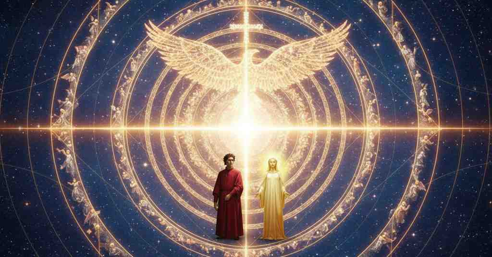

Paradiso (Riassunti — Summaries — 要約)

Canto 1
Segmento 1 1–36
L'autore introduce la sua cantica finale, il Paradiso, affermando di essere stato nel cielo più alto e di aver visto cose che superano la memoria e l'espressione umana. Ora si accinge a cantare ciò che ha potuto serbare nella mente del "regno santo". Invoca Apollo, chiedendo la più alta ispirazione poetica per quest'ultima fatica, alludendo al mito di Marsia per trasmettere l'intensità che ricerca. Si lamenta di quanto raramente gli uomini cerchino la vera gloria (la corona d'alloro) e spera che la sua opera possa ispirare poeti futuri a fare lo stesso.
The author introduces his final canticle, Paradiso, stating that he has been in the highest heaven and has seen things that surpass human memory and expression. He now prepares to sing of what he was able to treasure in his mind of the "holy kingdom." He invokes Apollo, asking for the highest poetic inspiration for this final labor, alluding to the myth of Marsyas to convey the intensity he seeks. He laments how rarely humans seek true glory (the laurel crown) and hopes that his work might inspire future poets to do the same.
作者は最後の篇である天国篇を導入し、自らが最も高き天にいて、人間の記憶と言葉を超えるものを見たと述べる。これから彼は、「聖なる王国」について心に留めることのできたものを歌おうとする。彼はアポロンに祈りを捧げ、この最後の偉業のために最高の詩的霊感を求め、マルシュアスの神話に言及してその求める激しさを示す。人々が真の栄光（月桂冠）を求めることがいかに稀であるかを嘆き、自らの作品が未来の詩人たちにも同様に求めるよう鼓舞することを願う。
Segmento 2 37–75
All'equinozio di primavera, Dante vede Beatrice fissare il sole con un'intensità superiore a quella di un'aquila. Imitando il suo gesto, anche lui riesce a guardare direttamente l'astro ben oltre le capacità umane, percependo un'intensità luminosa tale da sembrare che un secondo sole sia sorto in cielo. Poi, volgendo lo sguardo su di lei, si sente trasformare interiormente, un'esperienza di 'transumanar' indicibile a parole che paragona al mito di Glauco divenuto dio marino. Mentre inizia a salire, si rivolge a Dio, l'amore che governa il cielo, chiedendo se la sua ascesa avvenga con il solo spirito o anche con il corpo.
At the spring equinox, Dante sees Beatrice gaze at the sun with an intensity greater than an eagle's. Imitating her gesture, he too manages to look directly at the star far beyond human capacity, perceiving a light so intense that it seems a second sun has risen in the sky. Then, turning his gaze upon her, he feels himself internally transformed, an ineffable experience of 'transhumanizing' that he compares to the myth of Glaucus becoming a sea god. As he begins to ascend, he addresses God, the love that governs heaven, asking whether his ascent is happening with the spirit alone or also with the body.
春分の頃、ダンテはベアトリーチェが鷲をも超えるほどの強さで太陽を見つめているのを見る。彼女の仕草を真似て、彼もまた人間の能力をはるかに超えて天体を直視することができ、まるで第二の太陽が空に昇ったかのような光の強さを感知する。次に、視線を彼女に向けると、内面的に変容していくのを感じる。それは言葉では言い表せない「超人間化」の経験であり、彼はそれを海の神となったグラウコスの神話になぞらえる。昇天を始めるにあたり、彼は天を治める愛である神に、自らが魂だけで昇るのか、それとも肉体と共になのかを問いかける。
Segmento 3 76–99
Mentre ascende, Dante è sopraffatto dalla musica delle sfere e da una luce immensa, che suscitano in lui un intenso desiderio di conoscerne la causa. Beatrice, leggendogli nel pensiero, gli spiega che non è sulla terra ma sta tornando alla sua vera dimora in Cielo, più veloce della caduta di un fulmine. Questa spiegazione risolve un dubbio ma ne crea un altro per Dante: ora si chiede come il suo corpo fisico e pesante possa attraversare i "corpi levi" delle sfere celesti.
As he ascends, Dante is overwhelmed by the music of the spheres and an immense light, which arouse in him an intense desire to know their cause. Beatrice, reading his thoughts, explains that he is not on earth but is returning to his true home in Heaven, faster than a falling lightning bolt. This explanation resolves one doubt but creates another for Dante: he now wonders how his physical and heavy body can pass through the "light bodies" of the celestial spheres.
昇天するにつれて、ダンテは天球の音楽と広大な光に圧倒され、その原因を知りたいという強い欲求をかき立てられる。ベアトリーチェは彼の心を読むと、もはや地上にはおらず、落雷よりも速く真の住処である天国へ還りつつあるのだと説明する。この説明は一つの疑念を解決するが、ダンテに新たな疑念を生じさせる。今度は、自身の重い肉体がどのようにして天球の「軽い天体」を通り抜けられるのかと不思議に思う。
Segmento 4 100–142
Beatrice spiega a Dante l'ordine universale stabilito da Dio, in cui ogni creatura possiede un istinto naturale che la guida verso la sua origine. Questo istinto è come una freccia scoccata da un arco che indirizza ogni essere alla sua giusta destinazione. Tuttavia, tramite il libero arbitrio, una creatura può essere sviata da questo corso naturale da falsi piaceri, così come la materia a volte resiste alla forma intesa dall'artista. Perciò, l'ascesa di Dante, ormai libero dall'impedimento del peccato, non è un miracolo ma un ritorno naturale a Dio, tanto naturale quanto il salire del fuoco o lo scendere di un fiume; il vero miracolo sarebbe stato se fosse rimasto sulla Terra.
Beatrice explains to Dante the universal order established by God, in which every creature possesses a natural instinct that guides it towards its origin. This instinct is like an arrow shot from a bow that directs every being to its proper destination. However, through free will, a creature can be diverted from this natural course by false pleasures, just as material sometimes resists the form intended by the artist. Therefore, Dante's ascent, now free from the impediment of sin, is not a miracle but a natural return to God, as natural as fire rising or a river flowing downwards; the real miracle would have been if he had remained on Earth.
ベアトリーチェはダンテに、神が定めた普遍的な秩序について説明する。その秩序の中では、全ての被造物がその根源へと向かう自然な本能を持っている。この本能は、全ての存在をそのあるべき目的地へと向かわせる、弓から放たれた矢のようなものである。しかし、自由意志によって、被造物は偽りの快楽に惑わされてこの自然な道筋から外れることがある。それはちょうど、素材が芸術家の意図した形に抵抗することがあるのと同じである。したがって、今や罪の妨げから解放されたダンテの上昇は奇跡ではなく、火が昇り川が下るのと同じように、神への自然な回帰なのである。本当の奇跡は、もし彼が地上に留まっていたならば、それこそがそうであっただろう。
Canto 2
Segmento 1 1–18
Il poeta si rivolge ai suoi lettori usando la metafora della navigazione. Avverte coloro che sono in una "piccioletta barca", con una preparazione insufficiente, di tornare indietro per non smarrirsi nel suo arduo viaggio, un'impresa mai tentata prima e guidata da Minerva, Apollo e le Muse. Invita invece i pochi che si sono nutriti a lungo del "pan de li angeli" (la teologia) a seguirlo nel suo solco, promettendo loro una meraviglia superiore a quella provata dagli Argonauti quando videro Giasone farsi bifolco.
The poet addresses his readers using the metaphor of navigation. He warns those in a "little boat," with insufficient preparation, to turn back lest they get lost on his arduous journey, an enterprise never before attempted and guided by Minerva, Apollo, and the Muses. Instead, he invites the few who have long fed on the "bread of angels" (theology) to follow in his wake, promising them a wonder greater than that felt by the Argonauts when they saw Jason become a plowman.
詩人は航海の比喩を用いて読者に語りかける。準備が不十分なまま「小さな舟」に乗っている者たちには、彼の困難な旅で道に迷わぬよう引き返すようにと警告する。彼の旅はミネルヴァ、アポロ、ムーサたちに導かれた、かつて誰も試みたことのない事業なのである。その一方で、長らく「天使のパン」（神学）を糧としてきた少数の者たちには、彼の航跡を追うよう促し、彼らが体験する驚きは、イアソンが農夫となるのを見たアルゴナウタイの感じた驚きを凌ぐものになるだろうと約束する。
Segmento 2 19–60
La sete del regno divino porta il narratore e Beatrice alla prima stella, la Luna, con la velocità di una freccia. Questa appare come una perla eterna, lucida e solida, che riceve il corpo del narratore al suo interno rimanendo unita, come l'acqua con un raggio di luce. Questo miracolo di un corpo che entra in un altro accende in lui un desiderio ancora più grande di vedere l'essenza in cui la natura umana e Dio si sono uniti. Egli ringrazia Dio, poi chiede a Beatrice la causa delle macchie lunari, che sulla Terra fanno favoleggiare di Caino. Beatrice, dopo aver sorriso dei limiti della ragione umana, gli chiede cosa ne pensi lui stesso, e il narratore espone la sua teoria errata secondo cui le macchie dipendono dalla maggiore o minore densità del corpo lunare.
The thirst for the divine kingdom brings the narrator and Beatrice to the first star, the Moon, with the speed of an arrow. It appears as an eternal, luminous, and solid pearl, which receives the narrator's body within it while remaining whole, like water with a ray of light. This miracle of one body entering another ignites in him an even greater desire to see the essence in which human nature and God were united. He thanks God, then asks Beatrice the cause of the lunar spots, which on Earth lead to fables about Cain. Beatrice, after smiling at the limits of human reason, asks him what he himself thinks, and the narrator presents his erroneous theory that the spots depend on the greater or lesser density of the lunar body.
神の国への渇望が、語り手とベアトリーチェを矢のような速さで最初の星、月へと運ぶ。月は永遠に輝く固い真珠のように見え、水が光の筋を受け入れても一体であり続けるように、語り手の身体をその内部に受け入れる。一つの身体が別の身体に入るというこの奇跡は、彼のうちに、人性(人間の本性)と神が一つになった本質を見たいという、より大きな願望を燃え上がらせる。彼は神に感謝し、次にベアトリーチェに、地上でカインの作り話を生む原因となっている月の斑点について尋ねる。ベアトリーチェは人間の理性の限界に微笑んだ後、彼自身の考えを問い、語り手は、斑点は月の物体の密度の濃淡によるものだという、自らの誤った説を述べる。
Segmento 3 61–111
Beatrice confuta la teoria del narratore secondo cui le macchie lunari sono dovute alla densità variabile. Argomenta prima che la diversa luminosità delle stelle nell'ottava sfera non può derivare da una sola virtù (la densità), ma da diversi "princìpi formali". Poi, affronta direttamente l'ipotesi della rarità, dividendola in due casi: se la rarità attraversasse la Luna, la luce del Sole trasparirebbe durante le eclissi, cosa che non accade. Se invece la rarità si ferma a una certa profondità, la luce si rifletterebbe da uno strato più interno. Per confutare l'obiezione che tale riflesso sarebbe più debole, Beatrice propone un esperimento con tre specchi posti a distanze diverse, dimostrando che la luce riflessa da più lontano è altrettanto brillante, anche se più piccola. Sgominato così l'errore dalla mente del narratore, ella si prepara a infondergli la vera spiegazione, una luce vivissima.
Beatrice refutes the narrator's theory that the lunar spots are due to variable density. She first argues that the different brightness of the stars in the eighth sphere cannot derive from a single virtue (density), but from different "formal principles". Then, she directly addresses the rarity hypothesis, dividing it into two cases: if the rarity passed through the Moon, the Sun's light would shine through during eclipses, which does not happen. If instead the rarity stops at a certain depth, the light would be reflected from a deeper layer. To refute the objection that such a reflection would be dimmer, Beatrice proposes an experiment with three mirrors placed at different distances, demonstrating that light reflected from farther away is just as bright, though smaller. Having thus cleared the error from the narrator's mind, she prepares to infuse him with the true explanation, a most vivid light.
ベアトリーチェは、月の斑点が密度の変化によるものだという語り手の説を論破する。彼女はまず、第八天にある星々の様々な輝きは、単一の性質（密度）からではなく、それぞれ異なる「形相的原理」から生じると論じる。次に、希薄さという仮説に直接取り組み、二つの場合に分ける。もし希薄さが月を貫いているなら、日食の際に太陽の光が透過するはずだが、そうはならない。もし希薄さがある深さで止まるなら、光はより内側の層から反射されることになる。その反射光はより暗くなるという反論を退けるため、ベアトリーチェは異なる距離に置いた三つの鏡を使った実験を提案し、遠くから反射した光は、小さくはなるが、同じように明るいことを証明する。こうして語り手の心から誤りを取り除いた彼女は、彼に真の説明、すなわち極めて鮮やかな光を注ぎ込む準備をする。
Segmento 4 112–148
Beatrice spiega la vera causa delle macchie lunari descrivendo la gerarchia celeste. La virtù divina discende dal cielo più alto, viene ricevuta dal Primo Mobile e poi distribuita e differenziata attraverso le sfere successive mosse dalle Intelligenze angeliche. Queste intelligenze infondono la virtù nei cieli come l'arte del fabbro passa nel martello. Similmente a come l'anima si manifesta in modo diverso nelle varie membra del corpo, l'intelligenza celeste moltiplica la sua bontà attraverso le stelle, unendosi a loro. Pertanto, la diversa luminosità sulla Luna non dipende da cause materiali come densità o rarità, ma è prodotta dal "principio formale": una virtù mista che, a seconda della sua letizia, risplende in modo differente attraverso il corpo celeste, creando così il chiaro e lo scuro.
Beatrice explains the true cause of the lunar spots by describing the celestial hierarchy. Divine virtue descends from the highest heaven, is received by the Primum Mobile, and is then distributed and differentiated through the successive spheres moved by the Angelic Intelligences. These intelligences infuse virtue into the heavens just as the blacksmith's art passes into the hammer. Similar to how the soul manifests differently in the various limbs of the body, the celestial intelligence multiplies its goodness through the stars, uniting with them. Therefore, the varied brightness on the Moon does not depend on material causes like density or rarity, but is produced by the "formal principle": a mixed virtue that, according to its joy, shines differently through the celestial body, thus creating the light and the dark.
ベアトリーチェは天の階層を説明することで、月の斑点の真の原因を明かす。神の徳は至高天から下り、原動天に受け取られ、続いて天使的知性によって動かされる天球を通じて分配され、分化される。これらの知性は、鍛冶屋の技が槌に伝わるように、天に徳を注ぎ込む。魂が身体の様々な部分で異なる形で現れるのと同様に、天の知性はその善性を星々を通じて増殖させ、星々と一体となる。したがって、月の様々な輝きは密度や希薄さといった物質的な原因によるのではなく、「形相的原理」によって生み出される。すなわち、混合された徳が、その喜びに沿って天体を通して様々に輝き、それによって明暗が創られるのである。
Canto 3
Segmento 1 1–33
Chiarito dalla spiegazione di Beatrice sulle macchie lunari, il narratore sta per parlare quando vede dei volti evanescenti, simili a riflessi in acqua limpida. Commettendo l'errore opposto a quello di Narciso, crede che questi esseri reali siano meri riflessi e si volta per cercarne la fonte. Non vedendo nulla, si rigira verso Beatrice, che sorridendo gli spiega il suo errore infantile. Rivela che si tratta di 'vere sustanze', le anime di coloro che non mantennero i voti, relegate in questa sfera più bassa, e lo esorta a parlare con loro.
Enlightened by Beatrice's explanation of the moon spots, the narrator is about to speak when he sees faint faces, similar to reflections in clear water. Committing the opposite error of Narcissus, he believes these real beings are mere reflections and turns to find their source. Seeing nothing, he turns back to Beatrice, who smilingly explains his childish error. She reveals that they are 'true substances', the souls of those who did not keep their vows, relegated to this lowest sphere, and urges him to speak with them.
ベアトリーチェによる月の斑点の説明で啓発された語り手は、話そうとした矢先、澄んだ水面の反射のような、かすかな顔を見る。ナルキッソスとは逆の過ちを犯し、彼はこれらの実在を単なる反射と信じ、その源を探そうと振り返る。何も見えず、ベアトリーチェの方を向き直ると、彼女は微笑みながら彼の子供じみた誤りを説明する。彼女は、それらが『真の実体』、すなわち誓いを守らなかったためにこの最も低い天球に留め置かれている魂であることを明かし、彼らと話すよう促す。
Segmento 2 34–90
Il narratore si rivolge a un'anima che si rivela essere Piccarda Donati. Lei spiega che si trova nella sfera più lenta del Paradiso con altre anime che trascurarono i loro voti. Quando il narratore chiede se desiderano un luogo più elevato, Piccarda risponde che la virtù della carità conforma la loro volontà a quella di Dio, facendoli desiderare solo ciò che hanno. Desiderare di più sarebbe in disaccordo con la volontà divina, il che è impossibile in Paradiso. Afferma che la loro pace si trova nella volontà di Dio, e questo fa capire al narratore che ogni luogo del cielo è paradiso, sebbene la grazia divina sia distribuita in modi diversi.
The narrator addresses a soul who reveals herself to be Piccarda Donati. She explains that she is in the slowest sphere of Paradise with other souls who neglected their vows. When the narrator asks if they desire a higher place, Piccarda replies that the virtue of charity conforms their will to God's, making them desire only what they have. To desire more would be in discord with the divine will, which is impossible in Paradise. She states that their peace is found in God's will, and this makes the narrator understand that every place in heaven is paradise, although divine grace is distributed in different ways.
語り手は、ピッカルダ・ドナーティと名乗る魂に話しかける。彼女は、自らが誓願を怠った他の魂と共に天国で最も遅い天球にいると説明する。語り手がより高い場所を望むかと尋ねると、ピッカルダは、慈愛の徳が自らの意志を神の意志に一致させ、持っているものだけを望むようにさせると答える。それ以上を望むことは神の意志との不一致となり、それは天国ではありえないことである。彼女は、自分たちの平和は神の意志の中にあると断言し、これにより語り手は、神の恩寵は様々に配分されるものの、天国のあらゆる場所が楽園であることを理解する。
Segmento 3 91–130
Come un cibo sazia ma se ne desidera un altro, il narratore chiede a Piccarda perché non ha potuto completare il suo voto. Piccarda racconta di essere entrata in convento da giovane, seguendo la regola di Santa Chiara, ma di essere stata rapita da uomini malvagi. Indica poi un'altra anima, l'imperatrice Costanza, che subì una sorte simile ma non abbandonò mai il velo del cuore. Detto questo, Piccarda canta "Ave, Maria" e svanisce. Il narratore si rivolge a Beatrice, ma la sua luce è così intensa da abbagliarlo, facendolo esitare a porre la sua prossima domanda.
As one food satisfies while another is still desired, the narrator asks Piccarda why she could not complete her vow. Piccarda recounts that she entered a convent when young, following the rule of Saint Clare, but was abducted by evil men. She then points to another soul, the Empress Constance, who suffered a similar fate but never abandoned the veil of the heart. Having said this, Piccarda sings "Ave, Maria" and vanishes. The narrator turns to Beatrice, but her light is so intense that it dazzles him, causing him to hesitate in asking his next question.
一つの食べ物に満足してもなお別のものを欲するように、語り手はピッカルダになぜ誓願を全うできなかったのかを尋ねる。ピッカルダは、聖キアラの教えに従って若くして修道院に入ったが、邪悪な男たちによって連れ去られたと語る。次に彼女は、同じような運命を辿りながらも心のヴェールを決して手放さなかったもう一人の魂、皇妃コスタンツァを指し示す。そう言うと、ピッカルダは「アヴェ・マリア」を歌いながら消え去る。語り手がベアトリーチェに顔を向けると、その光はあまりに強く彼を眩惑し、次の問いを発するのをためらわせる。
Canto 4
Segmento 1 1–27
Dante è paralizzato da due dubbi ugualmente forti, come un uomo che morirebbe di fame tra due cibi identici o un agnello tra due lupi. Sebbene taccia, le sue domande sono così palesi sul suo volto che Beatrice le legge. Ella articola per lui i due quesiti: perché la violenza altrui diminuisce il merito di chi ha una buona volontà, e se è vero, come diceva Platone, che le anime ritornano alle stelle. Beatrice dichiara che tratterà per prima la seconda questione, in quanto più "velenosa".
Dante is paralyzed by two equally strong doubts, like a man who would starve between two identical foods or a lamb between two wolves. Although he is silent, his questions are so evident on his face that Beatrice reads them. She articulates the two queries for him: why the violence of others diminishes the merit of one with good will, and whether it is true, as Plato said, that souls return to the stars. Beatrice declares that she will first address the second question, as it is more "venomous".
ダンテは、二つの同じ食べ物の間で餓死する人間や、二匹の狼の間にいる子羊のように、二つの同じくらい強い疑問に囚われ動けなくなる。彼は黙っているが、その問いは顔にありありと表れているため、ベアトリーチェはそれを読み取る。彼女は彼に代わって二つの疑問を言葉にする。なぜ他者の暴力が善き意志を持つ者の功徳を減らすのか、そしてプラトンが言ったように魂は本当に星に還るのか、というものである。ベアトリーチェは、後者の問いの方がより「毒がある」として、まずそちらから扱うと宣言する。
Segmento 2 28–63
Beatrice spiega che tutte le anime beate, inclusi Maria, Mosè e i più alti santi, risiedono nell'Empireo, il primo giro, e non in cieli diversi. Esse appaiono a Dante nelle sfere inferiori solo per condiscendenza verso il suo intelletto umano, che apprende tramite i sensi. Questo principio, dice, è lo stesso usato dalla Scrittura e dalla Chiesa quando attribuiscono a Dio e agli angeli forme umane. L'insegnamento di Platone nel Timeo, secondo cui le anime tornano alle loro stelle, è diverso perché sembra letterale. Tuttavia, Beatrice offre un'interpretazione più caritatevole: se Platone intendeva parlare dell'influenza astrologica, allora la sua idea contiene una parte di verità. Conclude che proprio il fraintendimento di questo principio portò il mondo antico a deviare verso il paganesimo, adorando i pianeti come dèi quali Giove, Mercurio e Marte.
Beatrice explains that all blessed souls, including Mary, Moses, and the highest saints, reside in the Empyrean, the first circle, and not in different heavens. They appear to Dante in the lower spheres only as a condescension to his human intellect, which learns through the senses. This principle, she says, is the same one used by Scripture and the Church when they attribute human forms to God and the angels. Plato's teaching in the Timaeus, that souls return to their stars, is different because it seems to be literal. However, Beatrice offers a more charitable interpretation: if Plato meant to speak of astrological influence, then his idea contains a partial truth. She concludes that the misunderstanding of this very principle led the ancient world astray into paganism, worshipping the planets as gods such as Jupiter, Mercury, and Mars.
ベアトリーチェは、マリア、モーセ、そして最高位の聖人たちを含むすべての福なる魂は、異なる天にあるのではなく、至高天（第一の円）に住んでいると説明する。彼らがダンテに下位の天球で姿を現すのは、感覚を通して学ぶ人間の知性に合わせた配慮（応俗）に過ぎない。この原理は、聖書や教会が神や天使に人間の姿を与える際に用いるものと同じであると彼女は言う。魂が自らの星に還るというプラトンの『ティマイオス』における教えは、文字通りに解釈されるように思われるため、これとは異なっている。しかし、ベアトリーチェはより寛大な解釈を示す。もしプラトンが占星術的な影響について語ろうとしたのであれば、その考えには一部の真実が含まれている。まさにこの原理の誤解が、古代世界を異教へと迷わせ、ユピテル、メルクリウス、マルスといった惑星を神として崇拝するに至らせたと、彼女は結論づける。
Segmento 3 64–114
Beatrice affronta il secondo dubbio di Dante: la giustizia divina che diminuisce il merito delle anime che subirono violenza. Spiega che la volontà, se è assoluta, non cede mai al male, come il fuoco che tende sempre verso l'alto; queste anime, invece, non ebbero una volontà così integra, altrimenti sarebbero tornate al chiostro una volta libere, come fecero Lorenzo e Muzio. Risolve poi un'apparente contraddizione: Piccarda, parlando della fedeltà di Costanza al velo, si riferiva alla "voglia assoluta" che non acconsente al male. Beatrice, invece, parlava della volontà relativa che cede per paura di un danno maggiore, come nel caso di Alcmeone. Pertanto, entrambe hanno detto la verità.
Beatrice addresses Dante's second doubt: the divine justice that diminishes the merit of souls who suffered violence. She explains that the will, if it is absolute, never yields to evil, like fire that always tends upward; these souls, however, did not have such an integral will, otherwise they would have returned to the cloister once free, as Lawrence and Mucius did. She then resolves an apparent contradiction: Piccarda, speaking of Constance's faithfulness to the veil, was referring to the 'absolute will' that does not consent to evil. Beatrice, on the other hand, was speaking of the relative will that yields out of fear of greater harm, as in the case of Alcmaeon. Therefore, both told the truth.
ベアトリーチェは、暴力を受けた魂の功徳が減じられるという神の正義に関するダンテの第二の疑問に取り組む。彼女は、意志が絶対的なものであれば、常に上を目指す炎のように、決して悪に屈することはないと説明する。しかし、これらの魂はそれほど完全な意志を持っていなかった。さもなければ、ロレンツォやムキウスがそうしたように、自由になった後で修道院に戻っていたはずである。次に、彼女は明白な矛盾を解決する。コンスタンツァのヴェールへの忠実さについて語ったピッカルダは、悪に同意しない「絶対的な意志」に言及していたのである。一方、ベアトリーチェが語っていたのは、アルクマイオンの場合のように、より大きな害を恐れて屈する相対的な意志についてであった。したがって、二人とも真実を語っていたのである。
Segmento 4 115–142
Rasserenato dalla spiegazione di Beatrice che ha placato i suoi due dubbi, Dante riflette su come l'intelletto umano non si sazi mai finché non è illuminato dalla Verità ultima. Egli capisce che è nella natura umana che dal vero raggiunto nasca un nuovo dubbio, come un germoglio, spingendo l'anima di vetta in vetta verso il sommo bene. Incoraggiato da questa consapevolezza, chiede a Beatrice se sia possibile compensare i voti non mantenuti con altre opere buone. Beatrice lo guarda con occhi così pieni di amore divino che la sua forza viene meno e lui, sopraffatto, quasi sviene.
Calmed by Beatrice's explanation which has placated his two doubts, Dante reflects on how the human intellect is never satisfied until it is illuminated by the ultimate Truth. He understands that it is human nature for a new doubt to be born from a reached truth, like a new shoot, pushing the soul from peak to peak towards the highest good. Encouraged by this awareness, he asks Beatrice if it is possible to compensate for unfulfilled vows with other good works. Beatrice looks at him with eyes so full of divine love that his strength fails and he, overwhelmed, almost faints.
二つの疑問を静めたベアトリーチェの説明に心を落ち着かせたダンテは、人間の知性は至高の真理に照らされるまで決して満たされないと考察する。彼は、到達した真理から新たな疑問が芽生え、魂を頂から頂へと至高の善へと駆り立てるのが人間の本性だと理解する。この気づきに勇気づけられ、彼はベアトリーチェに、果たされなかった誓願を他の善行で償うことが可能かどうかを尋ねる。ベアトリーチェは神聖な愛に満ちた眼差しで彼を見つめ、その力に圧倒された彼は気を失いそうになる。
Canto 5
Segmento 1 1–84
Beatrice risponde alla domanda inespressa di Dante sulla possibilità di compensare un voto non mantenuto. Spiega che il dono più grande di Dio è la libertà del volere, e un voto è un patto in cui si sacrifica volontariamente questo tesoro. Sebbene il patto in sé non possa essere annullato, la materia del voto può essere commutata con l'autorità della Chiesa, a condizione che la nuova offerta sia di valore superiore. Beatrice mette in guardia contro i voti avventati, citando i tragici esempi di Iefte e Agamennone, ed esorta i cristiani a essere saldi, seguendo le Scritture e la guida della Chiesa piuttosto che i propri impulsi sconsiderati.
Beatrice answers Dante's unspoken question about the possibility of compensating for an unfulfilled vow. She explains that God's greatest gift is free will, and a vow is a pact in which this treasure is voluntarily sacrificed. Although the pact itself cannot be annulled, the matter of the vow can be commuted with the Church's authority, provided that the new offering is of greater value. Beatrice warns against rash vows, citing the tragic examples of Jephthah and Agamemnon, and exhorts Christians to be steadfast, following the Scriptures and the Church's guidance rather than their own reckless impulses.
ベアトリーチェは、果たされなかった誓願を償うことが可能かというダンテの口に出されない問いに答える。神の最も偉大な賜物は自由意志であり、誓願とはその宝を自発的に犠牲にする契約なのだと彼女は説明する。契約そのものを取り消すことはできないが、誓願の対象物は、新しい捧げ物がより大きな価値を持つという条件で、教会の権威によって変更することができる。ベアトリーチェはエフタとアガメムノンの悲劇的な例を挙げて軽率な誓いを立てることを戒め、キリスト教徒は向こう見ずな衝動に従うのではなく、聖書と教会の導きに従って堅実であるべきだと諭す。
Segmento 2 85–123
Terminato il discorso di Beatrice, lei e Dante salgono al secondo cielo, Mercurio, con la rapidità di una freccia. La gioia di Beatrice entrando nel cielo rende il pianeta più luminoso, e anche Dante si sente trasformato. Più di mille splendori si avvicinano a loro come pesci attratti da un'esca, dicendo: «Ecco chi accrescerà i nostri amori». Dopo che Dante si rivolge al lettore per esprimere la sua grande curiosità, uno degli spiriti lo invita a interrogarli liberamente, riconoscendo la grazia che gli è stata concessa. Beatrice lo incoraggia a parlare con sicurezza e a credere in loro come a dèi.
Beatrice's discourse having ended, she and Dante ascend to the second heaven, Mercury, with the speed of an arrow. Beatrice's joy upon entering the heaven makes the planet more luminous, and Dante too feels transformed. More than a thousand splendors approach them like fish drawn to bait, saying: "Here is one who will increase our loves." After Dante addresses the reader to express his great curiosity, one of the spirits invites him to question them freely, acknowledging the grace granted to him. Beatrice encourages him to speak confidently and to believe in them as in gods.
ベアトリーチェの話が終わり、彼女とダンテは矢のような速さで第二の天、水星へと昇る。ベアトリーチェが天に入った喜びで惑星はより輝きを増し、ダンテ自身も変容を感じる。千を超える輝く魂が、餌に引き寄せられる魚のように彼らに近づき、「我らの愛を増す者が来た」と言う。ダンテが読者に向けて自身の強い好奇心を表した後、霊の一人が彼に与えられた恩寵を認め、自由に質問するよう促す。ベアトリーチェは、確信をもって話し、神々のように彼らを信じるようダンテを励ます。
Segmento 3 124–139
Dante si rivolge a uno degli spiriti luminosi. Dice di vedere che la sua luce proviene dalla sua gioia, ma chiede chi sia e perché si trovi in questa sfera, che è nascosta ai mortali dalla luce del sole. In risposta, l'anima santa, per la gioia accresciuta, diventa ancora più splendente, nascondendosi completamente nel proprio raggio come il sole accecante. Così avvolta nella sua luce, inizia a rispondere, ma la sua risposta è rimandata al canto successivo.
Dante addresses one of the luminous spirits. He says he can see that its light comes from its joy, but he asks who it is and why it is in this sphere, which is hidden from mortals by the sun's light. In response, the holy soul, due to its increased joy, becomes even more resplendent, completely hiding itself within its own ray like the blinding sun. Thus enveloped in its light, it begins to reply, but its answer is deferred to the next canto.
ダンテは輝く霊の一人に話しかける。その光が喜びから発せられていることはわかると言うが、その正体と、なぜ太陽の光によって人間界から隠されているこの天にいるのかを尋ねる。それに応えて、聖なる魂は喜びを増し、さらに輝きを強め、まばゆい太陽のように自らの光線の中に完全に姿を隠す。こうして光に包まれたまま返事を始めるが、その答えは次の歌に持ち越される。
Canto 6
Segmento 1 1–27
L'anima si rivela come l'imperatore Giustiniano. Egli narra la storia dell'aquila imperiale: dopo che Costantino ne trasferì la sede a Costantinopoli, essa governò il mondo dall'Oriente per centinaia d'anni, passando di mano in mano fino a giungere alla sua. Giustiniano spiega che, spinto dall'amore divino, si dedicò a purificare le leggi romane dall'inutile e dal vano. Prima di ciò, però, era caduto nell'eresia credendo in una sola natura di Cristo, ma il papa Agapito lo ricondusse alla vera fede. Dopo la sua conversione, Dio lo ispirò a compiere la grande opera giuridica, mentre lui affidava il comando militare al suo generale Belisario.
The soul reveals himself as the Emperor Justinian. He recounts the history of the imperial eagle: after Constantine moved its seat to Constantinople, it governed the world from the East for hundreds of years, passing from hand to hand until it reached his. Justinian explains that, driven by divine love, he dedicated himself to purifying Roman laws of the useless and the vain. Before this, however, he had fallen into heresy, believing in a single nature of Christ, but Pope Agapetus led him back to the true faith. After his conversion, God inspired him to undertake the great legal work, while he entrusted military command to his general Belisarius.
魂は自らが皇帝ユスティニアヌスであることを明かす。彼は帝国の鷲の歴史を語る。コンスタンティヌスがその本拠をコンスタンティノープルに移した後、鷲は何百年もの間、東方から世界を統治し、代々の皇帝を経て彼の手元に届いた。ユスティニアヌスは、神の愛に動かされてローマ法から無用で無益なものを取り除くことに専念したと説明する。しかしその以前は、キリストに一つの本性しかないと信じる異端に陥っていたが、教皇アガピトゥスによって正しい信仰へと導かれた。改宗後、神は彼に偉大な法典編纂の事業を霊感し、一方で彼は軍事指揮権を将軍ベリサリウスに委ねた。
Segmento 2 28–96
Giustiniano prosegue il suo discorso per mostrare, attraverso la gloriosa storia dell'aquila imperiale, perché sbaglino sia i ghibellini che se ne appropriano sia i guelfi che vi si oppongono. Egli ripercorre le tappe di questa storia, cominciando da Pallante che morì per dare il regno ad Enea, passando per Alba Longa, i sette re di Roma e gli eroi della Repubblica come Scipione e Pompeo che sconfissero Annibale e altri nemici. La narrazione continua con Giulio Cesare, le sue conquiste in Gallia e le vittorie nella guerra civile, fino ad Augusto che portò la pace universale (la "pax romana"). Giustiniano spiega poi il culmine teologico di questa storia: sotto il terzo imperatore, Tiberio, la giustizia divina compì la vendetta per il peccato originale attraverso la crocifissione di Cristo. In seguito, sotto Tito, si compì la "vendetta della vendetta" con la distruzione di Gerusalemme. Infine, l'aquila protesse la Chiesa quando Carlo Magno sconfisse i Longobardi.
Justinian continues his speech to show, through the glorious history of the imperial eagle, why both the Ghibellines who appropriate it and the Guelphs who oppose it are wrong. He retraces the stages of this history, beginning with Pallas who died to give the kingdom to Aeneas, passing through Alba Longa, the seven kings of Rome, and the heroes of the Republic like Scipio and Pompey who defeated Hannibal and other enemies. The narrative continues with Julius Caesar, his conquests in Gaul and victories in the civil war, up to Augustus who brought universal peace (the "pax romana"). Justinian then explains the theological culmination of this history: under the third emperor, Tiberius, divine justice carried out the vengeance for original sin through the crucifixion of Christ. Subsequently, under Titus, the "vengeance for the vengeance" was carried out with the destruction of Jerusalem. Finally, the eagle protected the Church when Charlemagne defeated the Lombards.
ユスティニアヌスは話を続け、帝国の鷲の輝かしい歴史を通して、それを私物化するギベリン党もそれに敵対するグエルフ党も、なぜ共に誤っているのかを示す。彼はこの歴史の段階をたどり直す。それはアエネアスに王国を与えるために死んだパラスに始まり、アルバ・ロンガ、ローマの七人の王、そしてハンニバルや他の敵を打ち破ったスキピオやポンペイウスのような共和政の英雄たちを経ていく。物語はユリウス・カエサル、彼のガリア征服と内乱での勝利へと続き、普遍的な平和（「パクス・ロマーナ」）をもたらしたアウグストゥスに至る。次にユスティニアヌスはこの歴史の神学的な頂点を説明する。第三代皇帝ティベリウスの下で、神の正義はキリストの磔刑を通して原罪に対する復讐を遂行した。その後、ティトゥスの下で、エルサレムの破壊をもって「復讐への復讐」が遂行された。最後に、カール大帝がロンゴバルド族を打ち破った時、鷲は教会を保護した。
Segmento 3 97–142
Giustiniano conclude il suo discorso, condannando sia i guelfi, che oppongono al segno imperiale i gigli di Francia, sia i ghibellini, che se ne appropriano per fini di parte. Spiega poi che questa "picciola stella" (Mercurio) accoglie gli spiriti buoni che in vita agirono per ottenere onore e fama. Parte della loro beatitudine consiste nel vedere che la loro ricompensa è perfettamente commisurata al loro merito, un'espressione della giustizia divina. Infine, indica la luce di Romeo di Villanova, un umile consigliere di Raimondo Berengario che riuscì a far sposare le sue quattro figlie con quattro re. Nonostante ciò, fu vittima di calunnie e, pur dimostrando la sua onestà, fu costretto ad andarsene povero e vecchio, vivendo il resto dei suoi giorni in dignitosa mendicità.
Justinian concludes his speech, condemning both the Guelphs, who oppose the imperial symbol with the lilies of France, and the Ghibellines, who appropriate it for factional purposes. He then explains that this "little star" (Mercury) is home to the good spirits who acted in life to obtain honor and fame. Part of their bliss consists in seeing that their reward is perfectly commensurate with their merit, an expression of divine justice. Finally, he points out the light of Romeo di Villanova, a humble advisor to Raymond Berengar who managed to marry his four daughters to four kings. Despite this, he was the victim of slander and, despite proving his honesty, was forced to leave poor and old, living the rest of his days in dignified beggary.
ユスティニアヌスは演説を締めくくり、帝国の印にフランスの百合を対抗させるグエルフ党と、それを党利党略のために私物化するギベリン党の両方を非難する。次に彼は、この「小さな星」（水星）が、生前、名誉と名声を得るために行動した善霊たちを迎える場所であると説明する。彼らの至福の一部は、神の正義の現れとして、その報酬が功績に完全に相応していることを見ることにある。最後に彼は、レーモン・ベランジェ4世の謙虚な顧問として、その四人の娘を四人の王に嫁がせることに成功したロメオ・ディ・ヴィッラノーヴァの光を指し示す。それにもかかわらず、彼は中傷の犠牲となり、潔白を証明したにもかかわらず、貧しく老いた身で去ることを余儀なくされ、残りの日々を威厳ある物乞いとして生きた。
Canto 7
Segmento 1 1–18
L'anima di Giustiniano intona un inno in un misto di latino ed ebraico, poi si allontana danzando insieme agli altri spiriti, scomparendo rapidamente come velocissime faville. Dante vorrebbe porre una domanda a Beatrice ma è paralizzato dalla reverenza, che lo domina al solo pensiero del nome di lei. Beatrice, però, intuisce il suo dubbio e comincia a parlare, rivolgendogli un sorriso così radioso da poter rendere felice un uomo persino nel fuoco.
The soul of Justinian intones a hymn in a mix of Latin and Hebrew, then moves away dancing with the other spirits, disappearing rapidly like the swiftest sparks. Dante wants to ask Beatrice a question but is paralyzed by reverence, which overcomes him at the mere thought of her name. Beatrice, however, intuits his doubt and begins to speak, addressing him with a smile so radiant it could make a man happy even in the fire.
ユスティニアヌスの魂はラテン語とヘブライ語が混じった賛歌を歌い、他の霊たちと共に踊りながら遠ざかり、極めて速い火花のように素早く姿を消す。ダンテはベアトリーチェに問いかけたいことがあるが、彼女の名を思うだけで彼を圧倒するほどの敬愛の念に麻痺してしまう。しかしベアトリーチェは彼の疑念を察し、火の中にいる人間さえも幸せにするほど晴れやかな微笑みを彼に向け、語り始める。
Segmento 2 19–51
Beatrice risponde al dubbio di Dante, spiegando che Adamo, non volendo frenare la propria volontà, peccò, condannando sé stesso e tutta l'umanità. Per secoli la specie umana giacque nell'errore, finché il Verbo di Dio scese e unì a sé in un'unica persona la natura umana, che si era allontanata dal suo Creatore. La pena della croce, se misurata contro la natura umana assunta da Cristo, fu sommamente giusta. Tuttavia, se si considera la persona divina che la subì, fu la più grande delle ingiustizie. Da questo singolo atto scaturirono effetti diversi, e perciò non è strano che una giusta vendetta (la crocifissione) sia stata a sua volta vendicata da una giusta corte.
Beatrice responds to Dante's doubt, explaining that Adam, by not wanting to restrain his own will, sinned, condemning himself and all of humanity. For centuries the human race lay in error, until the Word of God descended and united to himself in a single person human nature, which had strayed from its Creator. The punishment of the cross, if measured against the human nature assumed by Christ, was supremely just. However, if one considers the divine person who suffered it, it was the greatest of injustices. From this single act diverse effects arose, and therefore it is not strange that a just vengeance (the Crucifixion) was in turn avenged by a just court.
ベアトリーチェはダンテの疑念に答え、アダムは自らの意志を抑制しようとせず罪を犯し、自身と全人類を罪に定めたのだと説明する。何世紀にもわたって人類は過ちの中にあったが、ついに神の御言葉が降臨し、創造主から離れていた人間の本性を、自らの一つの位格のうちに結合させた。キリストがまとった人間性に対して計られるならば、十字架の罰はこの上なく正当なものであった。しかし、それを受けた神の位格を考えるならば、それは最大の不正であった。この一つの行いから異なる結果が生じたのであり、それゆえ正当な復讐（磔刑）が、今度は正当な法廷によって復讐されたことも不思議ではない。
Segmento 3 52–120
Beatrice percepisce il dubbio di Dante sul perché Dio abbia scelto proprio l'Incarnazione per la redenzione umana. Spiega che la creatura umana, creata direttamente da Dio, era in origine libera ed eterna, ma il peccato l'ha resa dissimile dal sommo bene, facendole perdere la sua nobiltà. L'uomo non poteva da sé soddisfare il debito, poiché nessun atto di umiltà poteva eguagliare la superbia della disobbedienza originale. Pertanto, Dio, nella sua bontà, scelse di unire misericordia e giustizia. Questo fu l'atto più generoso e magnifico, poiché Dio diede sé stesso per permettere all'uomo di risollevarsi, soddisfacendo così la giustizia divina in un modo che la sola clemenza non avrebbe potuto fare.
Beatrice perceives Dante's doubt about why God chose the Incarnation specifically for human redemption. She explains that the human creature, created directly by God, was originally free and eternal, but sin made it unlike the highest good, causing it to lose its nobility. Man could not by himself satisfy the debt, since no act of humility could equal the pride of the original disobedience. Therefore, God, in His goodness, chose to unite mercy and justice. This was the most generous and magnificent act, as God gave Himself to allow man to rise again, thus satisfying divine justice in a way that mere clemency could not have done.
ベアトリーチェは、なぜ神が人間の贖いのために受肉という特別な方法を選んだのかというダンテの疑念を察する。彼女は、神によって直接創造された人間は、本来自由で永遠であったが、罪によって至高の善と似ていないものとなり、その高貴さを失ったのだと説明する。人間は自力でその負債を償うことはできなかった。いかなる謙遜の行いも、原初の不従順という傲慢に匹敵することはできなかったからである。それゆえ神は、その善性において、慈悲と正義の両方を結合することを選ばれた。これは最も寛大で壮大な行いであった。神は人間が自ら立ち上がることを可能にするために御自身を与え、それによって単なる赦しでは成し得なかった方法で神の正義を満たしたのである。
Segmento 4 121–148
Beatrice risponde al dubbio di Dante sul perché gli elementi e i loro composti siano corruttibili, a differenza di altre creature. Spiega che vi è una differenza tra ciò che è creato direttamente da Dio e ciò che è creato indirettamente. Gli angeli, i cieli e l'anima umana sono creati direttamente e perciò sono incorruttibili. Al contrario, gli elementi, le piante e gli animali sono formati da una "virtù creata", ovvero dall'influenza delle stelle, e quindi sono soggetti alla corruzione. Conclude che, poiché l'anima umana è creata direttamente da Dio, e poiché anche la carne dei primi parenti fu una creazione diretta, questo stesso principio dimostra la futura resurrezione dei corpi.
Beatrice answers Dante's doubt about why the elements and their compounds are corruptible, unlike other created things. She explains that there is a difference between what is created directly by God and what is created indirectly. The angels, the heavens, and the human soul are created directly and are therefore incorruptible. In contrast, the elements, plants, and animals are formed by a "created power," namely the influence of the stars, and thus are subject to corruption. She concludes that, since the human soul is created directly by God, and since the flesh of the first parents was also a direct creation, this same principle demonstrates the future resurrection of bodies.
ベアトリーチェは、なぜ元素とその混合物は他の被造物と違って朽ちるのかというダンテの疑問に答える。彼女は、神によって直接創造されたものと、間接的に創造されたものとの間には違いがあると説明する。天使、諸天、そして人間の魂は直接創造されたため不朽である。対照的に、元素、植物、動物は「創造された力」、すなわち星々の影響によって形作られるため、朽ちる運命にある。そして、人間の魂は神によって直接創造され、最初の両親の肉体もまた直接の創造物であったため、この同じ原理が将来の肉体の復活を証明するのだと結論づける。
Canto 8
Segmento 1 1–48
Dante sale al terzo cielo, Venere, e riflette sull'antica credenza pagana che la stella irradiasse l'amore folle. Si accorge dell'ascesa solo vedendo la bellezza di Beatrice aumentare. Lì, scorge innumerevoli luci, le anime dei beati, che si muovono in cerchio a velocità diverse cantando "Osanna". Una di queste anime si avvicina, si dichiara pronta a rispondere alle sue domande e cita un verso di una canzone dello stesso Dante. Dopo aver ricevuto l'assenso di Beatrice, Dante chiede con grande affetto allo spirito chi sia, e la luce gioisce aumentando il proprio splendore.
Dante ascends to the third heaven, Venus, and reflects on the ancient pagan belief that the star radiated mad love. He becomes aware of the ascent only by seeing Beatrice's beauty increase. There, he perceives innumerable lights, the souls of the blessed, moving in circles at different speeds while singing 'Hosanna'. One of these souls approaches, declares itself ready to answer his questions, and quotes a line from one of Dante's own poems. After receiving Beatrice's assent, Dante asks the spirit with great affection who it is, and the light rejoices, increasing its own splendor.
ダンテは第三天・金星天に昇り、その星が狂おしい愛を放つという古代異教の信仰について思いを巡らす。彼はベアトリーチェの美しさが増すのを見て、初めて昇天に気づく。そこでは、祝福された魂である無数の光が、様々な速さで輪を描いて動きながら「ホザンナ」と歌っているのを見る。それらの魂の一つが近づき、彼の問いに答える用意があると述べ、ダンテ自身の詩の一節を引用する。ベアトリーチェの同意を得た後、ダンテが深い親愛の情を込めてその霊に誰かと尋ねると、光は喜んでその輝きを増す。
Segmento 2 49–84
L'anima beata, Carlo Martello, spiega di aver vissuto poco sulla terra e che, se fosse vissuto più a lungo, si sarebbero evitati molti mali futuri. Egli elenca i vasti territori che avrebbe ereditato: la Provenza, il Regno di Napoli, l'Ungheria e la Sicilia. Attribuisce la perdita della Sicilia al malgoverno angioino, che provocò la rivolta dei Vespri Siciliani. Infine, critica l'avarizia di suo fratello Roberto d'Angiò e lo avverte che i suoi consiglieri catalani rischiano di rovinare il suo regno già oppresso.
The blessed soul, Charles Martel, explains that he lived on earth for only a short time and that, had he lived longer, many future evils would have been avoided. He lists the vast territories he would have inherited: Provence, the Kingdom of Naples, Hungary, and Sicily. He attributes the loss of Sicily to the bad Angevin government, which provoked the revolt of the Sicilian Vespers. Finally, he criticizes the greed of his brother Robert of Anjou and warns him that his Catalan advisors risk ruining his already burdened kingdom.
祝福された魂カルロ・マルテッロは、地上にいたのはわずかな間であり、もしもっと長く生きていれば未来の多くの災いを避けられただろうと説明する。彼は自分が相続するはずだった広大な領土、プロヴァンス、ナポリ王国、ハンガリー、シチリアを列挙する。彼はシチリアの喪失を、シチリアの晩鐘の反乱を引き起こしたアンジュー家の悪政に帰している。最後に、弟ロベルトの強欲を批判し、そのカタルーニャ人の側近たちが、すでに重荷を負っている王国を破滅させる危険があると警告する。
Segmento 3 85–114
Dante, rallegrato dalle parole di Carlo, gli pone un dubbio: come da un buon padre, un "dolce seme", possa nascere un figlio malvagio, "amaro". Carlo inizia la sua spiegazione affermando il principio della Provvidenza divina, la quale agisce come virtù nei cieli. Spiega che ogni cosa è diretta a un fine prestabilito, come una freccia verso il bersaglio. Se così non fosse, il creato non sarebbe un'opera d'arte ma un insieme di rovine, il che è impossibile data la perfezione degli angeli che muovono le stelle e di Dio che li ha creati. Dante si dichiara convinto da questa premessa, riconoscendo che la Natura non può fallire nel suo compito.
Dante, gladdened by Charles's words, poses a question to him: how from a good father, a "sweet seed," can a wicked son, something "bitter," be born. Charles begins his explanation by affirming the principle of Divine Providence, which acts as a virtue in the heavens. He explains that everything is directed to a predetermined end, like an arrow toward its target. If this were not so, creation would not be a work of art but a collection of ruins, which is impossible given the perfection of the angels who move the stars and of God who created them. Dante declares himself convinced by this premise, recognizing that Nature cannot fail in its task.
カルロの言葉に喜んだダンテは、一つの疑問を投げかける。すなわち、善良な父という「甘い種」から、いかにして邪悪な息子という「苦いもの」が生まれ得るのかと。カルロは、天において徳として作用する神の摂理の原則を断言することから説明を始める。万物は的を射る矢のように、あらかじめ定められた目的に向かうと彼は説明する。もしそうでなければ、被造物は芸術作品ではなく廃墟の山と化すだろうが、星々を動かす天使と彼らを創造した神の完全性を考えれば、それはあり得ない。ダンテはこの前提に納得し、自然はその務めにおいて失敗するはずはないと認める。
Segmento 4 115–148
Carlo Martel prosegue la sua spiegazione, affermando che la società umana necessita di cittadini con ruoli e capacità diverse. Spiega che la Provvidenza divina, agendo attraverso le influenze celesti, distribuisce queste diverse inclinazioni innate agli individui senza riguardo per la stirpe. Per questo motivo i figli possono essere diversi dai loro genitori, poiché la natura generata è superata dal "proveder divino". Il grande errore del mondo, conclude Carlo, è ignorare queste disposizioni naturali, costringendo le persone a ruoli inadatti: si fa religioso chi è nato per la spada e re chi è adatto alla predicazione, deviando così dal giusto cammino.
Charles Martel continues his explanation, stating that human society requires citizens with different roles and abilities. He explains that Divine Providence, acting through celestial influences, distributes these different innate inclinations to individuals without regard for lineage. For this reason, children can be different from their parents, as generated nature is overcome by "divine providence". The world's great error, Charles concludes, is to ignore these natural dispositions, forcing people into unsuitable roles: someone born for the sword is made a religious figure, and someone suited for sermons is made a king, thus deviating from the right path.
カルロ・マルテッロは説明を続け、人間社会には異なる役割と能力を持つ市民が必要だと断言する。神の摂理は、天体の影響を通じて、これらの様々な生来の素質を血統に関係なく個人に授けると彼は説明する。このため、遺伝的性質は「神の摂理」に打ち勝たれるので、子は親と異なることがある。この世の大きな過ちは、これらの生来の素質を無視し、人々を不適切な役割に押し込めることだとカルロは結論づける。すなわち、剣を持つために生まれた者を聖職者にし、説教に適した者を王にするため、正しい道から外れてしまうのである。
Canto 9
Segmento 1 1–63
Dopo che Carlo Martello ha finito di parlare, profetizzando sventure per la sua discendenza ma proibendo a Dante di rivelarle, un altro spirito splendente si fa avanti. Con il consenso di Beatrice, Dante si rivolge all'anima, che si rivela come Cunizza da Romano. Spiega di trovarsi nel cielo di Venere perché l'influsso della stella prevalse su di lei, ma accetta con gioia questa sorte. Cunizza condanna poi la corruzione della sua terra natale, la Marca Trivigiana, e profetizza eventi sanguinosi: la sconfitta dei Padovani, l'assassinio del signore di Treviso, e l'infame tradimento del vescovo di Feltre. Infine, rivela che le anime beate conoscono il futuro perché vedono il giudizio di Dio riflesso nei Troni, gli angeli che fungono da specchi divini, motivo per cui le loro dure parole sono giuste.
After Charles Martel has finished speaking, prophesying misfortunes for his descendants but forbidding Dante from revealing them, another shining spirit comes forward. With Beatrice's consent, Dante addresses the soul, who reveals herself as Cunizza da Romano. She explains that she is in the Heaven of Venus because the star's influence prevailed over her, but she joyfully accepts this fate. Cunizza then condemns the corruption of her native land, the March of Treviso, and prophesies bloody events: the defeat of the Paduans, the assassination of the lord of Treviso, and the infamous betrayal by the bishop of Feltre. Finally, she reveals that the blessed souls know the future because they see God's judgment reflected in the Thrones, the angels who act as divine mirrors, which is why their harsh words are just.
カルロ・マルテッロが、子孫に降りかかる不幸を予言しながらも、それをダンテに明かすことを禁じて話を終えると、別の輝く魂が進み出る。ベアトリーチェの同意を得てダンテがその魂に語りかけると、魂は自らをクニッツァ・ダ・ロマーノだと明かす。彼女は、星の影響力に負けたために金星天にいるが、その運命を喜んで受け入れていると説明する。次にクニッツァは故郷であるトレヴィーゾ辺境伯領の堕落を非難し、パドヴァ人の敗北、トレヴィーゾの領主の暗殺、フェルトレの司教による悪名高い裏切りといった血なまぐさい出来事を予言する。最後に彼女は、祝福された魂が未来を知るのは、神の鏡として機能する天使である座天使（トローニ）に映る神の裁きを見るからであり、それゆえに彼らの厳しい言葉も正しいのだと明かす。
Segmento 2 64–108
Dopo che Cunizza tace, un altro spirito, splendente come un rubino al sole, si fa avanti. Dante, sapendo che l'anima beata può leggere nel suo pensiero, la prega di soddisfare il suo desiderio inespresso e di rivelare la sua identità. Lo spirito si presenta come Folco di Marsiglia, descrivendo la sua patria sulla costa mediterranea. Confessa di aver vissuto in gioventù un amore passionale più ardente di quello di Didone, Fillide o Ercole. Tuttavia, spiega che in questo cielo non ci si pente della colpa, che non torna alla mente, ma si gioisce del potere divino che ha ordinato e previsto tutto, volgendo quella forte inclinazione terrena a un fine buono. Le anime qui ammirano l'arte divina che ha saputo adornare tale affetto.
After Cunizza falls silent, another spirit, shining like a sun-struck ruby, comes forward. Dante, knowing that the blessed soul can read his thoughts, asks it to satisfy his unspoken desire and reveal its identity. The spirit introduces himself as Folco of Marseilles, describing his homeland on the Mediterranean coast. He confesses to have lived in his youth a passionate love more ardent than that of Dido, Phyllis, or Hercules. However, he explains that in this heaven they do not repent of the fault, which is not remembered, but rejoice in the divine power that ordained and foresaw everything, turning that strong earthly inclination to a good end. The souls here admire the divine art that adorned such affection.
クニッツァが沈黙した後、太陽に照らされたルビーのように輝く別の魂が進み出る。ダンテは、祝福された魂が自分の心を読めることを知っているため、言葉にしていない願いをかなえて正体を明かしてくれるよう頼む。その魂は自らをマルセイユのフォルコだと名乗り、地中海沿岸にある故郷について説明する。彼は若い頃、ディードー、ピュリス、ヘラクレスよりも燃えるような情熱的な愛に生きたことを告白する。しかし、この天国では、もはや心に浮かぶことのないその罪を悔いるのではなく、すべてを定め、予見し、その強い地上的な傾向を善い目的へと向けた神の力を喜ぶのだと説明する。ここの魂たちは、そのような愛情を飾った神の技を称賛している。
Segmento 3 109–142
Per soddisfare il desiderio di Dante, Folco identifica l'anima luminosa accanto a sé come Raab, la prostituta di Gerico. Spiega che fu la prima anima del trionfo di Cristo ad essere assunta in questo cielo, come premio per aver aiutato Giosuè nella conquista della Terra Santa. Folco si lancia poi in una dura invettiva contro Firenze, città 'piantata' da Lucifero, che produce e spande il 'maladetto fiore' (il fiorino), causa della corruzione della Chiesa. A causa di questa avidità, papa e cardinali hanno trasformato il pastore in lupo, trascurando il Vangelo per studiare solo i Decretali a scopo di lucro. Conclude però con la profezia che Roma e il Vaticano, luoghi di martirio, saranno presto liberati da questo 'avoltero' (adulterio).
To satisfy Dante's desire, Folco identifies the luminous soul next to him as Rahab, the prostitute of Jericho. He explains that she was the first soul from Christ's triumph to be assumed into this heaven, as a reward for helping Joshua in the conquest of the Holy Land. Folco then launches into a harsh invective against Florence, a city 'planted' by Lucifer, which produces and spreads the 'accursed flower' (the florin), the cause of the Church's corruption. Because of this greed, the pope and cardinals have turned the shepherd into a wolf, neglecting the Gospel to study only the Decretals for profit. He concludes, however, with the prophecy that Rome and the Vatican, places of martyrdom, will soon be freed from this 'adultery'.
ダンテの願いを満たすため、フォルコは隣で輝く魂がエリコの遊女ラハブであることを明かす。彼女はヨシュアの聖地征服を助けた功績により、キリストの凱旋後、この天に迎えられた最初の魂であると説明する。次いでフォルコは、ルシファーによって「植えられた」都市フィレンツェに対する痛烈な非難を始める。フィレンツェは教会の腐敗の原因である「呪われた花」（フィオリーノ金貨）を生み出し広めている。この貪欲さのために、教皇や枢機卿は牧者を狼に変え、福音をないがしろにして利益目的で教会法のみを研究している。しかし彼は、殉教の地であるローマとヴァティカンが、やがてこの「姦通」から解放されるだろうという予言で締めくくる。
Canto 10
Segmento 1 1–27
Dante celebra la Trinità, il creatore che ha disposto l'universo in un ordine perfetto. Invita il lettore a sollevare lo sguardo con lui verso il punto in cui il moto equatoriale e quello zodiacale si incontrano, per ammirare l'arte divina. Spiega che l'inclinazione dell'eclittica, la via dei pianeti, è essenziale per la vita sulla Terra e per l'ordine cosmico. Infine, esorta il lettore a meditare su questo proemio, perché lui deve ora dedicarsi interamente alla materia principale del suo canto.
Dante celebrates the Trinity, the creator who arranged the universe in a perfect order. He invites the reader to raise their gaze with him toward the point where the equatorial and zodiacal motions meet, to admire the divine art. He explains that the tilt of the ecliptic, the path of the planets, is essential for life on Earth and for the cosmic order. Finally, he urges the reader to meditate on this prelude, because he must now dedicate himself entirely to the main subject of his canto.
ダンテは、宇宙を完璧な秩序のうちに配置した創造主である三位一体を讃える。彼は読者と共に、赤道の動きと黄道の動きが交差する点に目を向け、神の芸術を観照するようにと促す。惑星の通り道である黄道の傾きが、地上の生命と宇宙の秩序にとって不可欠であることを説明する。最後に、彼はこれから詩の主要な主題に完全に専念しなければならないため、読者にはこの序章について熟考するよう勧める。
Segmento 2 28–63
Il Sole, ministro della natura che regola il tempo, si muove nelle spirali celesti, e Dante si ritrova con lui, salito istantaneamente senza accorgersene grazie alla guida di Beatrice. All'interno del Sole, Dante è sopraffatto da una luce indescrivibile, non di colore ma di puro splendore, dove risiede la "quarta famiglia" del Padre, le anime dei sapienti. Beatrice lo esorta a ringraziare il "Sole degli angeli" (Dio) per averlo innalzato fino a lì. L'amore di Dante si concentra così totalmente in Dio da fargli dimenticare Beatrice, la quale però sorride, e lo splendore dei suoi occhi divide nuovamente la mente del poeta, prima unita in un solo pensiero.
The Sun, minister of nature who regulates time, moves in the celestial spirals, and Dante finds himself with it, having ascended instantaneously without noticing, thanks to Beatrice's guidance. Inside the Sun, Dante is overwhelmed by an indescribable light, not of color but of pure splendor, where the "fourth family" of the Father, the souls of the wise, resides. Beatrice urges him to thank the "Sun of the angels" (God) for having raised him to this point. Dante's love becomes so totally focused on God that it makes him forget Beatrice, who however smiles, and the splendor of her eyes once again divides the poet's mind, which was previously united in a single thought.
時を計る自然の大臣である太陽は天の螺旋の中を巡っており、ダンテはベアトリーチェの導きのおかげで、気づかぬうちに瞬く間に昇天し、太陽と共にいる自分に気づく。太陽の内部で、ダンテは父の「第四の家族」、すなわち賢者たちの魂が住まう、色ではなく純粋な輝きからなる、言葉では言い表せない光に圧倒される。ベアトリーチェは、彼をここまで引き上げてくれた「天使たちの太陽」（神）に感謝するよう促す。ダンテの愛は完全に神に集中し、ベアトリーチェを忘れてしまうほどであったが、彼女はそれに微笑み、その輝く瞳が、かつて一つの思いに集中していた詩人の心を再び様々なものへと分割させる。
Segmento 3 64–81
Dante vede numerose anime splendenti, 'folgór vivi', formare una corona intorno a lui e a Beatrice. Il loro canto è ancora più dolce del loro aspetto lucente, e Dante paragona questa corona di luci a un alone lunare. Egli riflette che le gioie del Paradiso, come questo canto, sono ineffabili e non possono essere descritte sulla Terra a chi non ne ha esperienza diretta. Cantando, le anime girano tre volte intorno ai due, come stelle intorno ai poli, poi si fermano, simili a dame in una danza che si arrestano in silenzio in attesa di una nuova melodia.
Dante sees numerous shining souls, 'living splendors,' form a crown around him and Beatrice. Their song is even sweeter than their luminous appearance, and Dante compares this crown of lights to a lunar halo. He reflects that the joys of Paradise, like this song, are ineffable and cannot be described on Earth to those without direct experience. Singing, the souls circle three times around the two of them, like stars around the poles, then stop, similar to courtly ladies in a dance who pause silently while awaiting a new melody.
ダンテは数々の輝く魂、「生ける輝き」が、彼とベアトリーチェの周りに冠を形作るのを見る。その歌声は光り輝く姿よりもさらに甘美であり、ダンテはこの光の冠を月の暈に譬える。天国の喜びは、この歌のように、言葉では言い表せず、直接体験したことのない者には地上で説明できない、と彼は考察する。魂たちは歌いながら、天の極の周りの星のように、二人の周りを三度旋回し、その後、新しい旋律を待って静かに立ち止まる舞踏会の貴婦人のように停止する。
Segmento 4 82–138
Una delle anime lucenti, presentandosi come Tommaso d'Aquino, si rivolge a Dante. Afferma che la grazia divina ha condotto Dante fin lì e che sarebbe contro natura negargli la sapienza del cielo. Tommaso soddisfa poi il desiderio di Dante di conoscere chi compone la "ghirlanda" di spiriti, identificando prima il suo maestro Alberto Magno, e poi, uno per uno, gli altri sapienti: Graziano, Pietro Lombardo, il re Salomone, Dionigi l'Areopagita, Orosio, Boezio, Isidoro di Siviglia, Beda, Riccardo di San Vittore e infine Sigieri di Brabante.
One of the shining souls, introducing himself as Thomas Aquinas, addresses Dante. He states that divine grace has led Dante this far and that it would be against nature to deny him the wisdom of heaven. Thomas then satisfies Dante's desire to know who makes up the "garland" of spirits, first identifying his master Albertus Magnus, and then, one by one, the other wise men: Gratian, Peter Lombard, King Solomon, Dionysius the Areopagite, Orosius, Boethius, Isidore of Seville, Bede, Richard of St. Victor, and finally Siger of Brabant.
輝く魂の一人が、トマス・アクィナスと名乗り、ダンテに語りかける。神の恩寵がダンテをここまで導いたのであり、彼に天の知恵を授けるのを拒むのは自然に反すると述べる。そしてトマスは、霊たちの「花輪」を構成する者たちを知りたいというダンテの願いに応え、まず師であるアルベルトゥス・マグヌスを、次いでグラティアヌス、ペトルス・ロンバルドゥス、ソロモン王、ディオニュシオス・アレオパギタ、オロシウス、ボエティウス、セビリアのイシドールス、ベーダ、サン・ヴィクトルのリカルドゥス、そして最後にシジェール・ド・ブラバンと、他の賢者たちを一人ずつ紹介していく。
Segmento 5 139–148
Il narratore vede la gloriosa ruota delle anime muoversi e cantare in perfetta armonia. Paragona questa visione a un orologio che chiama la sposa di Dio (la Chiesa) alla preghiera del mattino per il suo sposo, con un dolce suono "tin tin" che riempie l'anima di amore. La dolcezza di quel canto e di quel moto è così profonda che può essere compresa appieno solo in Paradiso, dove la gioia si fa eterna.
The narrator sees the glorious wheel of souls move and sing in perfect harmony. He compares this vision to a clock that calls the Bride of God (the Church) to morning prayer for her spouse, with a sweet "tin tin" sound that fills the soul with love. The sweetness of that song and motion is so profound that it can be fully understood only in Paradise, where joy makes itself eternal.
語り手は、栄光に満ちた魂たちの輪が動き、完璧な調和の中で歌うのを見る。彼はこの光景を、魂を愛で満たす甘美な「チンチン」という音で、神の花嫁（教会）をその配偶者のための朝の祈りへと呼ぶ時計にたとえる。その歌と動きの甘美さは非常に深く、喜びが永遠となる天国においてのみ、完全に理解されうるものである。
Canto 11
Segmento 1 1–42
Dante riflette sull'insensata fatica dei mortali per le cose terrene, mentre lui viene accolto così gloriosamente in cielo. Tommaso d'Aquino, leggendo nel pensiero di Dante, si prepara a chiarire due dubbi del pellegrino riguardo a sue frasi precedenti ("U' ben s'impingua" e "Non nacque il secondo"). Spiega che la Provvidenza ha donato alla Chiesa due guide: uno (Francesco) tutto serafico in ardore e l'altro (Domenico) splendore di sapienza cherubica. Tommaso annuncia che parlerà di Francesco, poiché elogiare uno dei due equivale a elogiarli entrambi, avendo operato per lo stesso fine.
Dante reflects on the senseless toil of mortals for earthly things, while he is welcomed so gloriously in heaven. Thomas Aquinas, reading Dante's thoughts, prepares to clarify the pilgrim's two doubts regarding his previous statements ("Where one may fatten well" and "A second was not born"). He explains that Providence gave the Church two guides: one (Francis) all seraphic in ardor and the other (Dominic) a splendor of cherubic wisdom. Thomas announces he will speak of Francis, since praising one of the two is equivalent to praising them both, as they worked for the same end.
ダンテは、自分が天国でかくも栄光のうちに迎えられている一方で、地上の物事のために人間がいかに無意味な労苦を重ねているかを省察する。トマス・アクィナスはダンテの心の中を読み、以前の自分の言葉（「よく肥える」と「第二の者は生まれなかった」）に関する巡礼者の二つの疑念を明らかにしようとする。彼は、神の摂理が教会に二人の指導者を与えたと説明する。一人（フランチェスコ）は熾天使のような愛の炎に燃え、もう一人（ドミニコ）は智天使のような知恵の輝きを放っていた。トマスは、二人のうちフランチェスコについて語ると告げる。なぜなら、彼らは同じ目的のために働いたので、一方を称賛することは両方を称賛することに等しいからである。
Segmento 2 43–117
Tommaso d'Aquino narra la vita di San Francesco. Descrive il suo luogo di nascita, Assisi, come un "Oriente" da cui è sorto un sole. Racconta come Francesco, da giovane, sfidò il padre per sposare misticamente Madonna Povertà, disprezzata dai tempi di Cristo. Questa unione ispirò i suoi primi seguaci, Bernardo, Egidio e Silvestro. Tommaso delinea i momenti chiave della sua vita: ricevette la prima approvazione del suo ordine da Papa Innocenzo III e una seconda da Onorio III, predicò al Sultano spinto dal desiderio del martirio e infine ricevette da Cristo sul monte della Verna l'ultimo sigillo, le stimmate. In punto di morte, raccomandò la Povertà ai suoi frati e volle morire umilmente, senza alcuna bara.
Thomas Aquinas narrates the life of St. Francis. He describes his birthplace, Assisi, as an "Orient" from which a sun has risen. He tells how the young Francis defied his father to mystically marry Lady Poverty, who had been scorned since the time of Christ. This union inspired his first followers, Bernard, Egidius, and Sylvester. Thomas outlines the key moments of his life: he received the first approval for his order from Pope Innocent III and a second from Honorius III, preached to the Sultan driven by a desire for martyrdom, and finally received the last seal, the stigmata, from Christ on Mount La Verna. On his deathbed, he commended Poverty to his friars and wished to die humbly, without any bier.
トマス・アクィナスが聖フランチェスコの生涯を物語る。彼はフランチェスコの生誕地アッシジを、太陽が昇った「東方」と描写する。若きフランチェスコが父に逆らい、キリストの時代から軽んじられてきた「貧困」という貴婦人と霊的に結婚した様子を語る。この結合は、最初の弟子であるベルナルド、エジディオ、シルヴェストロに霊感を与えた。トマスは彼の生涯の重要な局面を概説する。すなわち、教皇インノケンティウス3世から修道会の最初の認可を、次いでホノリウス3世から二度目の認可を得たこと、殉教への渇望からスルタンに説教したこと、そして最後にラ・ヴェルナ山でキリストから最後の印璽である聖痕を受けたことである。死の床で、彼は貧困を修道士たちに託し、棺もなく質素に死ぬことを望んだ。
Segmento 3 118–139
Tommaso d'Aquino presenta San Domenico come il degno collega di Francesco nel guidare la barca di Pietro. Lamenta poi la corruzione del suo stesso ordine domenicano, paragonando i frati a un gregge divenuto avido di nuovi pascoli che si è allontanato dal pastore, tornando all'ovile spiritualmente vuoto. Afferma che solo pochi rimangono fedeli. Infine, spiega a Dante che la sua esposizione chiarisce le sue precedenti frasi enigmatiche sulla "pianta onde si scheggia" e sul significato di "U' ben s'impingua, se non si vaneggia".
Thomas Aquinas presents Saint Dominic as the worthy colleague of Francis in guiding Peter's boat. He then laments the corruption of his own Dominican order, comparing the friars to a flock that has become greedy for new pastures and has strayed from the shepherd, returning to the fold spiritually empty. He states that only a few remain faithful. Finally, he explains to Dante that his exposition clarifies his earlier enigmatic phrases about "the plant from which one splinters" and the meaning of "where one fattens well, if one does not stray."
トマス・アクィナスは、聖ドミニコを、ペテロの舟を導くにおけるフランチェスコの良き同僚として紹介する。そして、自身のドミニコ会の堕落を嘆き、修道士たちを、新たな牧草を求めて貪欲になり、羊飼いから離れ、霊的に空っぽのまま羊の囲いに戻ってくる羊の群れにたとえる。忠実であり続けている者はごくわずかだと述べる。最後に、この説明が「そこから枝が裂け出る植物」についての以前の謎めいた言葉と、「道を逸れなければ、よく肥える場所」という句の意味を明らかにするものであるとダンテに説明する。
Canto 12
Segmento 1 1–30
Appena Tommaso finisce di parlare, la sua corona di spiriti inizia a ruotare. Subito appare una seconda corona che circonda la prima, muovendosi e cantando in perfetta armonia. Il poeta paragona questa visione a un doppio arcobaleno, segno del patto di Dio con Noè. Quando le due ghirlande di anime si fermano all'unisono, una voce si leva dal nuovo cerchio, attirando l'attenzione di Dante come l'ago di una bussola verso la stella polare.
As soon as Thomas finishes speaking, his crown of spirits begins to rotate. A second crown immediately appears encircling the first, moving and singing in perfect harmony. The poet compares this vision to a double rainbow, the sign of God's covenant with Noah. When the two garlands of souls stop in unison, a voice rises from the new circle, drawing Dante's attention like a compass needle to the pole star.
トマスが話を終えるやいなや、彼の霊たちの冠が回転を始める。すぐに第二の冠が現れて最初の冠を囲み、完璧な調和をもって動き、歌う。詩人はこの光景を、神がノアと結んだ契約のしるしである二重の虹にたとえる。二つの魂の花輪が一斉に静止すると、新たな輪の中から声が上がり、その声は羅針盤の針が北極星に向かうようにダンテの注意を引きつける。
Segmento 2 31–105
L'anima di san Bonaventura, spinta dall'amore, inizia a parlare dell'altro condottiero della Chiesa, san Domenico, poiché il suo, san Francesco, è stato degnamente lodato. Egli racconta come l'Imperatore celeste, vedendo l'esercito di Cristo in difficoltà, inviò due campioni in soccorso della sua sposa, la Chiesa. Descrive la nascita di Domenico nella spagnola Calaroga e i presagi che la circondarono: la profezia della madre e il sogno della madrina. Il suo nome, Domenico, significa "del Signore", a indicare la sua totale appartenenza a Dio. Divenuto un grande dottore non per amore dei beni terreni ma della vera sapienza, chiese al papa non ricchezze o cariche, ma il permesso di combattere l'eresia. Con dottrina e volontà, si scagliò come un torrente contro le eresie, e da lui derivarono i rivi, l'ordine domenicano, che irrigano e ravvivano il giardino della Chiesa.
The soul of St. Bonaventure, moved by love, begins to speak of the other champion of the Church, St. Dominic, since his own, St. Francis, has been worthily praised. He recounts how the celestial Emperor, seeing Christ's army in difficulty, sent two champions to the aid of his spouse, the Church. He describes Dominic's birth in Caleruega, Spain, and the omens that surrounded it: his mother's prophecy and his godmother's dream. His name, Dominic, means "of the Lord," indicating his total belonging to God. Having become a great doctor not for love of worldly goods but of true wisdom, he asked the pope not for riches or positions, but for permission to fight heresy. With doctrine and will, he launched himself like a torrent against heresies, and from him derived the streams, the Dominican order, which irrigate and revive the garden of the Church.
愛に動かされた聖ボナヴェントゥラの魂が、教会のもう一人の指導者である聖ドミニコについて語り始める。それは、彼自身の指導者である聖フランチェスコが立派に称賛されたからである。彼は、天の皇帝がキリストの軍勢が苦境にあるのを見て、その配偶者である教会を助けるために二人の勇士を送った経緯を語る。彼はスペインのカラロガでのドミニコの誕生と、それを取り巻く前兆、すなわち母親の予言と名付け親の夢について述べる。彼の名ドミニコは「主のもの」を意味し、彼が完全に神に属していることを示している。世俗的な富ではなく真の知恵への愛によって偉大な博士となった彼は、教皇に富や地位ではなく、異端と戦う許可を求めた。教義と意志をもって、彼は奔流のように異端に立ち向かい、彼からドミニコ会という支流が流れ出て、教会の庭を潤し、活性化させている。
Segmento 3 106–126
San Bonaventura, dopo aver riconosciuto l'eccellenza di san Domenico come una ruota del carro della Chiesa, evidenzia quella di san Francesco, l'altra ruota. Subito dopo, però, lamenta che l'ordine francescano ha abbandonato il sentiero tracciato dal fondatore, tanto da procedere all'indietro. Egli profetizza un futuro giudizio per questa "cattiva coltivazione", quando i frati corrotti (il loglio) saranno puniti. Afferma tuttavia che, a cercare bene, si possono ancora trovare alcuni frati fedeli alla regola originale, ma questi non verranno né da Acquasparta né da Casale, luoghi d'origine dei capi delle due fazioni che, rispettivamente, allentano o costringono eccessivamente la regola.
St. Bonaventure, after acknowledging the excellence of St. Dominic as one wheel of the Church's chariot, highlights that of St. Francis, the other wheel. Immediately after, however, he laments that the Franciscan order has abandoned the path traced by its founder, to the point of proceeding backward. He prophesies a future judgment for this "bad cultivation," when the corrupt friars (the tares) will be punished. He states, however, that if one searches well, some friars faithful to the original rule can still be found, but these will not come from either Acquasparta or Casale, the hometowns of the leaders of the two factions that, respectively, relax or overly constrain the rule.
聖ボナヴェントゥラは、教会の戦車の一つの車輪としての聖ドミニコの偉大さを認めた上で、もう一つの車輪である聖フランチェスコの偉大さを強調する。しかし、その直後、フランシスコ会が創設者の示した道を捨て、後ろ向きに進むまでになったと嘆く。彼は、堕落した修道士（毒麦）が罰せられる時、この「悪い耕作」に対する未来の裁きを予言する。しかし、よく探せば、本来の会則に忠実な修道士がまだ見つかると述べるが、それらの者は、会則をそれぞれ緩めすぎたり、過度に束縛したりする二つの派閥の指導者の出身地であるアクアスパルタやカザーレからは現れないだろうと語る。
Segmento 4 127–145
San Bonaventura da Bagnoregio si presenta, ricordando come negli alti uffici abbia sempre posposto gli interessi mondani. Elenca poi gli altri undici spiriti che formano la seconda corona: i primi francescani Illuminato e Agostino, Ugo da San Vittore, Pietro Mangiadore, Pietro Ispano, il profeta Natan, Crisostomo, Anselmo, Donato, Rabano e l'abate calabrese Gioacchino, dotato di spirito profetico. Conclude spiegando che la cortesia e l'eloquenza con cui Tommaso d'Aquino ha elogiato san Francesco hanno spinto lui e tutta la sua compagnia a ricambiare l'elogio per san Domenico.
St. Bonaventure of Bagnoregio introduces himself, recalling how in high office he always put worldly interests second. He then lists the other eleven spirits who form the second crown: the early Franciscans Illuminato and Augustine, Hugh of Saint Victor, Peter Comestor, Peter of Spain, the prophet Nathan, Chrysostom, Anselm, Donatus, Rabanus, and the Calabrian abbot Joachim, endowed with a prophetic spirit. He concludes by explaining that the courtesy and eloquence with which Thomas Aquinas praised St. Francis moved him and his entire company to return the praise for St. Dominic.
バニョレージョの聖ボナヴェントゥラが自己紹介し、高い職にありながら常に世俗的な利益を後回しにしてきたことを語る。続いて、第二の冠を形成する他の11人の霊魂を列挙する。初期のフランシスコ会士イルミナートとアウグスティヌス、サン=ヴィクトルのフーゴー、ペトルス・コメストル、ペトルス・ヒスパヌス、預言者ナタン、クリュソストモス、アンセルムス、ドナトゥス、ラバヌス・マウルス、そして預言の霊を授かったカラブリアの修道院長ヨアキムである。最後に、トマス・アクィナスが聖フランチェスコを称賛したその丁重さと雄弁さが、自分と仲間たち全員に、聖ドミニコへの称賛を返すよう促したのだと説明する。
Canto 13
Segmento 1 1–30
Dante si sforza di descrivere la visione celeste, invitando il lettore a immaginare una costellazione impossibile per averne un'idea. Chiede di figurarsi quindici stelle brillantissime, l'Orsa Maggiore e l'Orsa Minore, disposte a formare due cerchi concentrici, simili alla corona di Arianna, che ruotano in direzioni opposte. Tuttavia, anche questa immagine straordinaria sarebbe solo un'ombra della vera doppia danza delle anime sapienti. Il loro canto non era un inno pagano a Bacco o Apollo, ma una lode alla Trinità e alla duplice natura, divina e umana, di Cristo. Terminato il canto e la danza, le anime si rivolgono a Dante.
Dante struggles to describe the celestial vision, inviting the reader to imagine an impossible constellation to get an idea of it. He asks them to picture fifteen of the brightest stars, Ursa Major, and Ursa Minor, arranged to form two concentric circles, similar to Ariadne's crown, rotating in opposite directions. However, even this extraordinary image would only be a shadow of the true double dance of the wise souls. Their song was not a pagan hymn to Bacchus or Apollo, but a praise of the Trinity and of the dual nature, divine and human, of Christ. Once the song and dance were finished, the souls turn to Dante.
ダンテは天上の光景を描写しようと苦心し、読者にその様子を理解してもらうため、ありえない星座を想像するよう促す。彼は、15個の最も輝く星、おおぐま座、こぐま座が、アリアドネの冠に似た同心円状の二つの輪を形成し、互いに逆方向に回転する様を心に描くよう求める。しかし、この並外れた想像図でさえ、賢明な魂たちの真の二重の舞踏の影に過ぎない。彼らの歌はバッコスやアポロンを讃える異教の賛歌ではなく、三位一体と、神性と人性の二つの本性を持つキリストへの賛美であった。歌と踊りが終わると、魂たちはダンテの方を向く。
Segmento 2 31–87
Tommaso d'Aquino, dopo aver finito di parlare di San Francesco, si rivolge al secondo dubbio inespresso di Dante. Egli articola il pensiero di Dante: come può Salomone essere stato il re più saggio se Adamo e Cristo possedevano la massima perfezione umana possibile? Tommaso spiega il processo della creazione: l'idea divina scende attraverso le gerarchie celesti ma viene impressa imperfettamente sulla materia dalla Natura, paragonata a un artista con la mano che trema. Tuttavia, quando Dio opera direttamente, come nella creazione di Adamo e nel concepimento di Cristo nel grembo della Vergine, il risultato è la perfezione assoluta. Pertanto, Tommaso loda l'opinione di Dante, confermando che la natura umana non è mai stata né mai sarà così perfetta come lo fu in Adamo e Cristo.
Thomas Aquinas, after finishing speaking about St. Francis, addresses Dante's second, unspoken doubt. He articulates Dante's thought: how can Solomon have been the wisest king if Adam and Christ possessed the highest possible human perfection? Thomas explains the process of creation: the divine idea descends through the celestial hierarchies but is imperfectly impressed upon matter by Nature, compared to an artist with a trembling hand. However, when God operates directly, as in the creation of Adam and in the conception of Christ in the Virgin's womb, the result is absolute perfection. Therefore, Thomas praises Dante's opinion, confirming that human nature has never been nor ever will be as perfect as it was in Adam and Christ.
トマス・アクィナスは、聖フランチェスコについて語り終えた後、ダンテの口に出されない第二の疑問に答える。彼はダンテの考えを言葉にする。すなわち、もしアダムとキリストが人間として可能な最高の完全性を持っていたのなら、どうしてソロモンが最も賢い王でありえたのか、と。トマスは創造の過程を説明する。神のイデアは天の階級を経て下ってくるが、震える手を持つ芸術家になぞらえられる自然によって、物質に不完全に刻印される。しかし、アダムの創造や処女マリアの胎内でのキリストの受胎のように、神が直接働くとき、その結果は絶対的な完全性となる。それゆえ、トマスはダンテの意見を称賛し、人間の本性はアダムとキリストにおいてそうであったほど完璧であったことはなく、またこれからもないだろうと断言する。
Segmento 3 88–111
Tommaso d'Aquino chiarisce che la saggezza ineguagliabile di Salomone non era una conoscenza intellettuale assoluta (come la metafisica, la logica o la geometria), ma una specifica "prudenza regale", cioè la sapienza pratica necessaria per essere un re sufficiente. Salomone chiese proprio questo tipo di senno quando Dio gli offrì di esaudire un suo desiderio. Pertanto, quando Tommaso disse che "nessuno sorse" pari a lui, si riferiva unicamente alla categoria dei re, tra i quali i buoni sono rari. Con questa distinzione, l'affermazione sulla saggezza di Salomone può coesistere con la perfezione di Adamo e di Cristo.
Thomas Aquinas clarifies that Solomon's unequaled wisdom was not absolute intellectual knowledge (like metaphysics, logic, or geometry), but a specific "kingly prudence," that is, the practical wisdom necessary to be a sufficient king. Solomon asked for precisely this type of wisdom when God offered to grant his wish. Therefore, when Thomas said that "none arose" equal to him, he was referring only to the category of kings, among whom the good are rare. With this distinction, the statement about Solomon's wisdom can coexist with the perfection of Adam and Christ.
トマス・アクィナスは、ソロモンの比類なき知恵が、形而上学や論理学、幾何学のような絶対的な知的知識ではなく、特定の「王としての賢慮」、すなわち、十分な王であるために必要な実践的な知恵であったと明らかにする。ソロモンは、神が彼の願いを一つ叶えようと申し出たとき、まさにこの種の知恵を求めたのである。したがって、トマスが彼に匹敵する者は「現れなかった」と述べたとき、それは王という範疇にのみ言及しており、その中では優れた王は稀なのである。この区別によって、ソロモンの知恵に関する言明は、アダムとキリストの完全性と両立することができる。
Segmento 4 112–142
Tommaso d'Aquino conclude con un severo monito contro i giudizi affrettati, sia intellettuali che morali. Consiglia di procedere con lentezza, poiché chi afferma o nega senza le dovute distinzioni è uno stolto la cui opinione porta all'errore. A riprova, cita i filosofi erranti come Parmenide e Melisso e gli eretici come Sabellio e Ario. Estende poi l'ammonimento al giudicare la salvezza altrui, paragonando tale presunzione a chi stima il grano prima che sia maturo. Attraverso le parabole del pruno che fiorisce e della nave che affonda in porto, dimostra che gli esiti finali sono imprevedibili e noti solo a Dio, perché un peccatore può salvarsi e un giusto può cadere.
Thomas Aquinas concludes with a stern warning against hasty judgments, both intellectual and moral. He advises proceeding with slowness, since one who affirms or denies without due distinction is a fool whose opinion leads to error. As proof, he cites errant philosophers like Parmenides and Melissus and heretics like Sabellius and Arius. He then extends the admonition to judging the salvation of others, comparing such presumption to one who estimates grain before it is ripe. Through the parables of the thorn bush that blooms and the ship that sinks in port, he demonstrates that final outcomes are unpredictable and known only to God, because a sinner can be saved and a righteous person can fall.
トマス・アクィナスは、知的・道徳的な両面における性急な判断に対して厳しい警告で締めくくる。彼は、然るべき区別なく肯定したり否定したりする者は、その意見が誤謬につながる愚か者であるため、ゆっくりと事を進めるよう助言する。その証拠として、彼はパルメニデスやメリッソスのような誤れる哲学者や、サベッリウスやアリウスのような異端者を挙げる。次いで、その忠告を他人の救いを裁くことにも広げ、そのような僭越さを、熟す前に穀物を見積もる者にたとえる。花を咲かせる茨や港で沈む船のたとえを通して、最終的な結果は予測不可能であり、神のみが知ることを論証する。なぜなら、罪人が救われ、義人が堕落することもあり得るからである。
Canto 14
Segmento 1 1–33
Dopo il silenzio di Tommaso, Beatrice si fa interprete di un dubbio inespresso di Dante. Chiede agli spiriti se la luce che li adorna resterà con loro in eterno anche dopo la Resurrezione, e in tal caso, come i loro occhi fisici potranno sopportare tale splendore senza esserne danneggiati. In risposta alla devota domanda, i due cerchi di anime sante mostrano una gioia rinnovata nel loro roteare e nel loro canto. Essi intonano per tre volte un inno alla Trinità con una melodia così sublime da essere di per sé una giusta ricompensa per ogni merito.
After Thomas falls silent, Beatrice acts as interpreter for an unexpressed doubt of Dante's. She asks the spirits if the light that adorns them will remain with them eternally even after the Resurrection, and if so, how their physical eyes will be able to bear such splendor without being harmed. In response to the devout question, the two circles of holy souls show renewed joy in their wheeling and their song. They intone a hymn to the Trinity three times with a melody so sublime as to be in itself a just reward for any merit.
トマスが沈黙した後、ベアトリーチェはダンテが口に出していない疑問の代弁者となる。彼女は霊魂たちに、彼らを飾る光が肉体の復活の後も永遠に共にあるのか、もしそうなら、その輝きに肉体の目が傷つけられることなく耐えることができるのかと問う。その敬虔な問いに応え、二つの聖なる魂の輪は、その回転と歌のうちに新たな喜びを示す。彼らは三位一体への賛歌を三度唱え、その旋律は、それ自体があらゆる功徳に対する正当な報酬となるほど崇高である。
Segmento 2 34–66
Dalla luce più intensa del cerchio minore una voce risponde che la loro veste luminosa durerà quanto la gioia del paradiso. Dopo la Resurrezione, una volta rivestiti della loro carne glorificata, la loro persona sarà più gradita perché completa. Questa completezza accrescerà la luce gratuita donata da Dio, che a sua volta intensificherà la loro visione di Lui, il loro ardore e il loro splendore. La luminosità della carne risorta supererà l'attuale folgore spirituale, e gli organi corporei saranno abbastanza forti da sopportare tale delizia. Entrambi i cori di anime gridano allora un "Amen" così pronto da rivelare il loro profondo desiderio per i corpi, non solo per sé ma anche per rivedere le madri, i padri e gli altri cari.
From the most intense light of the smaller circle, a voice responds that their luminous garment will last as long as the joy of paradise. After the Resurrection, once reclothed in their glorified flesh, their person will be more pleasing because it will be complete. This completeness will increase the gratuitous light given by God, which in turn will intensify their vision of Him, their ardor, and their splendor. The luminosity of the resurrected flesh will surpass their current spiritual effulgence, and their bodily organs will be strong enough to endure such delight. Both choirs of souls then shout an "Amen" so promptly that it reveals their deep desire for their bodies, not only for themselves but also to see their mothers, fathers, and other loved ones again.
より小さな輪の最も輝く光の中から声が応え、彼らの光の衣は天国の喜びが続く限り続くと語る。復活の後、栄光の肉体を再びまとった時、彼らの存在は完全になることで、より神に喜ばれるものとなる。この完全性によって神から与えられる無償の光は増し、ひいては神を見る力、愛（熱情）、そして輝きも増すのである。復活した肉体の輝きは現在の霊的な閃光を上回り、肉体の器官はそのような喜びにも耐えられるほど強くなる。すると、二つの魂の輪は、即座に「アーメン」と叫び、自分たちのためだけでなく、母や父、そして他の愛する者たちに再会するためにも、自らの肉体を深く渇望していることを明らかにする。
Segmento 3 67–96
Intorno ai due cerchi ne nasce un terzo, un fulgore del Santo Spirito così intenso da sopraffare la vista di Dante. La bellezza del sorriso di Beatrice, indescrivibile, gli restituisce la vista e si accorge di essere stato trasportato con lei in un cielo più alto, la cui stella gli appare più rossa del consueto. Offre a Dio un olocausto silenzioso con tutto il cuore e, come segno che il suo sacrificio è stato accettato, vede splendori apparire all'interno di due raggi, esclamando a Dio come «Elïòs».
Around the two circles a third is born, a splendor of the Holy Spirit so intense that it overwhelms Dante's sight. The indescribable beauty of Beatrice's smile restores his sight, and he realizes he has been transported with her to a higher heaven, whose star appears to him redder than usual. He offers God a silent holocaust with all his heart and, as a sign that his sacrifice has been accepted, he sees splendors appear within two rays, exclaiming to God as "Helios."
二つの輪の周りに第三の輪、聖霊の輝きが生まれ、そのあまりの激しさでダンテの視力を圧倒する。言葉で表せないほど美しいベアトリーチェの微笑みが彼の視力を回復させ、彼は彼女と共により高い天、いつもより赤く見える星へと引き上げられたことに気づく。彼は心からの静かな祈りを神に捧げ、その犠牲が受け入れられた印として、二筋の光の中に輝く霊たちが現れるのを見て、神を「エリオス」と呼んで叫ぶ。
Segmento 4 97–139
Come la Galassia è formata da innumerevoli stelle, così nel cielo di Marte innumerevoli anime splendenti formano il segno della croce. Su quella croce lampeggia Cristo stesso, una visione che supera la memoria e l'ingegno del poeta, che non trova parole adeguate per descriverla. Le anime si muovono lungo i bracci della croce come corpuscoli di polvere in un raggio di sole, e dal loro scintillare si leva una melodia che rapisce Dante. Pur non comprendendo l'inno, egli ne percepisce l'alta lode e distingue le parole «Resurgi» e «Vinci». Dante è talmente affascinato da posporre persino il piacere degli occhi di Beatrice, un'affermazione che egli stesso giudica audace. Tuttavia, si giustifica spiegando che i 'vivi suggelli' della bellezza divina si fanno più potenti salendo, e lui non si era ancora rivolto a contemplare la loro accresciuta perfezione in quel cielo.
Just as the Milky Way is formed by innumerable stars, so in the Heaven of Mars innumerable shining souls form the sign of the cross. On that cross flashes Christ himself, a vision that surpasses the poet's memory and intellect, who finds no adequate words to describe it. The souls move along the arms of the cross like motes of dust in a sunbeam, and from their sparkling a melody arises that enraptures Dante. Although he does not understand the hymn, he perceives its high praise and distinguishes the words 'Rise again' and 'Conquer.' Dante is so fascinated that he even postpones the pleasure of Beatrice's eyes, a statement he himself judges to be bold. However, he justifies himself by explaining that the 'living seals' of divine beauty become more potent as one ascends, and he had not yet turned to contemplate their increased perfection in that heaven.
天の川が無数の星でできているように、火星の天では無数の輝く魂が十字架の印を形作っている。その十字架の上ではキリスト自身が閃光のように輝き、その光景は詩人の記憶と知性を超え、それを描写するのにふさわしい言葉を見つけられないほどである。魂たちは太陽の光線の中の塵のように十字架の腕に沿って動き、そのきらめきからダンテを魅了する旋律が生まれる。彼はその賛歌を理解できないものの、それが気高い賛美であることを感じ取り、「甦りたまえ」と「打ち勝て」という言葉を聞き分ける。ダンテはあまりに魅了されたため、ベアトリーチェの瞳の喜びさえも後回しにするが、それは彼自身も大胆な発言だと認めている。しかし彼は、神の美しさの「生ける印」は昇るにつれてより強力になること、そして自分はその天において増大したその完璧さをまだ振り向いて見ていなかったのだと説明して自らを弁護する。
Canto 15
Segmento 1 1–42
La benigna volontà delle anime sante fa tacere la loro melodia per incoraggiare Dante a parlare. Come una stella cadente, un'anima si stacca dal braccio destro della croce e corre ai suoi piedi. Lo spirito si rivolge a Dante in latino con parole affettuose, ricordando l'incontro di Anchise con il figlio Enea nell'Eliso. Dante rimane stupefatto, sia di fronte all'anima sia di fronte al sorriso di Beatrice, nel quale crede di vedere la pienezza della sua gloria e del suo paradiso. L'anima aggiunge poi altre parole, ma il suo discorso è così profondo da superare la comprensione della mente mortale.
The benign will of the holy souls silences their melody to encourage Dante to speak. Like a shooting star, a soul detaches itself from the right arm of the cross and runs to its feet. The spirit addresses Dante in Latin with affectionate words, recalling the meeting of Anchises with his son Aeneas in Elysium. Dante is left stupefied, both by the soul and by Beatrice's smile, in which he believes he sees the fullness of his glory and his paradise. The soul then adds other words, but its speech is so profound that it surpasses the understanding of the mortal mind.
聖なる魂たちの慈愛に満ちた意志が、ダンテに話すことを促すためにその旋律を静める。流れ星のように、一つの魂が十字架の右腕から離れ、その足元へと走る。その霊は、エリシオンでのアンキセスと息子アエネアスの出会いを思い起こさせながら、愛情深い言葉でラテン語でダンテに語りかける。ダンテはその魂と、自身の栄光と天国の極致を見るかのようなベアトリーチェの微笑みの両方の前で、驚きに打たれる。魂はさらに言葉を続けるが、その話はあまりに深遠で、定命の者の理解を超えるものであった。
Segmento 2 43–87
L'anima, parlando ora in modo comprensibile, benedice la Trinità e spiega che l'arrivo di Dante ha soddisfatto un suo lungo desiderio. Aggiunge di conoscere già i pensieri di Dante, poiché tutte le anime beate vedono nel pensiero di Dio, ma lo esorta comunque a esprimere la sua volontà a voce alta per appagare il proprio sacro amore. Incoraggiato da un sorriso di Beatrice, Dante risponde spiegando che, in quanto mortale, il suo affetto supera le sue capacità intellettuali; perciò può ringraziare il suo antenato solo con il cuore, prima di supplicarlo di rivelargli il proprio nome.
The soul, now speaking comprehensibly, blesses the Trinity and explains that Dante's arrival has fulfilled a long-held desire. It adds that it already knows Dante's thoughts, since all the blessed souls see into the mind of God, but nevertheless urges him to express his will aloud to satisfy its own sacred love. Encouraged by a smile from Beatrice, Dante replies by explaining that, as a mortal, his affection surpasses his intellectual capacity; therefore he can only thank his ancestor with his heart, before begging him to reveal his name.
今や理解できる言葉で語り始めた魂は、三位一体を祝福し、ダンテの到来が長年の願いを満たしたと説明する。そして、すべての福なる魂は神の御心のうちに見るため、ダンテの考えはすでに分かっていると付け加えるが、それでもなお、自らの聖なる愛を満たすために、その意志を声に出して表現するよう促す。ベアトリーチェの微笑みに勇気づけられたダンテは、自分は定命の者であるため、情愛が知的能力を上回っていると説明し、それゆえに先祖には心で感謝を述べることしかできないと答え、その名を明かしてくれるよう懇願する。
Segmento 3 88–129
L'anima si presenta come radice di Dante e gli rivela che il suo bisavolo, figlio dell'anima stessa, si trova da più di cent'anni nella prima cornice del Purgatorio, esortando Dante ad abbreviare la sua pena con le sue opere. Poi, l'antenato rievoca con nostalgia la Firenze del passato, racchiusa nella cerchia antica, descrivendola come una città sobria, pudica e pacifica. Contrasta l'umile abbigliamento e la vita domestica virtuosa dei suoi tempi — citando come esempi Bellincion Berti e le famiglie dei Nerli e dei Vecchio — con il lusso e la corruzione della Firenze moderna. Conclude affermando che personaggi scandalosi del tempo di Dante, come Cianghella e Lapo Salterello, sarebbero stati considerati una stranezza in quell'epoca virtuosa, tanto quanto lo sarebbero oggi figure esemplari come Cincinnato e Cornelia.
The soul presents itself as Dante's root and reveals to him that his great-grandfather, the soul's own son, has been in the first cornice of Purgatory for over a hundred years, urging Dante to shorten his punishment with his works. Then, the ancestor nostalgically recalls the Florence of the past, enclosed within the ancient city walls, describing it as a sober, chaste, and peaceful city. He contrasts the humble clothing and virtuous domestic life of his time—citing as examples Bellincion Berti and the families of the Nerli and the Vecchio—with the luxury and corruption of modern Florence. He concludes by stating that scandalous figures from Dante's time, such as Cianghella and Lapo Salterello, would have been considered a marvel in that virtuous era, just as exemplary figures like Cincinnatus and Cornelia would be today.
魂は自らをダンテの「根」であると名乗り、自身の息子であるダンテの曽祖父が煉獄の第一環で百年以上過ごしていることを明かし、ダンテにその善行によって彼の罰を短くするよう促す。それから、その先祖は古い城壁に囲まれていた過去のフィレンツェを懐かしげに思い起こし、その街を質素で、慎み深く、平和な都市として描写する。彼は、ベッリンチョン・ベルティやネルリ家、ヴェッキオ家の人々を例に挙げながら、自身の時代の質素な服装と徳高い家庭生活を、現代フィレンツェの奢侈と腐敗と対比させる。そして、ダンテの時代の悪名高い人物であるチャンゲッラやラーポ・サルタレッロは、あの徳高い時代においては、ちょうど現代においてキンキナトゥスやコルネリアのような模範的人物がそうであるように、驚異と見なされたであろうと述べて締めくくる。
Segmento 4 130–148
Cacciaguida racconta di essere nato in quella Firenze virtuosa grazie alle preghiere a Maria e di aver ricevuto nel battistero il nome di Cacciaguida insieme al battesimo. Egli nomina i suoi fratelli, Moronto ed Eliseo, e menziona che sua moglie, proveniente dalla val di Pado, diede origine al cognome di Dante. In seguito, si unì all'imperatore Corrado, che lo nominò cavaliere per i suoi meriti. Lo seguì in Terrasanta per combattere contro i musulmani, dove fu ucciso, liberandosi così dal mondo terreno e giungendo attraverso il martirio alla pace del Paradiso.
Cacciaguida recounts that he was born in that virtuous Florence thanks to prayers to Mary and that in the baptistery he received the name Cacciaguida along with his baptism. He names his brothers, Moronto and Eliseo, and mentions that his wife, who came from the Po Valley, was the origin of Dante's surname. Later, he joined Emperor Conrad, who knighted him for his merits. He followed him to the Holy Land to fight against the Muslims, where he was killed, thus freeing himself from the earthly world and reaching the peace of Paradise through martyrdom.
カッチャグイーダは、マリアへの祈りのおかげで、あの徳高きフィレンツェに生まれ、洗礼堂で洗礼と共にカッチャグイーダの名を授かったと語る。彼は兄弟のモロントとエリゼオの名を挙げ、ポー川流域出身の妻がダンテの姓の起源となったことに言及する。その後、彼は皇帝コンラート3世に仕え、その功績によって騎士に叙された。彼は皇帝に従って聖地へ赴き、イスラム教徒と戦ってそこで殺され、そうして俗世から解放され、殉教を経て天国の平和へと到達したのである。
Canto 16
Segmento 1 1–27
Dante riflette sulla vanità della nobiltà di sangue, un orgoglio che ammette di aver provato lui stesso persino in Cielo. Incoraggiato da un sorriso di Beatrice, si rivolge al suo avo Cacciaguida con il solenne "voi". Sopraffatto dalla gioia al punto da sentirsi "più che sé stesso", gli chiede quali furono i suoi antenati, in quali anni trascorse la sua giovinezza, quanto fosse grande la Firenze di allora e chi fossero le sue famiglie più degne.
Dante reflects on the vanity of noble blood, a pride he admits to have felt himself even in Heaven. Encouraged by a smile from Beatrice, he addresses his ancestor Cacciaguida with the solemn 'voi'. Overwhelmed by joy to the point of feeling 'more than himself,' he asks him who his ancestors were, in what years he spent his youth, how large Florence was then, and who its most worthy families were.
ダンテは高貴な血筋の虚しさを省察し、その誇りを天国においてさえ自ら感じたことを認める。ベアトリーチェの微笑みに促され、彼は祖先カッチャグイーダに荘重な敬称「ヴォイ」を用いて語りかける。「自分以上」の存在になったと感じるほど喜びに満たされ、彼は祖先は誰であったか、青年時代をどの時代に過ごしたか、当時のフィレンツェはどれほどの規模で、最も尊敬されるべき家系はどこであったかを尋ねる。
Segmento 2 28–87
Cacciaguida, la cui luce si ravviva, risponde con una voce soave e antica. Indica il suo anno di nascita, il 1091, attraverso un complesso calcolo astrologico e rivela di essere nato nel sestiere di Porta San Piero. Pur tacendo sui suoi antenati, contrappone la sua Firenze, piccola e pura, a quella attuale, corrotta dalla mescolanza con le genti del contado come Campi, Certaldo e Fegghine. Egli attribuisce questa decadenza all'immigrazione di famiglie turbolente, un fenomeno che la Chiesa, ostacolando l'autorità imperiale, ha permesso. Cacciaguida riflette poi sulla legge universale della decadenza, affermando che città e famiglie, come gli esseri umani, hanno un loro ciclo di vita e morte, e paragona le mutevoli sorti di Firenze alle maree. Con questa premessa, si prepara a narrare delle antiche e nobili famiglie fiorentine la cui fama il tempo ha ormai nascosto.
Cacciaguida, whose light brightens, replies in a sweet and ancient voice. He indicates his year of birth, 1091, through a complex astrological calculation and reveals he was born in the ward of Porta San Piero. While remaining silent about his ancestors, he contrasts his own Florence, small and pure, with the current one, corrupted by mixing with people from the countryside like Campi, Certaldo, and Fegghine. He attributes this decline to the immigration of turbulent families, a phenomenon that the Church, by obstructing imperial authority, allowed. Cacciaguida then reflects on the universal law of decay, stating that cities and families, like human beings, have their own cycle of life and death, and he compares the changing fortunes of Florence to the tides. With this premise, he prepares to tell of the ancient and noble Florentine families whose fame time has now hidden.
カッチャグイーダは、その光を一層輝かせ、優しく古風な声で答える。彼は複雑な占星術の計算を用いて自らの生年が1091年であることを示し、ポルタ・サン・ピエーロ地区で生まれたことを明かす。祖先については口を閉ざしながらも、小規模で純粋だった自らの時代のフィレンツェを、カンピ、チェルタルド、フェッギーネのような近郊出身者との混血によって堕落した現在のフィレンツェと対比する。彼はこの衰退を、教会が皇帝の権威を妨げたことで可能になった、騒乱を招く家々の移住のせいだと考える。次にカッチャグイーダは、都市や家系も人間と同様に生と死のサイクルを持つと述べ、万物は衰退するという普遍的な法則について考察し、フィレンツェの変転する運命を潮の満ち引きにたとえる。この前置きをもって、彼は時の中に名声が隠されてしまった古い高貴なフィレンツェの家々について語る準備をする。
Segmento 3 88–135
Cacciaguida prosegue la sua rassegna delle grandi famiglie fiorentine del passato, elencando nomi illustri come gli Ughi, i Catellini, i Filippi e gli Alberichi, molti dei quali già in declino. Menziona casate definite dalla loro virtù, come i Della Pressa che sapevano governare, e altre distrutte dalla superbia. Egli contrappone questa antica nobiltà alla nuova gente arrogante e di umili origini, come la "oltracotata schiatta" degli Adimari, che si insuperbisce con i deboli. Ricorda una Firenze così piccola e familiare che una porta della città prendeva il nome dalla famiglia Della Pera, e conclude accennando all'arrivo di "novi vicin" nel Borgo, un'allusione ai Buondelmonti, la cui venuta avrebbe distrutto la quiete della città e innescato le rovinose lotte di fazione.
Cacciaguida continues his review of the great Florentine families of the past, listing illustrious names like the Ughi, the Catellini, the Filippi, and the Alberichi, many of whom were already in decline. He mentions lineages defined by their virtue, like the Della Pressa who knew how to govern, and others destroyed by pride. He contrasts this ancient nobility with the new, arrogant people of humble origins, like the "overweening clan" of the Adimari, who grow haughty with the weak. He recalls a Florence so small and familiar that a city gate was named after the Della Pera family, and concludes by alluding to the arrival of "new neighbors" in the Borgo, an allusion to the Buondelmonti, whose coming would destroy the city's tranquility and trigger the ruinous factional strife.
カッチャグイーダは過去のフィレンツェの偉大な一族の列挙を続け、ウーギ家、カテッリーニ家、フィリッピ家、アルベリーキ家といった高名な家名を挙げるが、その多くはすでに没落しつつあった。彼は、統治の術を心得ていたデッラ・プレッサ家のような徳によって名を馳せた家系や、傲慢さによって滅びた他の家々について言及する。彼はこの古い貴族を、弱者に対して尊大に振る舞うアディマーリ家の「傲慢な一族」のような、卑しい出自の傲慢な新興勢力と対比させる。彼は、市の門の一つがデッラ・ペーラ家の名で呼ばれるほど、フィレンツェが小さく親密であった時代を思い起こし、最後にボルゴ地区への「新しい隣人」の到来に触れるが、これはブオンデルモンティ家への言及であり、彼らの到来が都市の静けさを破壊し、破滅的な派閥抗争の引き金となったことを示唆する。
Segmento 4 136–154
Cacciaguida identifica l'origine delle lotte fiorentine nella funesta decisione di Buondelmonte di rompere la promessa di matrimonio, scatenando il "giusto disdegno" che distrusse la felicità della città. Si duole che Buondelmonte non sia annegato nel fiume Ema prima di arrivare, anche se era destino che Firenze sacrificasse una vittima alla statua di Marte, ponendo fine alla sua ultima pace. Per contrasto, ricorda la Firenze dei suoi tempi, che con le antiche famiglie viveva in riposo e giustizia, una città gloriosa il cui giglio non era mai rovesciato per sconfitta, né tinto di rosso per le divisioni interne.
Cacciaguida identifies the origin of Florence's strife in Buondelmonte's fateful decision to break his marriage promise, unleashing the "just disdain" that destroyed the city's happiness. He grieves that Buondelmonte did not drown in the river Ema before arriving, although it was destined for Florence to sacrifice a victim at the statue of Mars, ending its final peace. In contrast, he recalls the Florence of his own time, which lived in repose and justice with its ancient families, a glorious city whose lily was never reversed for defeat, nor dyed red by internal divisions.
カッチャグイーダは、フィレンツェの争いの起源を、ブオンデルモンテが婚約を破棄するという運命的な決断に求め、その決断が都市の幸福を破壊した「正当な侮蔑」を解き放ったと特定する。彼は、ブオンデルモンテが到着する前にエマ川で溺れなかったことを嘆くが、フィレンツェがマルスの像に犠牲者を捧げ、その最後の平和に終止符を打つことは運命づけられていた。対照的に、彼は自身の時代のフィレンツェを思い起こす。そこでは、古い家々と共に安らぎと正義のうちに暮らし、その栄光ある都市の百合の紋章は、敗北によって逆さにされることも、内部分裂によって赤く染められることもなかった。
Canto 17
Segmento 1 1–30
Come Fetonte andò dalla madre per avere certezza su ciò che aveva udito, così Dante, spinto da un simile bisogno, si rivolge a Cacciaguida. Beatrice lo incoraggia a esprimere il suo desiderio, non perché sia sconosciuto a loro, ma perché impari a manifestare la sua sete affinché possa essere saziata. Dante loda allora la capacità profetica del suo avo, che nel punto divino dove tutti i tempi sono presenti vede gli eventi futuri con certezza matematica. Ricorda le gravi profezie sulla sua vita udite nell'Inferno e nel Purgatorio e, pur sentendosi saldo contro i colpi della fortuna, chiede di conoscere il suo destino, sostenendo che un male previsto è meno doloroso.
As Phaethon went to his mother to be certain of what he had heard, so Dante, driven by a similar need, addresses Cacciaguida. Beatrice encourages him to express his desire, not because it is unknown to them, but so that he learns to manifest his thirst so it can be quenched. Dante then praises the prophetic ability of his ancestor, who, in the divine point where all times are present, sees future events with mathematical certainty. He recalls the grave prophecies about his life heard in Hell and Purgatory and, although feeling steadfast against the blows of fortune, asks to know his destiny, arguing that a foreseen evil is less painful.
自分が聞いたことの確証を得るために母のもとへ行ったパエトンのように、ダンテも同様の必要に駆られてカッチャグイーダに問いかける。ベアトリーチェは、彼らが知らないからではなく、渇きを癒してもらうために自らそれを表明することを学ぶようにと、彼の願いを口にするよう促す。そこでダンテは、すべての時が現在である神の点において、未来の出来事を数学的な確実さで見通す祖先の予言の能力を称える。彼は地獄と煉獄で聞いた自らの人生に関する重大な予言を思い出し、運命の打撃に対しては毅然としていると感じつつも、予見された災いは苦しみが少ないと主張し、自らの運命を知りたいと願う。
Segmento 2 31–69
Cacciaguida risponde con parole chiare, non con ambigui oracoli. Spiega che la prescienza divina degli eventi contingenti non impone loro necessità, così come vedere un'immagine in uno specchio non ne causa l'esistenza. Poi, come Ippolito fu esiliato per colpa della sua matrigna, predice che Dante dovrà lasciare Firenze per le macchinazioni che si ordiscono a Roma. La colpa ricadrà ingiustamente sugli esiliati, ma la vendetta divina dimostrerà la verità. Dante proverà il dolore di abbandonare ciò che ama, l'amarezza del pane altrui e l'umiliazione di dipendere dagli altri. Il fardello più pesante sarà la compagnia degli altri esuli, ingrati e stolti, che si rivolteranno contro di lui; ma la loro rovina dimostrerà la loro bestialità, e per Dante sarà un onore essersi fatto "parte per se stesso".
Cacciaguida replies with clear words, not with ambiguous oracles. He explains that divine foreknowledge of contingent events does not impose necessity on them, just as seeing an image in a mirror does not cause its existence. Then, just as Hippolytus was exiled through the fault of his stepmother, he predicts that Dante will have to leave Florence due to the machinations being plotted in Rome. The blame will unjustly fall upon the exiles, but divine vengeance will prove the truth. Dante will experience the pain of abandoning what he loves, the bitterness of others' bread, and the humiliation of depending on others. The heaviest burden will be the company of the other exiles, ungrateful and foolish, who will turn against him; but their ruin will demonstrate their bestiality, and for Dante it will be an honor to have "made a party for himself."
カッチャグイーダは、曖昧な神託ではなく、明快な言葉で答える。彼は、神が偶発的な出来事を予見しても、それは鏡に映る像を見ることがその存在の原因とならないように、必然性を課すものではないと説明する。そして、ヒッポリュトスが継母の罪によって追放されたように、ダンテもローマで企てられている陰謀によってフィレンツェを去らねばならないと予言する。罪は不当にも追放者たちに帰されるが、神の復讐が真実を証明するだろう。ダンテは愛するものを捨てる痛み、他人のパンの塩辛さ、そして他人に依存する屈辱を味わうことになる。最も重い荷となるのは、恩知らずで愚かな他の追放者たちの仲間であり、彼らはダンテに敵対するだろう。しかし、彼らの破滅がその獣性を証明し、ダンテにとっては「自ら一党を成した」ことが名誉となるだろう。
Segmento 3 70–99
Cacciaguida predice che il primo rifugio di Dante sarà la corte del "gran Lombardo", Bartolomeo della Scala a Verona, che sarà così generoso da anticipare le sue richieste. Lì Dante conoscerà il fratello minore di Bartolomeo, Cangrande, che, sebbene ancora fanciullo, è destinato a compiere imprese notevoli, mostrando disprezzo per il denaro e le fatiche. Le sue magnificenze future saranno tali che nemmeno i suoi nemici potranno negarle. Cacciaguida rivela a Dante ulteriori profezie incredibili su Cangrande, ordinandogli di non parlarne. Infine, lo esorta a non invidiare i suoi persecutori, perché la sua vita e la sua fama si estenderanno ben oltre la punizione della loro perfidia.
Cacciaguida predicts that Dante's first refuge will be the court of the "great Lombard," Bartolomeo della Scala in Verona, who will be so generous as to anticipate his requests. There Dante will meet Bartolomeo's younger brother, Cangrande, who, though still a boy, is destined to perform remarkable deeds, showing disregard for money and hardship. His future magnificence will be such that not even his enemies will be able to deny it. Cacciaguida reveals further incredible prophecies about Cangrande to Dante, ordering him not to speak of them. Finally, he urges him not to envy his persecutors, because his life and fame will extend far beyond the punishment of their perfidy.
カッチャグイーダは、ダンテの最初の避難所がヴェローナの「偉大なるロンバルド人」バルトロメオ・デッラ・スカーラの宮廷となり、その君主はダンテの願いを先読みするほど寛大であろうと予言する。そこでダンテはバルトロメオの弟カングランデに出会う。彼はまだ少年ながら、金銭や労苦をものともせず、注目すべき偉業を成し遂げる運命にある。その将来の栄華は、敵ですら否定できないほどのものとなるだろう。カッチャグイーダはカングランデに関するさらなる驚くべき予言をダンテに明かし、それについて語らないよう命じる。最後に、ダンテの人生と名声は迫害者たちの罪が罰される時をはるかに超えて未来に続くのだから、彼らを羨んではならないと諭す。
Segmento 4 100–142
Dopo aver ascoltato la profezia, Dante esprime a Cacciaguida il suo dubbio: se racconterà la verità aspra di ciò che ha visto nell'aldilà, provocherà l'ira di molti e rischierà di perdere ogni rifugio. D'altra parte, se sarà un "timido amico" della verità, teme di perdere la fama presso i posteri. Cacciaguida, splendendo di luce, gli ordina di riportare tutta la sua visione senza alcuna menzogna. Sebbene le sue parole saranno sgradevoli per le coscienze sporche, una volta "digerite" si riveleranno nutrimento vitale. Il suo grido, come il vento, colpirà le cime più alte, ovvero i più potenti, e proprio per questo gli sono state mostrate solo anime di nota fama: perché l'ascoltatore crede solo agli esempi noti e manifesti.
After listening to the prophecy, Dante expresses his doubt to Cacciaguida: if he recounts the harsh truth of what he has seen in the afterlife, he will provoke the wrath of many and risk losing all refuge. On the other hand, if he is a "timid friend" to the truth, he fears losing his fame with posterity. Cacciaguida, shining with light, orders him to report his entire vision without any falsehood. Although his words will be unpleasant for guilty consciences, once "digested" they will prove to be vital nourishment. His cry, like the wind, will strike the highest peaks, that is, the most powerful, and it is precisely for this reason that he has been shown only souls of noted fame: because the listener only believes in known and manifest examples.
予言を聞き終えたダンテは、カッチャグイーダに疑念を打ち明ける。すなわち、あの世で見た厳しい真実を語れば、多くの人々の怒りを買い、あらゆる避難所を失う危険がある、と。その一方で、もし真実に対して「臆病な友」であれば、後世での名声を失うことを恐れる。光り輝くカッチャグイーダは、一切の偽りなく、見たことのすべてを報告するよう命じる。その言葉は汚れた良心を持つ者には不快であろうが、一度「消化」されれば、生命の糧となるであろう。彼の叫びは風のように最も高い頂、すなわち最も権力ある者たちを打ち、そしてまさにこの理由ゆえに、彼には著名な魂のみが示されたのだ。なぜなら、聞き手はよく知られた明白な実例しか信じないからである。
Canto 18
Segmento 1 1–51
Dante medita sulle parole di Cacciaguida, mescolando l'amaro della profezia con il dolce conforto, quando Beatrice lo esorta a mutare pensiero. Sopraffatto dalla sua bellezza e dal suo sorriso, Dante sente il suo affetto liberato da ogni altro desiderio, ma ella gli dice di voltarsi, perché il paradiso non è solo nei suoi occhi. Dante si gira di nuovo verso Cacciaguida e, dal suo fiammeggiare, comprende che vuole parlargli ancora. L'avo gli indica gli spiriti guerrieri di grande fama che formano la croce, e mentre nomina Giosuè, Giuda Maccabeo, Carlo Magno, Orlando e altri campioni, le loro anime sfolgorano una dopo l'altra. Infine, Cacciaguida si riunisce al coro, mostrando la sua arte tra i cantori del cielo.
Dante is meditating on Cacciaguida's words, mixing the bitterness of the prophecy with sweet comfort, when Beatrice urges him to change his thoughts. Overwhelmed by her beauty and her smile, Dante feels his affection freed from every other desire, but she tells him to turn around, because paradise is not only in her eyes. Dante turns again towards Cacciaguida and understands from his blazing that he wants to speak to him again. The ancestor points out the warrior spirits of great fame who form the cross, and as he names Joshua, Judas Maccabeus, Charlemagne, Roland, and other champions, their souls flash one after the other. Finally, Cacciaguida rejoins the choir, showing his skill among the singers of heaven.
ダンテがカッチャグイーダの言葉を思い返し、予言の苦さと慰めの甘さを混ぜ合わせていると、ベアトリーチェは彼に考えを変えるよう促す。その美しさと微笑みに圧倒されたダンテは、あらゆる他の欲望から自らの想いが解き放たれるのを感じるが、彼女は振り返るように言う、なぜなら天国は彼女の瞳の中にだけあるのではないからだ。ダンテは再びカッチャグイーダの方を向き、その輝きから、彼がまだ話したがっていることを理解する。高祖父は十字架を形成する偉大な名声を持つ戦士の霊たちを指し示し、ヨシュア、ユダ・マカバイ、カール大帝、ローラン、その他の勇士たちの名を挙げると、その魂が次々と閃く。最後に、カッチャグイーダ自身も合唱隊に再び加わり、天の歌い手たちの中でその技芸を示す。
Segmento 2 52–99
Volgendomi a Beatrice, la sua bellezza è così cresciuta che mi accorgo di essere asceso al sesto cielo, la stella temperata di Giove. Qui, le luci delle anime sante volano e cantano come uccelli, formando in successione le lettere di un'iscrizione. Dopo un'invocazione alla Musa per poter descrivere la scena, si rivela la scritta completa in latino: ‘DILIGITE IUSTITIAM QUI IUDICATIS TERRAM’. Infine, le anime si dispongono nella forma della lettera 'M' finale, e altre luci scendono a unirsi a loro cantando sul colmo della lettera.
Turning to Beatrice, her beauty has so grown that I realize I have ascended to the sixth heaven, the temperate star of Jupiter. Here, the lights of the holy souls fly and sing like birds, successively forming the letters of an inscription. After an invocation to the Muse to be able to describe the scene, the complete writing is revealed in Latin: 'DILIGITE IUSTITIAM QUI IUDICATIS TERRAM'. Finally, the souls arrange themselves in the shape of the final letter 'M', and other lights descend to join them, singing on the crest of the letter.
ベアトリーチェに顔を向けると、その美しさがあまりに増しているので、自分が第六天、すなわち木星の穏やかな星へと昇ったことに気づく。ここでは、聖なる魂たちの光が鳥のように飛びながら歌い、次々と碑文の文字を形作る。その光景を描写できるようムーサに祈りを捧げた後、ラテン語の完全な文章が明らかになる。「DILIGITE IUSTITIAM QUI IUDICATIS TERRAM」。最後に、魂たちは最後の文字「M」の形に整列し、さらに他の光がその文字の頂で歌いながら降りてきて合流する。
Segmento 3 100–114
Come innumerevoli faville da ceppi ardenti, più di mille luci si levano e salgono ad altezze diverse, stabilite da Dio. Una volta quietatesi, queste luci distinte formano la testa e il collo di un'aquila. Il narratore riflette che l'artefice di questa immagine è Dio, che non ha guida ma guida ogni cosa, proprio come la virtù divina dà forma ai nidi degli uccelli. Le altre anime beate, che prima adornavano la sommità della 'M', si muovono leggermente per completare la figura dell'aquila.
Like innumerable sparks from burning logs, more than a thousand lights rise and ascend to different heights, established by God. Once settled, these distinct lights form the head and neck of an eagle. The narrator reflects that the creator of this image is God, who has no guide but guides all things, just as divine virtue gives form to the nests of birds. The other blessed souls, who previously adorned the top of the 'M', move slightly to complete the figure of the eagle.
燃える薪から無数の火花が散るように、千以上の光が立ち上り、神が定めた様々な高さへと昇る。静止すると、これらの際立つ光は鷲の頭と首を形作る。語り手は、この光景を描くのは神であり、神は導き手を必要とせず万物を導き、ちょうど神聖な徳が鳥の巣を形作るのと同じであると考察する。以前は「M」の頂を飾っていた他の祝福された魂たちも、わずかに動いて鷲の姿を完成させる。
Segmento 4 115–136
Il narratore, rivolgendosi alla stella di Giove, afferma che la giustizia terrena è un effetto del cielo. Prega quindi Dio di punire la corruzione della Chiesa, che oscura la luce divina, e chiede alla milizia celeste di intercedere per gli uomini sviati dal cattivo esempio. Egli lamenta che le guerre ora si combattono non con la spada, ma privando i fedeli del "pane" spirituale tramite scomuniche. Concludendo con un'invettiva, immagina il papa avido affermare di non conoscere più Pietro e Paolo, poiché il suo desiderio è rivolto solo a Giovanni Battista, la cui immagine è impressa sul fiorino.
The narrator, addressing the star of Jupiter, affirms that earthly justice is an effect of heaven. He then prays to God to punish the corruption of the Church, which obscures the divine light, and asks the celestial militia to intercede for the people led astray by the bad example. He laments that wars are now fought not with the sword, but by depriving the faithful of spiritual "bread" through excommunications. Concluding with an invective, he imagines the greedy pope declaring he no longer knows Peter and Paul, as his desire is directed only toward John the Baptist, whose image is stamped on the florin.
語り手は木星に呼びかけ、地上の正義は天のそれの反映であると断言する。そして神に、神の光を覆い隠す教会の腐敗を罰し、悪しき手本によって迷わされた人々のために天の軍勢が執り成すよう祈る。彼は、今や戦が剣によってではなく、破門によって信者から霊的な「パン」を奪うことによって行われていると嘆く。最後に痛烈な非難として、強欲な教皇が、自らの欲望はフィオリーノ金貨に刻印された洗礼者ヨハネにのみ向けられているため、もはやペテロもパウロも知らないと公言する様を想像する。
Canto 19
Segmento 1 1–33
Davanti al narratore appare l'immagine di un'aquila, formata dalle anime unite dei giusti. Ciascuna anima risplende come un rubino, e dal becco dell'aquila esce una sola voce, che parla come un 'io' pur essendo il prodotto di un 'noi'. L'aquila dichiara di essere esaltata in cielo per la sua giustizia e pietà, e lamenta che sulla terra i malvagi lodino la sua memoria ma non ne seguano l'esempio. Il narratore allora, rivolgendosi alle anime come 'fiori perpetui', le supplica di risolvere un suo antico e profondo dubbio sulla giustizia divina, per il quale non ha mai trovato risposta in terra.
Before the narrator appears the image of an eagle, formed by the united souls of the just. Each soul shines like a ruby, and from the eagle's beak comes a single voice, which speaks as an 'I' despite being the product of a 'we'. The eagle declares it is exalted in heaven for its justice and piety, and laments that on earth the wicked praise its memory but do not follow its example. The narrator then, addressing the souls as 'perpetual flowers', begs them to resolve his ancient and profound doubt about divine justice, for which he has never found an answer on earth.
語り手の前に、正義の魂たちが一体となって形作った鷲の姿が現れる。それぞれの魂はルビーのように輝き、鷲の嘴からは、「我々」の産物でありながら「私」として語る一つの声が発せられる。鷲は、自らが正義と敬虔さゆえに天国で高められていると宣言し、地上では邪悪な者たちがその記憶を称賛はするものの、その手本には倣わないと嘆く。そこで語り手は、魂たちを「永遠の花々」と呼び、地上では決して答えを見つけられなかった神の正義に関する古くからの深い疑念を解き明かしてくれるよう懇願する。
Segmento 2 34–90
L'Aquila, come un falcone, si anima e inizia a parlare per risolvere il dubbio di Dante. Spiega che la mente umana, essendo un semplice raggio della mente divina, non può comprendere appieno la giustizia di Dio, così come l'occhio non può vedere il fondo del mare in acque profonde. Cita la caduta di Lucifero, la creatura più eccelsa, come prova che nessuna natura creata può contenere l'infinito bene di Dio. L'Aquila articola poi esplicitamente la domanda di Dante: perché un uomo virtuoso, nato sulle rive dell'Indo senza mai aver conosciuto Cristo, viene condannato? Rimprovera severamente Dante per la sua presunzione di giudicare i decreti divini con una vista così limitata. Infine, dichiara che la volontà di Dio è la fonte stessa della giustizia; essa non è attirata da alcun bene creato, ma è essa stessa il sommo bene che causa ogni cosa.
The Eagle, like a falcon, comes to life and begins to speak to resolve Dante's doubt. It explains that the human mind, being a mere ray of the divine mind, cannot fully comprehend God's justice, just as the eye cannot see the bottom of the sea in deep water. It cites the fall of Lucifer, the most exalted creature, as proof that no created nature can contain God's infinite good. The Eagle then explicitly articulates Dante's question: why is a virtuous man, born on the banks of the Indus without ever having known Christ, condemned? It severely rebukes Dante for his presumption in judging divine decrees with such a limited sight. Finally, it declares that God's will is the very source of justice; it is not drawn to any created good, but is itself the supreme good that causes all things.
鷲は、鷹のように生き生きと動き出し、ダンテの疑念を解くために語り始める。人間の知性は神の知性の単なる一光線に過ぎず、深い海で海底を見通せないのと同じように、神の正義を完全に理解することはできないと説明する。最高の被造物であったルシファーの堕落を例に挙げ、いかなる被造物も神の無限の善を内包することはできないことの証とする。次に鷲は、キリストを知らずにインダス川のほとりで生まれた徳高き人物がなぜ断罪されるのか、というダンテの問いを明確に口にする。そして、そのような限られた視野で神の定めを裁こうとするダンテの傲慢さを厳しく叱責する。最後に、神の意志こそが正義の源泉そのものであり、いかなる被造物の善にも引き寄せられることなく、それ自体が万物を創造する至高の善であると断言する。
Segmento 3 91–114
L'Aquila, paragonata a una cicogna che ha nutrito i suoi piccoli, canta roteando e spiega che il suo canto è incomprensibile a Dante così come il giudizio divino lo è per i mortali. Afferma poi che nessuno è mai salito in Paradiso senza fede in Cristo, né prima né dopo la crocifissione. Tuttavia, introduce un paradosso: molti che si proclamano cristiani saranno, al momento del Giudizio, più lontani da Cristo di coloro che non lo hanno conosciuto. L'Etiope e i Persiani, infatti, condanneranno i re cristiani malvagi quando verrà aperto il libro che registra le loro colpe.
The Eagle, compared to a stork that has fed its young, sings while wheeling and explains that its song is as incomprehensible to Dante as divine judgment is to mortals. It then affirms that no one has ever ascended to Heaven without faith in Christ, neither before nor after the crucifixion. However, it introduces a paradox: many who proclaim themselves Christians will be, at the moment of Judgment, farther from Christ than those who did not know him. The Ethiopian and the Persians, in fact, will condemn the wicked Christian kings when the book that records their faults is opened.
雛に餌を与えたコウノトリにたとえられる鷲は、旋回しながら歌い、その歌がダンテに理解できないように、神の裁きも人間には理解できないと説明する。次に、磔刑の前後を問わず、キリストへの信仰なくして天国に昇った者は誰もいないと断言する。しかし、逆説を提示する。キリスト者であると公言する多くの者が、審判の時には、キリストを知らなかった者たちよりも、キリストから遠い存在となるだろうと。実際、エチオピア人やペルシャ人は、罪を記録した書物が開かれる時、邪悪なキリスト教徒の王たちを断罪するだろう。
Segmento 4 115–148
L'Aquila prosegue la sua profezia, elencando le colpe di numerosi re cristiani che saranno rivelate nel libro del Giudizio. Si vedranno le opere di Alberto d'Asburgo che devasterà la Boemia e quelle di Filippo il Bello di Francia, che falsificherà la moneta. Saranno esposte la superbia dei re di Scozia e Inghilterra, la lussuria dei sovrani di Spagna e Boemia, l'avarizia di Federico di Sicilia e la viltà di Carlo II d'Angiò. Verranno menzionati anche i re di Portogallo, Norvegia e Serbia. L'Aquila conclude esprimendo una speranza per Ungheria e Navarra se si difenderanno dalla corruzione, e menzionando la sofferenza di Cipro sotto il suo re malvagio.
The Eagle continues its prophecy, listing the faults of numerous Christian kings that will be revealed in the book of Judgment. The deeds of Albert of Habsburg who will devastate Bohemia will be seen, and those of Philip the Fair of France, who will debase the currency. The pride of the kings of Scotland and England, the lust of the sovereigns of Spain and Bohemia, the avarice of Frederick of Sicily, and the cowardice of Charles II of Anjou will be exposed. The kings of Portugal, Norway, and Serbia will also be mentioned. The Eagle concludes by expressing hope for Hungary and Navarre if they defend themselves from corruption, and by mentioning the suffering of Cyprus under its wicked king.
鷲は預言を続け、審判の書で明らかにされるであろう数多くのキリスト教徒の王たちの罪を列挙する。ボヘミアを荒廃させるハプスブルク家のアルブレヒト1世の行いや、貨幣を偽造するフランス王フィリップ端麗王の行いが記されている。スコットランドとイングランドの王たちの傲慢さ、スペインとボヘミアの君主たちの淫蕩、シチリア王フェデリーコ3世の貪欲、そしてアンジュー家のシャルル2世の卑劣さが暴露されるだろう。ポルトガル、ノルウェー、セルビアの王たちについても言及される。鷲は、もしハンガリーとナバラが堕落から身を守るならという希望を表明し、邪悪な王のもとで苦しむキプロスに言及して締めくくる。
Canto 20
Segmento 1 1–72
Dopo un silenzio, le luci viventi che compongono l'Aquila iniziano a cantare, e dal loro mormorio unito si forma un'unica voce che parla dal becco dell'uccello. L'Aquila identifica le sei anime dei giusti sovrani che formano il suo occhio, affermando che sono le più eccelse. Queste sono il re Davide (la pupilla), l'imperatore Traiano, il re Ezechia, l'imperatore Costantino, Guglielmo II di Sicilia e, sorprendentemente, il pagano troiano Rifeo. Per ciascuno, l'Aquila spiega come abbia meritato la salvezza, rivelando l'imperscrutabile giudizio e la grazia divina.
After a silence, the living lights that compose the Eagle begin to sing, and from their united murmur a single voice is formed that speaks from the bird's beak. The Eagle identifies the six souls of just rulers who form its eye, stating that they are the most exalted. These are King David (the pupil), Emperor Trajan, King Hezekiah, Emperor Constantine, William II of Sicily, and, surprisingly, the pagan Trojan Ripheus. For each one, the Eagle explains how they merited salvation, revealing inscrutable divine judgment and grace.
沈黙の後、鷲を構成する生ける光が歌い始め、その一体となったつぶやきから一つの声が生まれ、鷲のくちばしから語りかける。鷲は、その眼を形成する六人の正義の君主の魂を明かし、彼らが最も高貴な者たちであると述べる。それはダヴィデ王（瞳孔）、トラヤヌス帝、ヒゼキヤ王、コンスタンティヌス帝、シチリアのグリエルモ2世、そして驚くべきことに異教徒であるトロイア人リフェウスである。鷲は一人一人について、彼らがどのようにして救済を得るに値したかを説明し、神の計り知れない裁きと恩寵を明らかにする。
Segmento 2 73–102
L'Aquila, come un'allodola soddisfatta dopo il canto, tace, ma Dante non riesce a trattenere il dubbio sulla salvezza dei pagani e interroga l'uccello sacro. L'Aquila risponde di vedere che Dante crede alla verità rivelata ma non ne comprende la ragione profonda, il "come". Spiega quindi il mistero per cui il regno dei cieli subisce una "violenza" dal caldo amore e dalla viva speranza, forze che possono "vincere" la volontà divina. Questa non è una sopraffazione, ma una vittoria che Dio stesso desidera, rispondendo con la sua benevolenza, e ciò spiega come la prima e la quinta luce (Traiano e Rifeo) abbiano potuto raggiungere il Paradiso.
The Eagle, like a lark satisfied after its song, falls silent, but Dante cannot contain his doubt about the salvation of pagans and questions the sacred bird. The Eagle replies that it sees Dante believes the revealed truth but does not understand its profound reason, the "how." It then explains the mystery whereby the kingdom of heaven suffers a "violence" from fervent love and living hope, forces that can "conquer" the divine will. This is not a subjugation, but a victory that God Himself desires, responding with His benevolence, which explains how the first and fifth lights (Trajan and Ripheus) were able to reach Paradise.
鷲は、歌い終えて満ち足りた雲雀のように静かになるが、ダンテは異教徒の救済についての疑いを抑えきれず、聖なる鳥に問いかける。鷲は、ダンテが啓示された真実を信じてはいるものの、その深遠な理由、すなわち「いかにして」かを理解していないことを見抜いていると答える。そして、天の王国は熱い愛と生きた希望からの「暴力」を受け、それらの力が神の意志に「打ち勝つ」ことができるという奥義を説明する。これは人間的な征服ではなく、神自らが望む勝利であり、神は自身の慈悲をもって応える。これこそが、第一と第五の光（トラヤヌスとリフェウス）が天国に到達できた理由なのである。
Segmento 3 103–148
L'Aquila spiega che Traiano e Rifeo non lasciarono i loro corpi da pagani, ma da cristiani. Traiano fu risuscitato dal Limbo per le preghiere di papa Gregorio, poté così credere in Cristo e, alla sua seconda morte, meritò il paradiso. Rifeo, per il suo amore per la giustizia, ricevette la grazia speciale di prevedere la redenzione futura; credette in essa e le tre virtù teologali gli valsero come battesimo mille anni prima dell'istituzione del sacramento. L'Aquila conclude ammonendo i mortali a non giudicare l'imperscrutabile predestinazione, poiché neppure i beati conoscono tutti gli eletti, ma accettano con gioia questa ignoranza perché la loro volontà è una con quella di Dio. Infine, Dante osserva le due anime beate muovere le loro fiammelle in perfetto accordo con le parole dell'Aquila.
The Eagle explains that Trajan and Ripheus did not leave their bodies as pagans, but as Christians. Trajan was resurrected from Limbo through the prayers of Pope Gregory, was thus able to believe in Christ, and at his second death, earned paradise. Ripheus, for his love of justice, received the special grace to foresee the future redemption; he believed in it, and the three theological virtues served him as baptism a thousand years before the institution of the sacrament. The Eagle concludes by warning mortals not to judge inscrutable predestination, since not even the blessed know all the elect, but they joyfully accept this ignorance because their will is one with God's. Finally, Dante observes the two blessed souls moving their little flames in perfect accord with the Eagle's words.
鷲は、トラヤヌスとリフェウスがその肉体を離れたのは異教徒としてではなく、キリスト教徒としてであったと説明する。トラヤヌスは教皇グレゴリウスの祈りによって辺獄から蘇り、キリストを信じることができ、二度目の死に際して天国に値するものとなった。リフェウスは正義への愛ゆえに未来の贖罪を予見するという特別な恩寵を神から受け、それを信じ、三つの対神徳が秘跡の制定より千年前に彼の洗礼として役立った。鷲は、死すべき人間は計り知れない神の予定を裁いてはならないと警告して締めくくる。天の福者たちでさえ選ばれし者すべてを知るわけではないが、その無知を喜んで受け入れている。なぜなら、彼らの意志は神の意志と一つだからである。最後に、ダンテは二つの祝福された魂が、鷲の言葉と完璧に調和してその小さな炎を動かすのを見る。
Canto 21
Segmento 1 1–24
Gli occhi e l'animo di Dante sono di nuovo fissi sul volto di Beatrice. Lei non sorride, e gli spiega che se lo facesse lui verrebbe incenerito come Semele, poiché la sua bellezza si accresce salendo di cielo in cielo e il suo splendore, se non fosse temperato, supererebbe le facoltà mortali del poeta. Beatrice annuncia che sono giunti al settimo splendore, il cielo di Saturno, e invita Dante a preparare la mente e gli occhi a ricevere l'immagine delle anime che stanno per apparire. Dante riflette su quanto gli sia gradito obbedire alla sua guida, contrappesando il piacere di guardarla con quello di seguirne i comandi.
Dante's eyes and mind are once again fixed on Beatrice's face. She is not smiling, and explains that if she did, he would be incinerated like Semele, since her beauty increases as they ascend from heaven to heaven and its splendor, if not tempered, would overcome the poet's mortal faculties. Beatrice announces that they have reached the seventh splendor, the heaven of Saturn, and invites Dante to prepare his mind and eyes to receive the image of the souls who are about to appear. Dante reflects on how pleasing it is to obey his guide, counterbalancing the pleasure of looking at her with that of following her commands.
ダンテの目と心は再びベアトリーチェの顔に注がれる。彼女は微笑んでおらず、もし微笑めば彼はセメレのように灰になってしまうだろうと説明する。なぜなら、天を昇るにつれて彼女の美しさは増し、その輝きが和らげられなければ、詩人の限りある能力を超えてしまうからである。ベアトリーチェは、二人が第七天の輝き、土星天に到着したことを告げ、これから現れる魂たちの姿を受け止めるために心と目を備えるようダンテに促す。ダンテは、彼女を見つめる喜びとその命令に従う喜びとを天秤にかけながら、導き手に従うことがいかに喜ばしいことであるかを省察する。
Segmento 2 25–60
Nel cielo di Saturno, Dante vede una scala d'oro che sale così in alto da non poterne scorgere la fine, e su di essa scendono innumerevoli splendori, paragonati a uno stormo di uccelli. Uno di questi spiriti si ferma vicino a lui, risplendendo intensamente. Dante desidera interrogarlo ma esita, aspettando un cenno da Beatrice. Lei, che legge il suo desiderio inespresso nella mente di Dio, lo incoraggia a parlare. Dante allora rivolge allo spirito due domande: perché gli si è avvicinato tanto, e perché in quel cielo è assente la dolce musica udita nelle sfere precedenti.
In the heaven of Saturn, Dante sees a golden ladder that rises so high he cannot see its end, and upon it descend innumerable splendors, compared to a flock of birds. One of these spirits stops near him, shining intensely. Dante wishes to question it but hesitates, waiting for a sign from Beatrice. She, who reads his unexpressed desire in the mind of God, encourages him to speak. Dante then asks the spirit two questions: why it has drawn so near to him, and why the sweet music heard in the preceding spheres is absent in that heaven.
土星天で、ダンテは頂点が見えないほど高くそびえる黄金の梯子を目にし、その上を鳥の群れになぞらえられる無数の輝く魂が降りてくる。これらの魂の一つが彼の近くで足を止め、ひときわ明るく輝く。ダンテはその魂に問いかけたいと願うが、ベアトリーチェの合図を待ってためらう。彼女は神の御心を通して彼の言葉にならない願いを読み取り、話すようにと促す。そこでダンテはその魂に二つの問いを投げかける。なぜこれほど近くに寄ってきたのか、そしてなぜこの天ではそれまでの天球で聞こえた甘美な音楽が聞こえないのか、と。
Segmento 3 61–105
Lo spirito risponde che nel cielo di Saturno non si canta perché l'udito mortale di Dante non lo sopporterebbe, così come la sua vista non sopporta il riso di Beatrice. Spiega di essere sceso non per un amore maggiore degli altri, ma per obbedienza a un sorteggio divino. Dante allora chiede perché proprio quell'anima sia stata predestinata a quell'incarico. Girando su di sé come una mola, lo spirito replica che la predestinazione è un mistero così profondo da essere inaccessibile a ogni creatura, persino ai serafini. Ordina a Dante di riferire questo al mondo, affinché gli uomini non presumano di comprendere i decreti divini. Umiliato, Dante abbandona la domanda e chiede umilmente all'anima la sua identità.
The spirit replies that there is no singing in the heaven of Saturn because Dante's mortal hearing could not bear it, just as his sight cannot bear Beatrice's smile. It explains that it descended not out of greater love than the others, but in obedience to a divine allotment. Dante then asks why that particular soul was predestined for that office. Spinning on itself like a millstone, the spirit replies that predestination is a mystery so profound as to be inaccessible to any created being, even the seraphim. It orders Dante to report this to the world, so that humans do not presume to understand divine decrees. Humbled, Dante abandons the question and humbly asks the soul its identity.
土星天で歌が聞こえないのは、ベアトリーチェの微笑みに耐えられないのと同じく、ダンテの定命の聴覚ではそれに耐えられないからだと、その魂は答える。他の魂より大きな愛のためではなく、神の配剤への服従によって降りてきたのだと説明する。そこでダンテは、なぜその魂だけがその役目に予定されていたのかと尋ねる。碾き臼のように回転しながら、魂は、神の予定は熾天使でさえも知り得ないほど深遠な謎であると答える。人間が神の定めを分かった気にならぬよう、このことを地上世界に報告せよとダンテに命じる。畏れ入ったダンテはその問いを諦め、恭しく魂にその正体を尋ねる。
Segmento 4 106–126
L'anima si presenta come Pier Damiano, descrivendo l'eremo di Fonte Avellana sul monte Catria. Lì condusse una vita ascetica e contemplativa, sopportando i rigori del clima con pochissimo cibo. Egli lamenta che il suo chiostro, un tempo fecondo per il cielo, sia ora corrotto. Infine, ricorda di essere stato nominato cardinale contro la sua volontà verso la fine della sua vita, e critica quella carica che vede passare di male in peggio.
The soul introduces himself as Peter Damian, describing the hermitage of Fonte Avellana on Monte Catria. There he led an ascetic and contemplative life, enduring the rigors of the climate with very little food. He laments that his cloister, once fruitful for heaven, is now corrupt. Finally, he recalls being made a cardinal against his will towards the end of his life, and criticizes that office, which he sees going from bad to worse.
魂は自らをピエトロ・ダミアーノであると名乗り、カトリア山にあるフォンテ・アヴェッラーナの庵について説明する。そこで彼は、ごくわずかな食物で気候の厳しさに耐えながら、禁欲的・瞑想的な生活を送った。彼は、かつて天国にとって実り豊かであった彼の修道院が、今や堕落してしまったことを嘆く。最後に、彼は人生の終盤に本意ならず枢機卿に任命されたことを思い起こし、悪化の一途をたどるその職を批判する。
Segmento 5 127–142
Pier Damiano conclude la sua invettiva contrapponendo la povertà di Pietro (Cefas) e Paolo alla lussuria dei pastori moderni. Questi sono così pesanti che necessitano di aiutanti per sorreggerli e montarli a cavallo, coprendo con i loro mantelli anche le cavalcature, tanto che sembrano "due bestie sotto una pelle". Al termine delle sue parole, innumerevoli altre anime scendono dalla scala, girando e diventando sempre più belle. Si radunano intorno a lui ed emettono un grido così fragoroso che il narratore, sopraffatto dal suono simile a un tuono, non riesce a comprenderlo.
Peter Damian concludes his invective by contrasting the poverty of Peter (Cephas) and Paul with the luxury of modern pastors. These are so heavy that they need helpers to support them and get them on their horses, covering their mounts with their cloaks as well, so that they look like "two beasts under one skin." At the end of his words, countless other souls descend the ladder, spinning and becoming ever more beautiful. They gather around him and emit a cry so thunderous that the narrator, overwhelmed by the thunder-like sound, cannot understand it.
ピエトロ・ダミアーノは、ペテロ（ケファ）とパウロの清貧な生活と現代の牧者たちの贅沢な暮らしを対比させ、激しい非難を締めくくる。現代の牧者たちは非常に肥満しているため、体を支えたり馬に乗せたりするのに助け手を必要とし、自分の外套で馬をも覆うので、まるで「一つ皮の下に二匹の獣」がいるように見える。彼の言葉が終わると、無数の魂が梯子を下りてきて、回転しながらますます美しくなっていく。魂たちは彼の周りに集まり、非常に大きな叫び声を上げる。語り手はその雷鳴のような音に圧倒され、意味を理解することができない。
Canto 22
Segmento 1 1–51
Sopraffatto da un grido fragoroso, il narratore si rivolge a Beatrice. Lei lo rassicura, spiegando che in cielo tutto nasce da buon zelo e che quel grido era una preghiera per una vendetta divina che egli vedrà prima di morire. Lo esorta poi a guardare le altre anime, e lui vede cento sfere luminose. La più grande e brillante si fa avanti e, leggendo nel suo pensiero, si presenta come San Benedetto. Benedetto racconta di aver fondato il monastero di Monte Cassino, convertendo le popolazioni pagane locali. Indica poi altri grandi santi contemplativi come Macario e Romualdo, e i suoi monaci che rimasero saldi nei chiostri.
Overwhelmed by a thunderous cry, the narrator turns to Beatrice. She reassures him, explaining that in heaven everything stems from good zeal and that the cry was a prayer for divine vengeance, which he will see before he dies. She then urges him to look at the other souls, and he sees a hundred luminous spheres. The largest and most brilliant one comes forward and, reading his thoughts, introduces itself as Saint Benedict. Benedict recounts how he founded the monastery on Monte Cassino, converting the local pagan populations. He then points out other great contemplative saints like Macarius and Romuald, and his fellow monks who held firm in their cloisters.
雷鳴のような叫び声に圧倒された語り手は、ベアトリーチェに顔を向ける。彼女は、天国ではすべてが善き熱意から生じ、あの叫びは彼が死ぬ前に目撃するであろう神の復讐を求める祈りであったと説明して、彼を安心させる。そして他の魂たちに目を向けるよう促すと、彼は百の輝く球体を見る。最も大きく最も輝く魂が進み出て、彼の心の内を読み取り、聖ベネディクトゥスであると名乗る。ベネディクトゥスは、モンテ・カッシーノに修道院を設立し、地元の異教の民を改宗させたことを語る。そして、マカリウスやロムアルドゥスといった他の偉大な観想生活の聖人たちや、修道院で堅固な信仰を守った自らの修道士たちを指し示す。
Segmento 2 52–99
Dante chiede a San Benedetto se può vederlo nel suo vero aspetto. Benedetto risponde che questo desiderio sarà esaudito nell'Empireo, la sfera più alta dove ogni desiderio è perfetto e dove arriva la scala che vedono. Poi si lamenta della corruzione del suo ordine monastico: le abbazie sono diventate spelonche e i monaci avidi di ricchezze, in contrasto con le umili origini di Pietro, di sé stesso e di Francesco. Esprime però la fiducia che Dio interverrà miracolosamente per porre rimedio a questa decadenza, come fece retrocedere il Giordano. Infine, Benedetto si riunisce agli altri spiriti contemplativi e tutti insieme salgono la scala come un turbine.
Dante asks Saint Benedict if he can see him in his true form. Benedict replies that this desire will be fulfilled in the Empyrean, the highest sphere where every desire is perfect and where the ladder they see reaches. He then laments the corruption of his monastic order: the abbeys have become dens of thieves and the monks greedy for wealth, in contrast to the humble beginnings of Peter, himself, and Francis. He expresses, however, his trust that God will miraculously intervene to remedy this decay, just as he made the Jordan turn back. Finally, Benedict rejoins the other contemplative spirits, and all together they ascend the ladder like a whirlwind.
ダンテは聖ベネディクトゥスに、その真の姿を見ることができるかと尋ねる。ベネディクトゥスは、その願いは、あらゆる望みが完璧に満たされ、彼らが見る梯子が届く至高天エンピレオで叶えられるだろうと答える。次に彼は、ペテロ、自身、そしてフランチェスコの質素な始まりとは対照的に、修道院は盗人の巣窟と化し、修道士たちは富に貪欲になったと、自らの修道会の堕落を嘆く。しかし、かつてヨルダン川を逆流させたように、神がこの退廃を正すために奇跡的に介入するだろうという信頼を表明する。最後に、ベネディクトゥスは他の観想する魂たちと合流し、全員で竜巻のように梯子を昇っていく。
Segmento 3 100–154
Spinto da un cenno di Beatrice, Dante sale la scala con velocità soprannaturale e giunge nell'ottavo cielo, la sfera delle Stelle Fisse, entrando nella sua costellazione natale, i Gemelli. Egli si rivolge a queste stelle gloriose, riconoscendole come la fonte di tutto il suo ingegno, e prega per ottenere la forza necessaria per il passo finale. Beatrice lo invita a guardare in basso attraverso le sette sfere per vedere quanto mondo si è lasciato alle spalle. Dante osserva il sistema planetario e il globo terrestre, sorridendo del suo 'vil sembiante' e vedendo 'l'aiuola che ci fa tanto feroci', prima di rivolgere nuovamente lo sguardo ai begli occhi di lei.
Urged by a nod from Beatrice, Dante ascends the ladder with supernatural speed and arrives in the eighth heaven, the sphere of the Fixed Stars, entering his birth constellation, Gemini. He addresses these glorious stars, recognizing them as the source of all his genius, and prays for the strength needed for the final pass. Beatrice invites him to look down through the seven spheres to see how much of the world he has left behind. Dante observes the planetary system and the terrestrial globe, smiling at its 'vile appearance' and seeing 'the little threshing-floor that makes us so ferocious,' before turning his gaze back to her beautiful eyes.
ベアトリーチェの一瞥に促され、ダンテは超自然的な速さで梯子を昇り、第八天・恒星天に到着し、自らの誕生星座である双子座に入る。彼はこの栄光ある星々に呼びかけ、それらを自らのあらゆる才能の源と認め、最後の難関に必要な力を得るために祈る。ベアトリーチェは彼に、七つの天球を通り抜けて眼下を見下ろし、どれほどの世界を後にしてきたかを見るよう促す。ダンテは惑星系と地球を観察し、その「卑しい姿」に微笑み、「我々をかくも獰猛にさせるあの小さな脱穀場」を見てから、再び彼女の美しい瞳に視線を戻す。
Canto 23
Segmento 1 1–33
Come un uccello che attende l'alba per nutrire i suoi piccoli, Beatrice sta eretta e attenta, guardando il cielo in attesa di una visione. Poco dopo il cielo si illumina e lei annuncia l'arrivo delle schiere del trionfo di Cristo. Il suo viso arde di una gioia indescrivibile e Dante vede allora un unico Sole (Cristo) che illumina migliaia di altre luci (i beati), una visione così intensa che i suoi occhi non riescono a sostenerla.
Like a bird awaiting the dawn to feed her young, Beatrice stands erect and attentive, watching the sky in anticipation of a vision. Shortly after, the sky brightens and she announces the arrival of the hosts of Christ's triumph. Her face burns with an indescribable joy, and Dante then sees a single Sun (Christ) illuminating thousands of other lights (the blessed), a vision so intense that his eyes cannot withstand it.
雛に餌を与えるために夜明けを待つ鳥のように、ベアトリーチェは幻視を待ち望みながらまっすぐに立ち、注意深く空を見つめている。まもなく空は明るくなり、彼女はキリストの凱旋軍の到来を告げる。彼女の顔は言葉では言い表せない喜びに燃え、ダンテは幾千もの他の光（福者たち）を照らす一つの太陽（キリスト）を目にするが、その光景はあまりに強烈で、彼の眼はそれに耐えることができない。
Segmento 2 34–69
Beatrice spiega a Dante, sopraffatto, che ciò che ha visto è la virtù e la sapienza di Cristo. La mente del poeta, ingrandita da tale visione, esce da sé stessa come un fulmine da una nuvola. Beatrice lo invita allora a guardarla, dicendogli che ora è abbastanza forte da sostenere il suo riso. Dante dichiara l'impossibilità di descrivere quel sorriso divino, affermando che nemmeno tutte le Muse insieme potrebbero coglierne la minima parte. Pertanto, deve "saltare" questa parte nel suo poema sacro, e chiede al lettore di non biasimarlo per la difficoltà del suo tema ponderoso, un'impresa non adatta a una piccola barca né a un nocchiero che si risparmia.
Beatrice explains to the overwhelmed Dante that what he has seen is the virtue and wisdom of Christ. The poet's mind, enlarged by this vision, goes out of itself like lightning from a cloud. Beatrice then invites him to look at her, telling him that he is now strong enough to bear her smile. Dante declares the impossibility of describing that divine smile, stating that not even all the Muses together could capture the smallest part of it. Therefore, he must "skip" this part in his sacred poem, and he asks the reader not to blame him for the difficulty of his ponderous theme, an undertaking not suited for a small boat nor for a helmsman who spares himself.
ベアトリーチェは圧倒されているダンテに、彼が見たものはキリストの徳と知恵であると説明する。この幻視によって増大した詩人の心は、雲から放たれる稲妻のように我を忘れる。するとベアトリーチェは彼に自分を見るよう促し、今や彼は彼女の微笑みに耐えられるほど強くなったと告げる。ダンテはその神々しい微笑みを描写することの不可能さを宣言し、すべてのムーサが力を合わせてもそのごく一部すら捉えることはできないと述べる。そのため、彼は聖なる詩においてこの部分を「跳び越え」ねばならず、この重い主題の困難さ、つまり小さな舟や自身を惜しむ舵手には向かないこの偉業に対して、自分を責めないよう読者に求める。
Segmento 3 70–96
Beatrice esorta Dante a non fissare il suo volto ma a rivolgersi al "bel giardino" dei beati, illuminato dai raggi di Cristo. Identifica la Vergine Maria come la "rosa" dell'Incarnazione e gli Apostoli come i "gigli" che indicarono la retta via. Dante, i cui occhi si sono ripresi, vede una moltitudine di splendori illuminati dall'alto, ora che Cristo si è innalzato per lasciare spazio alla sua vista ancora debole. L'animo del poeta si concentra allora sul "bel fior", Maria, la luce più intensa. Mentre la contempla, una "facella" angelica, l'arcangelo Gabriele, scende dal cielo e la cinge girando intorno a lei come una corona.
Beatrice urges Dante not to stare at her face but to turn to the "beautiful garden" of the blessed, illuminated by the rays of Christ. She identifies the Virgin Mary as the "rose" of the Incarnation and the Apostles as the "lilies" who showed the right path. Dante, whose eyes have recovered, sees a multitude of splendors illuminated from above, now that Christ has ascended to make room for his still weak sight. The poet's soul then focuses on the "beautiful flower," Mary, the most intense light. As he contemplates her, an angelic "torch," the archangel Gabriel, descends from heaven and encircles her, revolving around her like a crown.
ベアトリーチェはダンテに、自分の顔を見つめるのではなく、キリストの光に照らされた福者たちの「美しい庭」に目を向けるよう促す。彼女は、受肉の「薔薇」である聖母マリアと、正しい道を示した「百合」である使徒たちを指し示す。目が回復したダンテは、キリストが彼のまだ弱い視力のために場所を譲って昇天された今、天から照らされる無数の輝きを見る。詩人の魂は、最も強烈な光である「美しい花」、マリアに集中する。彼がマリアを見つめていると、天使の「松明」、大天使ガブリエルが天から降りてきて、冠のように彼女を取り囲み、その周りを回転する。
Segmento 4 97–139
L'arcangelo Gabriele canta a Maria, definendosi "amore angelico" e promettendo di seguirla mentre lei ascende verso il Figlio. Dopo che Maria è ascesa oltre la vista di Dante, i beati rimasti protendono le loro fiamme verso l'alto, esprimendo il loro amore per lei e cantando il 'Regina celi'. Dante riflette su queste anime, che hanno guadagnato il loro tesoro celeste soffrendo nell'esilio terreno di "Babillòn". Infine, vede trionfare colui che detiene le chiavi di tale gloria, San Pietro, insieme ai santi del Vecchio e del Nuovo Testamento.
The Archangel Gabriel sings to Mary, calling himself "angelic love" and promising to follow her as she ascends toward her Son. After Mary has ascended beyond Dante's sight, the remaining blessed stretch their flames upward, expressing their love for her and singing the 'Regina Coeli'. Dante reflects on these souls, who earned their heavenly treasure by suffering in the earthly exile of "Babylon". Finally, he sees the one who holds the keys to such glory, Saint Peter, triumphing along with the saints of the Old and New Testaments.
大天使ガブリエルがマリアに歌いかけ、自らを「天使の愛」と名乗り、彼女が御子のもとへ昇るのに従うと約束する。マリアがダンテの視界を超えて昇天した後、残された福者たちは彼女への愛を表して炎を上に伸ばし、「レジーナ・チェリ」を歌う。ダンテは、地上の「バビロン」での流謫の苦しみを経て天国の宝を得たこれらの魂について思いを馳せる。最後に、その栄光の鍵を持つ者、聖ペテロが、旧約と新約の聖人たちと共に凱旋するのを見る。
Canto 24
Segmento 1 1–51
Beatrice chiede alle anime beate, il 'sodalizio eletto', di concedere a Dante un assaggio della loro sapienza prima della sua morte. Le anime danzano in cerchio e dalla più luminosa esce un fuoco felice che gira tre volte intorno a Beatrice con un canto ineffabile. Beatrice si rivolge a questa luce, identificandola come San Pietro, e gli chiede di interrogare Dante sulla fede. Come un baccelliere che si prepara per l'esame del maestro, Dante si arma di tutte le sue ragioni, pronto a rispondere.
Beatrice asks the blessed souls, the 'chosen fellowship', to grant Dante a taste of their wisdom before his death. The souls dance in circles, and from the brightest one emerges a happy fire that circles Beatrice three times with an ineffable song. Beatrice addresses this light, identifying him as Saint Peter, and asks him to question Dante about faith. Like a university student preparing for the master's examination, Dante arms himself with all his arguments, ready to respond.
ベアトリーチェは福者たち、すなわち「選ばれた仲間」に、ダンテが死ぬ前に彼らの知識を少し味わえるよう頼む。魂たちは輪になって踊り、最も輝く魂の中から、言葉にできない歌を歌いながらベアトリーチェの周りを三度回る、幸福な炎が現れる。ベアトリーチェはこの光に話しかけ、その正体が聖ペテロであると明かし、信仰についてダンテを試問するよう依頼する。学士候補生が師による試験に備えるように、ダンテはあらゆる論拠で身を固め、応答の準備をする。
Segmento 2 52–114
San Pietro interroga Dante sulla fede. Il poeta, incoraggiato da Beatrice, definisce la fede con le parole di San Paolo come 'sustanza di cose sperate e argomento de le non parventi', e ne spiega il significato teologico. Dopo aver affermato di possedere questa 'moneta' lucida e tonda, Dante spiega che gli è pervenuta attraverso l'Antico e il Nuovo Testamento, la cui verità divina è provata dai miracoli che ne seguirono. Messo alla prova sull'effettiva esistenza di tali miracoli, Dante risponde che se il mondo si è convertito al cristianesimo senza di essi, questo solo miracolo è più grande di tutti gli altri. La corte celeste approva la sua risposta intonando un 'Dio laudamo'.
Saint Peter questions Dante about faith. The poet, encouraged by Beatrice, defines faith with the words of Saint Paul as 'the substance of things hoped for and the argument of things not seen', and explains its theological meaning. After affirming that he possesses this bright and round 'coin', Dante explains that it came to him through the Old and New Testaments, whose divine truth is proven by the miracles that followed. Challenged on the actual existence of such miracles, Dante replies that if the world converted to Christianity without them, this one miracle is greater than all the others. The celestial court approves his answer by intoning a 'Dio laudamo' (We praise God).
聖ペテロがダンテに信仰について問い質す。詩人はベアトリーチェに促され、聖パウロの言葉を借りて信仰を「望まれるものの実体、見えざるものの論証」と定義し、その神学的な意味を説明する。この輝かしく丸い「貨幣」を所有していると断言した後、ダンテは、それは旧約・新約聖書を通じて得たものであり、その神聖な真理はそれに続いた奇跡によって証明されると説明する。そのような奇跡が実際に存在したのかを試されると、ダンテは、もし奇跡なしに世界がキリスト教に改宗したのなら、そのこと自体が他の全ての奇跡に勝る奇跡であると答える。天の宮廷は彼の答えを是とし、「我ら神を讃えん」（Dio laudamo）と歌う。
Segmento 3 115–154
San Pietro, approvato quanto detto finora, chiede a Dante di esporre la sostanza della sua fede e la sua origine. Dante professa la sua fede in un unico Dio eterno, motore immobile dell'universo, e nella Trinità di tre persone in una sola essenza. Spiega che a tale credo non giunge solo con prove filosofiche, ma soprattutto attraverso la verità rivelata dalla Sacra Scrittura, dall'Antico al Nuovo Testamento. Pienamente soddisfatto della confessione, il lume apostolico di San Pietro canta benedicendo Dante e lo cinge per tre volte in un abbraccio di gioia.
Saint Peter, having approved what has been said so far, asks Dante to expound on the substance of his faith and its origin. Dante professes his faith in one single, eternal God, the unmoved mover of the universe, and in the Trinity of three persons in one essence. He explains that he arrives at this belief not only through philosophical proofs, but above all through the truth revealed by Holy Scripture, from the Old to the New Testament. Fully satisfied with the confession, the apostolic light of Saint Peter sings while blessing Dante and encircles him three times in a joyful embrace.
聖ペテロは、これまでのダンテの答えを是とし、彼の信仰の実体とその根源について説明するよう求める。ダンテは、宇宙の不動の動者である唯一永遠の神と、唯一の本質における三つの位格からなる三位一体への信仰を告白する。この信仰は哲学的な証明だけでなく、何よりも旧約から新約に至る聖書によって啓示された真理を通して得られたものだと説明する。この告白に完全に満足した使徒の光、聖ペテロは、ダンテを祝福しながら歌い、喜びの内に彼を三度めぐる。
Canto 25
Segmento 1 1–12
Dante esprime la speranza che il suo poema sacro, frutto di un lavoro che lo ha consumato per anni, possa vincere la crudeltà del suo esilio da Firenze, il "bello ovile" dove visse da agnello. Se ciò accadrà, egli vi tornerà non più giovane ma come un poeta maturo, per ricevere la corona d'alloro nello stesso fonte battesimale dove entrò nella fede. Proprio per quella fede, infatti, San Pietro lo ha appena benedetto cingendogli la fronte.
Dante expresses the hope that his sacred poem, the fruit of a work that has consumed him for years, might overcome the cruelty of his exile from Florence, the "beautiful sheepfold" where he lived as a lamb. If this happens, he will return there no longer young but as a mature poet, to receive the laurel crown at the same baptismal font where he entered the faith. Indeed, it is for that very faith that Saint Peter has just blessed him, encircling his brow.
ダンテは、長年彼を消耗させてきた労作の結晶である自身の聖なる詩が、彼が子羊として過ごした「美しい羊小屋」フィレンツェからの追放という残酷さを打ち負かすことへの希望を表明する。もしそれが実現すれば、彼はもはや若者としてではなく成熟した詩人としてそこに戻り、信仰に入ったのと同じ洗礼盤で月桂冠を受けるだろう。実際、まさにその信仰ゆえに、聖ペテロは彼の額を囲んで祝福したのである。
Segmento 2 13–63
Un nuovo lume, San Giacomo, si unisce a San Pietro. Beatrice lo presenta come il "barone" per cui si va in pellegrinaggio in Galizia. I due apostoli si accolgono con affetto, come colombe. Beatrice invita Giacomo a esaminare Dante sulla virtù della speranza. L'apostolo rincuora Dante e gli pone tre domande: che cos'è la speranza, come fiorisce nella sua mente, e da dove gli è venuta. Prima che Dante risponda, Beatrice interviene, affermando che nessun figlio della Chiesa militante ha più speranza di lui, e che per questo gli è stato concesso il viaggio dall'Egitto (mondo mortale) a Gerusalemme (Paradiso). Lascia quindi a Dante il compito di rispondere alle altre due domande.
A new light, St. James, joins St. Peter. Beatrice introduces him as the "baron" for whom pilgrimages are made to Galicia. The two apostles welcome each other affectionately, like doves. Beatrice invites James to examine Dante on the virtue of hope. The apostle encourages Dante and asks him three questions: what hope is, how it flourishes in his mind, and where it came to him from. Before Dante answers, Beatrice intervenes, stating that no son of the Church Militant has more hope than he, and that for this reason he was granted the journey from Egypt (the mortal world) to Jerusalem (Paradise). She then leaves Dante to answer the other two questions.
新たな光、聖ヤコブが聖ペテロに加わる。ベアトリーチェは彼を、ガリシアへの巡礼の目的である「男爵」として紹介する。二人の使徒は鳩のように愛情を込めて互いを迎え入れる。ベアトリーチェはヤコブに、希望という徳についてダンテを試問するよう促す。使徒はダンテを励まし、三つの問いを投げかける。すなわち、希望とは何か、彼の心にどのように花開くか、そしてどこから来たか、である。ダンテが答える前にベアトリーチェが割って入り、戦う教会の信徒の中で彼以上に希望を抱く者はなく、それゆえに彼にはエジプト（現世）からエルサレム（天国）への旅が許されたのだと証言する。そして彼女は、残りの二つの問いに答える役目をダンテに任せる。
Segmento 3 64–99
Dante, interrogato da San Giacomo, definisce la Speranza come 'un attender certo de la gloria futura', prodotto dalla grazia divina e dal merito. Indica come sue fonti il salmista Davide e lo stesso Giacomo nella sua epistola. Un lampo di luce dall'interno di Giacomo approva la sua risposta, e l'apostolo chiede poi a Dante cosa la speranza gli prometta. Dante risponde, citando Isaia e San Giovanni, che la speranza promette la beatitudine eterna con indosso una 'doppia vesta', ovvero l'anima glorificata unita al corpo risorto. Le sue parole sono suggellate dal canto corale 'Sperent in te' intonato da tutte le anime.
Dante, questioned by St. James, defines Hope as 'a certain expectation of future glory,' produced by divine grace and merit. He indicates as his sources the psalmist David and James himself in his epistle. A flash of light from within James approves his answer, and the apostle then asks Dante what hope promises him. Dante replies, citing Isaiah and St. John, that hope promises eternal blessedness wearing a 'double garment,' that is, the glorified soul united with the resurrected body. His words are sealed by the choral song 'Sperent in te' sung by all the souls.
聖ヤコブに問われたダンテは、希望を神の恩寵と功徳によって生じる「未来の栄光への確かな期待」と定義する。その源として詩篇作者ダヴィデとヤコブ自身の書簡を挙げる。ヤコブの内部からの閃光が彼の答えを是認し、次いで使徒は希望が彼に何を約束するかをダンテに尋ねる。ダンテはイザヤと聖ヨハネを引用し、希望が約束するのは「二重の衣」、すなわち復活した肉体と結ばれた栄光の魂をまとって得る永遠の至福であると答える。彼の言葉は、すべての魂たちによって唱えられる聖歌「スペレント・イン・テ」の合唱によって確証される。
Segmento 4 100–117
Un nuovo, luminosissimo splendore si unisce al canto e alla danza di San Pietro e San Giacomo, muovendosi con la grazia di una vergine che si unisce a un ballo per onorare la sposa novella. Beatrice, osservandoli in silenzio come una sposa immobile, lo identifica come San Giovanni Evangelista. Spiega che è colui che riposò sul petto di Cristo, il 'nostro pellicano', e che sulla croce fu scelto per il grande compito di custodire Maria.
A new, most luminous splendor joins the song and dance of St. Peter and St. James, moving with the grace of a maiden who joins a dance to honor the new bride. Beatrice, observing them in silence like a still bride, identifies him as St. John the Evangelist. She explains that he is the one who rested on the breast of Christ, our 'pelican', and who on the cross was chosen for the great task of caring for Mary.
新たな極めて輝かしい光が、聖ペテロと聖ヤコブの歌と踊りに加わる。その動きは、新婦を祝うために舞踏に加わる乙女の優雅さを持つ。不動の花嫁のように黙って彼らを観察していたベアトリーチェは、それが聖ヨハネ福音記者であることを明かす。彼女は、彼こそが「我らのペリカン」であるキリストの胸で休み、十字架上でマリアを託されるという大任に選ばれた者だと説明する。
Segmento 5 118–139
Come chi scruta un'eclissi di sole e diventa cieco, il narratore fissa la luce di San Giovanni per vederne il corpo, ma ne resta abbagliato. La voce di Giovanni lo corregge, spiegando che il suo corpo è in terra e vi resterà fino al Giudizio Universale. Afferma che solo le "due luci" (Cristo e Maria) sono salite al cielo con i loro corpi, e incarica il narratore di riferirlo al mondo. A queste parole, il canto e la danza delle anime si fermano di colpo. Il narratore, ormai cieco, si volta verso Beatrice ma non riesce a vederla, provando una profonda angoscia pur trovandosi nel mondo beato.
Like one who scrutinizes a solar eclipse and becomes blind, the narrator stares at the light of St. John to see his body, but is dazzled by it. John's voice corrects him, explaining that his body is on earth and will remain there until the Last Judgment. He states that only the 'two lights' (Christ and Mary) have ascended to heaven with their bodies, and instructs the narrator to report this to the world. At these words, the song and dance of the souls stop suddenly. The narrator, now blind, turns toward Beatrice but is unable to see her, feeling profound anguish despite being in the blessed world.
日食を凝視して盲目になる者のように、語り手は聖ヨハネの肉体を見ようとその光を見つめるが、眩惑されてしまう。ヨハネの声が彼を正し、自らの体は地上にあり、最後の審判までそこにとどまるのだと説明する。肉体ごと天に昇ったのは「二つの光」（キリストとマリア）だけであり、このことを俗世に伝えるよう語り手に命じる。その言葉に、霊魂たちの歌と踊りは突然止まる。今や盲目となった語り手はベアトリーチェの方を向くが見ることができず、祝福された世界にありながら深い苦悩を感じる。
Canto 26
Segmento 1 1–66
Mentre è accecato dalla luce di San Giovanni, Dante viene esaminato dal santo sulla Carità. Rassicurato che Beatrice gli renderà la vista, Dante risponde a una prima domanda dicendo che il suo amore è rivolto a Dio, il sommo Bene, una verità appresa sia dalla ragione filosofica sia dall'autorità divina. Sollecitato a fornire ragioni più personali, Dante elenca i "morsi" che hanno attratto il suo cuore: la creazione del mondo e la propria esistenza, il sacrificio di Cristo per la sua salvezza e la speranza della vita eterna. Afferma che queste cose lo hanno tratto dal mare dell'amore sbagliato e lo hanno posto sulla riva di quello giusto, facendogli amare ogni creatura in proporzione al bene ricevuto dal Creatore.
While blinded by the light of St. John, Dante is examined by the saint on Charity. Reassured that Beatrice will restore his sight, Dante answers a first question by saying that his love is directed toward God, the supreme Good, a truth learned from both philosophical reason and divine authority. Urged to provide more personal reasons, Dante lists the "bites" that have drawn his heart: the creation of the world and his own existence, Christ's sacrifice for his salvation, and the hope of eternal life. He affirms that these things have drawn him from the sea of wrong love and placed him on the shore of the right one, making him love every creature in proportion to the good received from the Creator.
聖ヨハネの光に目を眩まされている間、ダンテは聖人から慈愛についての試問を受ける。ベアトリーチェが視力を回復させてくれると安心させられ、ダンテは最初の問いに、自分の愛は至高の善である神に向けられており、それは哲学的理性と神の権威の両方から学んだ真理だと答える。より個人的な理由を求められると、ダンテは自らの心を引き寄せた「噛みつき」を列挙する。すなわち、世界の創造と自らの存在、自らの救いのためのキリストの犠牲、そして永遠の生命への希望である。彼は、これらのことが自分を誤った愛の海から引き上げ、正しい愛の岸辺に立たせ、創造主から受けた善に応じてすべての被造物を愛するようにさせたと断言する。
Segmento 2 67–90
Appena Dante tace, un canto celeste risuona e Beatrice, con il raggio dei suoi occhi, gli restituisce la vista, rendendola più acuta di prima. Stupefatto, Dante nota una quarta luce e ne chiede l'identità. Beatrice rivela che si tratta di Adamo, la prima anima creata. Sopraffatto dallo stupore, Dante china il capo, ma viene subito animato da un ardente desiderio di parlare.
As soon as Dante falls silent, a celestial song resounds and Beatrice, with the ray of her eyes, restores his sight, making it sharper than before. Astonished, Dante notices a fourth light and asks its identity. Beatrice reveals that it is Adam, the first created soul. Overcome with astonishment, Dante bows his head, but is immediately animated by an ardent desire to speak.
ダンテが黙るとすぐに天の歌が響き渡り、ベアトリーチェはその瞳の光で彼の視力を回復させ、以前よりも鋭敏にする。驚いたダンテは第四の光に気づき、その正体を尋ねる。ベアトリーチェは、それが最初に創造された魂であるアダムであることを明らかにする。驚きに圧倒されたダンテは頭を垂れるが、すぐに話したいという熱烈な欲求に駆られる。
Segmento 3 91–142
Dante si rivolge ad Adamo, il quale, leggendo i suoi pensieri nello specchio di Dio, risponde alle sue quattro domande inespresse. Adamo chiarisce che il suo peccato non fu l'assaggio del frutto in sé, ma l'aver trasgredito il comando divino. Rivela di aver vissuto 930 anni sulla Terra e di aver poi atteso 4302 anni nel Limbo. Spiega che la lingua da lui parlata si estinse completamente prima dell'impresa della Torre di Babele, poiché le lingue umane cambiano, tanto che persino il nome di Dio mutò da "I" a "El". Infine, confessa di essere rimasto nel Giardino dell'Eden solo per circa sette ore.
Dante addresses Adam, who, reading his thoughts in the mirror of God, answers his four unexpressed questions. Adam clarifies that his sin was not tasting the fruit itself, but having transgressed the divine command. He reveals that he lived 930 years on Earth and then waited 4302 years in Limbo. He explains that the language he spoke became completely extinct before the undertaking of the Tower of Babel, as human languages change, so much so that even the name of God changed from "I" to "El". Finally, he confesses that he remained in the Garden of Eden for only about seven hours.
ダンテはアダムに話しかけ、アダムは神という鏡で彼の心の内を読み取り、口に出されない四つの問いに答える。アダムは、自分の罪は果実を味わったこと自体ではなく、神の命令に背いたことであったと明らかにする。彼は地上で930年生きた後、リンボで4302年間待っていたことを明かす。彼が話した言語は、人間の言語が変化するため、バベルの塔の事業の前に完全に消滅し、神の名さえも「I（イー）」から「El（エル）」へと変わったほどであったと説明する。最後に、彼はエデンの園にいたのはわずか7時間ほどであったと告白する。
Canto 27
Segmento 1 1–18
Tutto il Paradiso intona il 'Gloria' alla Trinità, un canto così dolce da inebriare Dante. Questa gioia gli appare come il riso dell'universo, un'ebbrezza che entra in lui sia attraverso l'udito che la vista. Davanti ai suoi occhi, delle quattro anime esaminatrici, la prima luce, quella di San Pietro, si fa più viva e cambia colore, diventando rossa come diventerebbe il pianeta Giove se prendesse il colore di Marte. Poi la Provvidenza divina impone il silenzio a tutto il coro celeste.
All of Paradise intones the 'Gloria' to the Trinity, a song so sweet that it inebriates Dante. This joy appears to him as the smile of the universe, an ecstasy that enters him through both hearing and sight. Before his eyes, of the four examining souls, the first light, that of St. Peter, becomes more vivid and changes color, turning red as the planet Jupiter would if it took on the color of Mars. Then divine Providence imposes silence upon the entire celestial choir.
天国全体が三位一体に「グロリア」を唱え、その甘美な歌声がダンテを陶酔させる。この喜びは彼には宇宙の微笑みのように見え、聴覚と視覚の両方を通して彼の中に入ってくる恍惚感である。彼の目の前では、彼を試問した四つの魂のうち、最初の光、聖ペテロの光がより輝きを増して色を変え、あたかも木星が火星の色を帯びたかのように赤くなる。やがて、神の摂理が天の合唱隊全体に沈黙を命じる。
Segmento 2 19–66
San Pietro, trascolorando in rosso per l'ira, pronuncia una violenta invettiva contro il suo usurpatore sulla terra, Bonifacio VIII, che ha trasformato il papato in una cloaca. Tutto il cielo si tinge dello stesso colore rosso dell'indignazione, e Beatrice arrossisce come una donna onesta per la colpa altrui. Pietro contrappone i primi papi martiri, che diedero il sangue per la fede, ai papi moderni avidi d'oro, che fomentano la guerra tra cristiani e vendono falsi privilegi. Denunciando i "lupi rapaci" vestiti da pastori e prevedendo la corruzione dei futuri papi guasconi e caorsini, profetizza un imminente soccorso della Provvidenza divina e ordina a Dante di non nascondere nulla di ciò che ha udito una volta tornato nel mondo.
Saint Peter, turning red with anger, delivers a violent invective against his usurper on Earth, Boniface VIII, who has turned the papacy into a sewer. All of heaven is tinged with the same red color of indignation, and Beatrice blushes like an honest woman for another's fault. Peter contrasts the first martyred popes, who gave their blood for the faith, with the modern popes greedy for gold, who foment war among Christians and sell false privileges. Denouncing the "rapacious wolves" dressed as shepherds and foreseeing the corruption of future Gascon and Cahorsin popes, he prophesies the imminent help of divine Providence and orders Dante to hide nothing of what he has heard once he returns to the world.
聖ペテロは怒りで赤く染まり、地上で彼の地位を簒奪し、教皇庁を汚水溜めに変えてしまったボニファティウス8世に対して激しい非難を口にする。天全体が同じ憤りの赤色に染まり、ベアトリーチェも他人の過ちのために貞淑な女性のように顔を赤らめる。ペテロは、信仰のために血を流した初期の殉教した教皇たちと、金に貪欲で、キリスト教徒間の戦争を煽り、偽りの特権を売りさばく現代の教皇たちを対比させる。彼は羊飼いの衣をまとった「貪欲な狼」を糾弾し、未来のガスコーニュ出身とカオール出身の教皇たちの腐敗を予見しつつ、神の摂理による間近な救いが訪れることを預言し、地上に戻った暁には聞いたことを何一つ隠してはならないとダンテに命じる。
Segmento 3 67–99
Le anime trionfanti salgono verso l'alto come fiocchi di neve al contrario. Su invito di Beatrice, Dante abbassa lo sguardo e vede di aver percorso metà del mondo abitato, dall'Atlantico di Ulisse alla costa fenicia, e percepisce la Terra come una piccola "aiuola". Distoglie lo sguardo da essa per rivolgerlo a Beatrice, la cui bellezza divina supera qualsiasi opera d'arte o della natura. La virtù del suo sorriso lo strappa dal nido di Leda (i Gemelli, nell'ottavo cielo) e lo spinge nel cielo velocissimo, il Primo Mobile.
The triumphant souls ascend upwards like reverse snowflakes. At Beatrice's invitation, Dante looks down and sees he has traversed half the inhabited world, from Ulysses's Atlantic to the Phoenician coast, and perceives the Earth as a small "threshing-floor". He turns his gaze from it to look at Beatrice, whose divine beauty surpasses any work of art or nature. The power of her smile tears him from the nest of Leda (Gemini, in the eighth heaven) and propels him into the swiftest heaven, the Primum Mobile.
勝ち誇る魂たちは、逆さまの雪のように天へと昇っていく。ベアトリーチェに促され、ダンテは下方を見下ろし、自分が人の住む世界の半分を、オデュッセウスの大西洋からフェニキアの海岸まで旅したことを知り、地球を小さな「脱穀場」として認識する。彼はそこから視線をそらしてベアトリーチェに向けるが、その神々しい美しさは、いかなる芸術作品や自然をも凌駕する。彼女の微笑みの力は、彼をレダの巣（第八天の双子座）から引き離し、最も速い天である原動天へと押し上げる。
Segmento 4 100–148
Beatrice spiega la natura del nono cielo, il Primo Mobile: non ha un luogo fisico ma esiste solo nella Mente Divina, da cui trae origine ogni moto e il tempo stesso. Poi lancia un'invettiva contro la cupidigia che corrompe gli esseri umani, descrivendo come l'innocenza dei bambini si perda con la crescita. Un bambino che prima digiuna poi divora ogni cibo, e uno che ama la madre poi desidera vederla morta. La causa di questo traviamento è l'assenza di un governo sulla Terra. Beatrice conclude però con una profezia: prima che il calendario venga corretto, un intervento divino capovolgerà la situazione, facendo sì che la nave dell'umanità proceda diritta e che al fiore segua il vero frutto.
Beatrice explains the nature of the ninth heaven, the Primum Mobile: it has no physical location but exists only in the Divine Mind, from which all motion and time itself originate. She then launches an invective against the cupidity that corrupts human beings, describing how the innocence of children is lost as they grow. A child who first fasts then devours any food, and one who loves his mother then desires to see her dead. The cause of this straying is the absence of government on Earth. Beatrice concludes, however, with a prophecy: before the calendar is corrected, a divine intervention will turn the situation around, causing the ship of humanity to proceed straight and true fruit to follow the flower.
ベアトリーチェは第九天、原動天の本質を説明する。それは物理的な場所を持たず、神の心の中にのみ存在し、そこからあらゆる運動と時間そのものが生じる。次に彼女は人間を堕落させる強欲を激しく非難し、子供たちの無邪気さが成長と共にいかに失われるかを述べる。かつては断食していた子供があらゆる食物をむさぼり食うようになり、母親を愛していた子供がその死を望むようになる。この堕落の原因は、地上に統治者がいないことにある。しかしベアトリーチェは預言で締めくくる。暦が修正される前に、神の介入が状況を覆し、人類という船をまっすぐに進ませ、花の後には真の果実が実るだろうと。
Canto 28
Segmento 1 1–39
Dopo che Beatrice conclude il suo discorso, Dante, guardando nei suoi occhi come in uno specchio, percepisce un riflesso e si volta. Vede un punto di luce così acuto e brillante da costringere la vista a chiudersi, circondato da nove cerchi di fuoco concentrici. Questi cerchi ruotano a velocità immense, ma secondo un principio opposto a quello del cosmo materiale: il cerchio più vicino al punto centrale è il più veloce e puro, mentre la velocità e la purezza della fiamma diminuiscono man mano che i cerchi si allontanano dal centro.
After Beatrice concludes her discourse, Dante, looking into her eyes as into a mirror, perceives a reflection and turns around. He sees a point of light so sharp and brilliant that it forces the sight to close, surrounded by nine concentric circles of fire. These circles rotate at immense speeds, but according to a principle opposite to that of the material cosmos: the circle closest to the central point is the fastest and purest, while the speed and purity of the flame diminish as the circles move farther from the center.
ベアトリーチェが話を終えた後、ダンテは彼女の瞳を鏡のように見て、そこに映る光に気づき振り返る。彼は、あまりの鋭さと輝きに目を閉じてしまうほどの光の点を、そしてそれを取り囲む九つの同心円状の火の輪を見る。これらの輪は猛烈な速さで回転するが、その原理は物質宇宙とは逆である。中心の点に最も近い輪が最も速く最も純粋であり、中心から遠ざかるにつれて速度と炎の純粋さは減少していく。
Segmento 2 40–78
Dante è perplesso perché l'ordine dei cieli angelici, dove i più veloci sono i più piccoli e vicini a Dio, è l'inverso di quello del cosmo materiale. Chiede quindi a Beatrice di spiegare perché il modello (l'essemplo) e la sua copia (l'essemplare) non corrispondano. Beatrice chiarisce che la dimensione di una sfera celeste è proporzionale alla virtù divina che riceve dal suo motore angelico. Poiché una bontà maggiore richiede un corpo più grande per manifestarsi, la sfera fisica più grande e veloce, il Primo Mobile, corrisponde al cerchio angelico più interno, che è il più virtuoso perché più ama e più sa. In questo modo, la contraddizione è risolta misurando in base alla virtù e non all'apparenza fisica.
Dante is perplexed because the order of the angelic heavens, where the fastest are the smallest and closest to God, is the inverse of that of the material cosmos. He therefore asks Beatrice to explain why the model (the essemplo) and its copy (the esemplare) do not correspond. Beatrice clarifies that the size of a celestial sphere is proportional to the divine virtue it receives from its angelic mover. Since greater goodness requires a larger body to manifest itself, the largest and fastest physical sphere, the Primum Mobile, corresponds to the innermost angelic circle, which is the most virtuous because it loves most and knows most. In this way, the contradiction is resolved by measuring according to virtue and not physical appearance.
ダンテは、天使の天の秩序、すなわち最も速いものが最も小さく神に近いという秩序が、物質宇宙のそれと逆であることに戸惑う。そこで彼はベアトリーチェに、なぜ原型（エッセンプロ）とその写し（エッセンミラーレ）が一致しないのか説明を求める。ベアトリーチェは、天球の大きさは、それを動かす天使から受け取る神的な徳に比例すると明らかにする。より大いなる善性が顕現するにはより大きな体を必要とするため、最も大きく最も速い物理的な天球である原動天は、最も内側の天使の輪に対応し、その輪は最も愛し最も知るゆえに最も徳が高いのである。このようにして、物理的な見た目ではなく、徳に基づいて測ることによって、矛盾は解決される。
Segmento 3 79–129
Dopo la spiegazione di Beatrice, i nove cerchi angelici sfavillano come ferro rovente e innumerevoli scintille cantano "Osanna" al Punto divino. Beatrice identifica la prima triade come Serafini, Cherubini e Troni. Spiega che la beatitudine si fonda sull'atto di vedere Dio (l'intelletto), da cui segue l'amore (la volontà), e che la gioia di ogni ordine è proporzionale alla profondità della sua visione. Prosegue elencando la seconda triade (Dominazioni, Virtù, Podestà) e la terza (Principati, Arcangeli, Angeli). Conclude descrivendo come tutti questi ordini guardino a Dio e, a loro volta, attirino verso l'alto gli ordini inferiori, creando una catena di influenza celeste.
After Beatrice's explanation, the nine angelic circles sparkle like white-hot iron and innumerable sparks sing "Hosanna" to the divine Point. Beatrice identifies the first triad as Seraphim, Cherubim, and Thrones. She explains that blessedness is founded on the act of seeing God (the intellect), from which love (the will) follows, and that the joy of each order is proportional to the depth of its vision. She proceeds by listing the second triad (Dominions, Virtues, Powers) and the third (Principalities, Archangels, Angels). She concludes by describing how all these orders look to God and, in turn, draw the lower orders upward, creating a celestial chain of influence.
ベアトリーチェの説明の後、九つの天使の輪は真っ赤に熱した鉄のように輝き、無数の火花が神なる点に向かって「ホザンナ」と歌う。ベアトリーチェは最初の三つ組を熾天使、智天使、座天使であると特定する。彼女は、至福が神を見る行為（知性）に基礎を置き、そこから愛（意志）が続き、各階級の喜びはその視覚の深さに比例すると説明する。続けて第二の三つ組（主天使、力天使、能天使）と第三の三つ組（権天使、大天使、天使）を列挙する。最後に、これらすべての階級が神を見つめ、ひいては下位の階級を上方へと引き寄せ、天的な影響力の連鎖を創り出している様子を描写する。
Segmento 4 130–139
Beatrice spiega che Dionigi l'Areopagita contemplò gli ordini angelici con tale desiderio che li nominò e distinse correttamente, proprio come ha fatto lei. Al contrario, papa Gregorio se ne discostò, ma non appena aprì gli occhi in questo cielo, rise del proprio errore. Beatrice conclude dicendo a Dante di non stupirsi che un mortale abbia proferito una verità così segreta, poiché gli fu rivelata da chi la vide direttamente in cielo.
Beatrice explains that Dionysius the Areopagite contemplated the angelic orders with such desire that he named and distinguished them correctly, just as she has done. In contrast, Pope Gregory diverged from him, but as soon as he opened his eyes in this heaven, he laughed at his own error. Beatrice concludes by telling Dante not to be amazed that a mortal uttered such a secret truth, since it was revealed to him by one who saw it directly in heaven.
ベアトリーチェは、アレオパゴスのディオニュシオスが天使の階級を熱心に見つめ、彼女自身がしたように正しく命名し区別したと説明する。対照的に、教皇グレゴリウスは彼とは異なる説を唱えたが、この天国で目を開けるやいなや、自らの過ちを笑った。ベアトリーチェは、地上の人間がこのような秘められた真実を語ったことに驚くには及ばないとダンテに言って締めくくる。なぜなら、その真実は天国で直接それを見た者によって彼に明かされたからである。
Canto 29
Segmento 1 1–48
Dopo un breve e sorridente silenzio, Beatrice legge nel pensiero di Dante e risponde alle sue domande inespresse sulla creazione. Dio, spiega, non creò per acquisire un bene per sé, cosa impossibile, ma perché il suo splendore, riflettendosi, potesse dire «Io esisto». Questo atto d'amore avvenne istantaneamente: forma pura (gli angeli), potenza pura (la materia prima) e la loro unione furono create simultaneamente, senza alcun intervallo temporale. Beatrice confuta poi la tesi di Girolamo secondo cui gli angeli sarebbero stati creati secoli prima del resto del mondo, adducendo prove dalla Scrittura e dalla ragione. Così facendo, estingue i tre ardenti dubbi di Dante sul quando, il come e il dove della creazione.
After a brief, smiling silence, Beatrice reads Dante's mind and answers his unspoken questions about creation. God, she explains, did not create to acquire some good for Himself, which is impossible, but so that His splendor, by reflecting itself, could say 'I exist.' This act of love happened instantaneously: pure form (the angels), pure potential (prime matter), and their union were created simultaneously, without any time interval. Beatrice then refutes Jerome's thesis that the angels were created centuries before the rest of the world, citing evidence from Scripture and reason. By doing so, she extinguishes Dante's three burning doubts about the when, how, and where of creation.
短い微笑みの沈黙の後、ベアトリーチェはダンテの心中の思いを読み取り、彼の口に出されない創造に関する問いに答える。神は、自らの善を増すという不可能なことのために創造したのではなく、その輝きが自らを映し出すことによって「我は存在する」と言えるようにするために創造したのだ、と彼女は説明する。この愛の御業は瞬時に起こった。純粋な形相（天使）、純粋な可能態（原質料）、そしてその結合体は、時間的な間隔なしに同時に創造された。次にベアトリーチェは、天使が世界の他の部分より何世紀も前に創造されたというヒエロニムスの説を、聖書と理性を根拠に挙げて論破する。そうすることで、彼女は創造の「いつ」「どのように」「どこで」に関するダンテの三つの燃えるような疑問を鎮める。
Segmento 2 49–84
Beatrice spiega che la caduta degli angeli ribelli avvenne quasi istantaneamente, più velocemente che a contare fino a venti. Il principio della caduta fu la superbia di Lucifero, mentre gli angeli rimasti fedeli riconobbero umilmente che il loro essere derivava dalla bontà di Dio. Per questo, furono premiati con la grazia illuminante e il loro merito, ottenendo una volontà salda e piena. Beatrice poi corregge l'errore della scolastica terrestre secondo cui gli angeli possiederebbero la memoria. Spiega che, poiché la loro visione di Dio è continua e ininterrotta, essi non hanno bisogno di ricordare concetti passati, vedendo tutto in Lui. Conclude condannando i filosofi terreni che, speculando falsamente, sognano ad occhi aperti.
Beatrice explains that the fall of the rebel angels happened almost instantaneously, faster than one could count to twenty. The cause of the fall was Lucifer's pride, while the angels who remained loyal humbly recognized that their being derived from God's goodness. For this, they were rewarded with illuminating grace and their own merit, obtaining a firm and full will. Beatrice then corrects the earthly scholastic error that angels possess memory. She explains that since their vision of God is continuous and uninterrupted, they have no need to recall past concepts, seeing everything in Him. She concludes by condemning earthly philosophers who, by speculating falsely, are dreaming while awake.
ベアトリーチェは、反逆した天使たちの堕落が、二十数えるよりも速く、ほぼ瞬時に起こったと説明する。堕落の原因はルシファーの傲慢であり、一方、忠実であり続けた天使たちは、自らの存在が神の善性に由来することを謙虚に認めた。そのため、彼らは光を与える恩寵と自らの功徳によって報われ、堅固で完全な意志を得た。次にベアトリーチェは、天使が記憶を持つとする地上のスコラ哲学の誤りを正す。彼女は、天使の神に対する観想は継続的で途切れることがないため、彼らは神のうちにすべてを見ることができ、過去の概念を思い出す必要がないのだと説明する。最後に、誤った思弁にふける地上の哲学者たちは、目覚めながら夢を見ているのだと非難する。
Segmento 3 85–126
Beatrice condanna i predicatori terreni che, per amore dell'apparenza, trascurano o distorcono la Sacra Scrittura preferendo le proprie invenzioni. Cita come esempio la favola secondo cui la luna si sarebbe interposta durante la passione di Cristo, una menzogna che nutre di "vento" le "pecorelle" (i fedeli). Contrasta questa corruzione con la missione degli Apostoli, che combatterono per la fede armati solo del "verace fondamento" del Vangelo. Oggi invece, dice, si predica con motti e scherzi per far ridere, ma nel cappuccio del frate si annida il diavolo, ingannando il popolo con false perdonanze. Di questo si arricchiscono frati corrotti come il "porco di sant'Antonio", che pagano i creduloni con "moneta sanza conio".
Beatrice condemns earthly preachers who, for love of appearance, neglect or distort Holy Scripture in favor of their own inventions. She cites as an example the fable that the moon interposed itself during Christ's passion, a lie that feeds the 'little sheep' (the faithful) with 'wind'. She contrasts this corruption with the mission of the Apostles, who fought for the faith armed only with the 'true foundation' of the Gospel. Today, however, she says, they preach with quips and jests to get a laugh, but the devil nests in the friar's hood, deceiving the people with false pardons. Corrupt friars like 'Saint Anthony's pig' grow rich on this, paying the credulous with 'coinless money'.
ベアトリーチェは、見栄のために聖書をないがしろにしたり歪めたりして、自らの作り話を優先する地上の説教者たちを非難する。彼女は例として、キリストの受難の際に月が間に割り込んだという作り話を挙げるが、それは信者である「子羊」を「風」で養う嘘である。彼女はこの腐敗を、福音という「真実の基礎」のみを武器に信仰のために戦った使徒たちの使命と対比させる。しかし今日では、笑いを取るために気の利いた言葉や冗談で説教がなされるが、修道士の頭巾には悪魔が巣食い、偽りの免罪で民衆を欺いている、と彼女は言う。これによって「聖アントニウスの豚」のような腐敗した修道士たちは富み、「刻印のない通貨」で信じやすい人々に報いているのである。
Segmento 4 127–145
Beatrice, tornando all'argomento principale, spiega che il numero degli angeli è così vasto da superare qualsiasi linguaggio o concetto umano. Cita il profeta Daniele per affermare che, sebbene incomprensibile, il loro numero è determinato e finito. La luce di Dio, spiega, viene ricevuta da ciascun angelo in modo diverso, in base alla sua capacità, come in innumerevoli specchi. Di conseguenza, anche l'amore che provano per Dio varia in intensità a seconda della loro visione di Lui, dimostrando la grandezza del valore eterno che si moltiplica in tanti esseri pur rimanendo uno e indiviso.
Beatrice, returning to the main topic, explains that the number of angels is so vast that it surpasses any human language or concept. She cites the prophet Daniel to affirm that, although incomprehensible, their number is determined and finite. God's light, she explains, is received by each angel in a different way, based on its capacity, as in innumerable mirrors. Consequently, the love they feel for God also varies in intensity according to their vision of Him, demonstrating the greatness of the eternal worth that multiplies itself in so many beings while remaining one and undivided.
ベアトリーチェは本題に戻り、天使の数は人間のいかなる言語や概念をも超えるほど広大であると説明する。彼女は預言者ダニエルを引用し、その数は理解を超えているものの、定まっており有限であると断言する。神の光は、無数の鏡のように、それぞれの天使によってその能力に応じて異なる方法で受け取られる、と彼女は説明する。その結果、神に対して抱く愛も、神に対する彼らの観想に応じて強さが異なり、それは多くの存在の中に自らを増殖させながらも、一つであり分割されないままである永遠の価値の偉大さを示している。
Canto 30
Segmento 1 1–33
Come le stelle svaniscono all'alba, così il trionfo degli angeli scompare lentamente dalla vista di Dante. Egli si rivolge allora a Beatrice e si trova di fronte a una bellezza che supera non solo tutto ciò che ha scritto finora, ma che crede possa essere compresa appieno solo dal suo Creatore. Ammette di essere sconfitto, più di quanto lo sia mai stato un poeta di fronte al proprio tema, e dichiara che il suo canto deve ora desistere dal seguire la bellezza di lei, avendo raggiunto il limite ultimo della sua arte.
Just as the stars vanish at dawn, the triumph of the angels slowly disappears from Dante's sight. He then turns to Beatrice and is faced with a beauty that surpasses not only all he has written so far, but which he believes can be fully understood only by her Creator. He admits defeat, more than any poet has ever been by their subject, and declares that his song must now cease from following her beauty, having reached the ultimate limit of his art.
夜明けに星が消えるように、天使たちの凱旋もまた、ダンテの視界からゆっくりと消えていく。そこで彼はベアトリーチェに向き直るが、彼女の美しさは、これまで彼が書いてきたすべてを凌駕するだけでなく、彼女の創造主のみが完全に理解できるものだと信じるほどのものだった。彼は、いかなる詩人も自らの主題にこれほど圧倒されたことはないだろうと敗北を認め、自らの詩作が芸術の究極の限界に達したため、もはや彼女の美しさを追いかけるのをやめなければならないと宣言する。
Segmento 2 34–69
Dante, dichiarando di dover lasciare la descrizione della bellezza di Beatrice a una penna più grande, ascolta mentre lei annuncia il loro arrivo nell'Empireo, il cielo di pura luce. Qui, dice lei, vedrà entrambe le milizie del paradiso, e i beati nell'aspetto che avranno al Giudizio Universale. Un lampo di luce accecante avvolge Dante, e viene spiegato che questo è un saluto divino che prepara la sua vista. La sua capacità visiva viene potenziata a un livello sovrumano, e vede un fiume di luce tra due rive fiorite. Da questo fiume emanano faville vive (angeli) che si posano sui fiori (i beati), per poi rituffarsi nel fiume in un ciclo continuo.
Dante, declaring that he must leave the description of Beatrice's beauty to a greater pen, listens as she announces their arrival in the Empyrean, the heaven of pure light. Here, she says, he will see both militias of paradise, and the blessed in the form they will have at the Last Judgment. A flash of blinding light envelops Dante, and it is explained that this is a divine welcome that prepares his sight. His visual capacity is enhanced to a superhuman level, and he sees a river of light between two flowering banks. From this river emanate living sparks (angels) that alight on the flowers (the blessed), only to plunge back into the river in a continuous cycle.
ダンテは、ベアトリーチェの美しさを描写することはより偉大な詩人に委ねなければならないと宣言し、彼女が純粋な光の天である至高天への到着を告げるのを聞く。ここで彼は、天国の二つの軍団、そして最後の審判の時の姿をした祝福された魂たちを見ることになる、と彼女は言う。目も眩むような閃光がダンテを包み、これが彼の視力を整えるための神々しい歓迎なのだと説明される。彼の視力は超人的なレベルにまで高められ、花咲く二つの岸辺の間を流れる光の川を見る。この川からは生きた火花（天使）が発せられ、花々（祝福された魂）に舞い降りては、絶え間ない循環の中で再び川に飛び込んでいく。
Segmento 3 70–99
Beatrice spiega a Dante che per saziare il suo desiderio di conoscenza, deve prima bere dall'acqua del fiume di luce. Aggiunge che il fiume, le faville e i fiori sono solo "umbriferi prefazi" (prefazioni ombrose) della loro vera realtà, un'imperfezione dovuta non a loro stessi ma al suo difetto di vista. Con l'ansia di un neonato, Dante si china sull'onda e vi bagna le palpebre. Immediatamente, la visione si trasforma: il fiume da lineare diventa circolare, e i fiori e le faville, come persone che si tolgono una maschera, rivelano le loro vere forme. Dante vede così manifestarsi entrambe le corti del cielo, quella degli angeli e quella dei beati, e prega Dio di dargli la forza di descrivere l'alto trionfo a cui ha assistito.
Beatrice explains to Dante that to satisfy his desire for knowledge, he must first drink from the water of the river of light. She adds that the river, the sparks, and the flowers are only "umbriferi prefazi" (shadowy prefaces) of their true reality, an imperfection due not to themselves but to his defective sight. With the eagerness of a baby, Dante leans over the wave and wets his eyelids in it. Immediately, the vision transforms: the river changes from linear to circular, and the flowers and sparks, like people taking off a mask, reveal their true forms. Dante thus sees both courts of heaven made manifest, that of the angels and that of the blessed, and he prays to God to give him the strength to describe the high triumph he has witnessed.
ベアトリーチェはダンテに、知への渇望を満たすためには、まず光の川の水を飲まなければならないと説明する。川と火花と花は、それらの真の姿の「影ある序章」に過ぎず、その不完全さは事物自体にあるのではなく、彼の視力の欠陥によるものだと付け加える。乳飲み子のような熱心さで、ダンテは波に身をかがめ、その水でまぶたを濡らす。すると即座に光景は変容する。川は直線から円形になり、花と火花は、まるで仮面を外した人のように、その真の姿を現す。こうしてダンテは、天使たちと福者たちの、天国の二つの宮廷が明らかにされるのを目にし、自らが見た高貴な凱旋を描写する力を与えてくれるよう神に祈る。
Segmento 4 100–123
Esiste una luce divina che si estende in forma circolare, un raggio riflesso dalla cima del Primo Mobile, la cui circonferenza è assai più grande di quella del sole. In questa luce, come un colle si specchia nell'acqua, Dante vede riflessi in più di mille gradini tutti i beati, che formano una vastissima rosa celeste. Nonostante l'immensa ampiezza e altezza, la sua vista non si perde ma coglie l'intera magnificenza, perché dove Dio governa direttamente, le leggi fisiche come la distanza non hanno alcun valore.
There is a divine light that extends in a circular form, a ray reflected from the summit of the Primum Mobile, whose circumference is far greater than that of the sun. In this light, as a hill is mirrored in water, Dante sees reflected in more than a thousand tiers all the blessed, who form a vast celestial rose. Despite the immense breadth and height, his sight is not lost but grasps the entire magnificence, because where God governs directly, physical laws such as distance have no value.
円形に広がる神の光がある。それは第一動天の頂点から反射した光線であり、その円周は太陽よりもはるかに大きい。丘が水面に映るように、ダンテはこの光の中に、千以上の階層をなすすべての福者たちが映し出され、広大な天上の薔薇を形作っているのを見る。その計り知れない広さと高さにもかかわらず、彼の視界は失われることなくその壮大さの全体を捉える。なぜなら、神が直接統治する場所では、距離といった物理法則は何の意味も持たないからである。
Segmento 5 124–148
Beatrice conduce Dante nel centro della rosa sempiterna, mostrandogli la vastità della città celeste e i suoi seggi quasi tutti occupati. Gli indica un grande trono vuoto, già incoronato, destinato all'anima dell'alto Arrigo (Enrico VII), che verrà per cercare di raddrizzare l'Italia prima che essa sia pronta. Beatrice profetizza che la cieca cupidigia farà sì che gli italiani lo respingano, come un bambino che muore di fame ma caccia la balia. Aggiunge che il papa di allora (Clemente V) tradirà Enrico e per questo sarà condannato da Dio all'inferno tra i simoniaci, spingendo ancora più in basso il suo predecessore, Bonifacio VIII.
Beatrice leads Dante into the center of the eternal rose, showing him the vastness of the celestial city and its almost completely filled seats. She points out a great empty throne, already crowned, destined for the soul of the high Henry (Henry VII), who will come to try to set Italy straight before it is ready. Beatrice prophesies that blind greed will cause the Italians to reject him, like a child who dies of hunger but pushes away his wet nurse. She adds that the pope of that time (Clement V) will betray Henry and for this will be condemned by God to Hell among the simonists, pushing his predecessor, Boniface VIII, even deeper.
ベアトリーチェはダンテを永遠の薔薇の中心へと導き、天上の都の広大さと、その座席がほとんどすべて埋まっていることを見せる。彼女は、すでに冠が置かれた壮大な空の玉座を指し示す。それは、イタリアの準備が整う前にその道を正そうとやって来る、気高きハインリヒ7世の魂のために用意されたものである。ベアトリーチェは、盲目的な貪欲さが原因で、イタリア人たちが彼を拒絶するだろうと予言する。それは、飢えで死にかけていながら乳母を追い払う赤子のごとくである。さらに、当時の教皇（クレメンス5世）がハインリヒ7世を裏切り、そのために神によって地獄の聖職売買者のもとへ堕とされ、その前任者ボニファティウス8世をさらに深く押し込むだろうと付け加える。
Canto 31
Segmento 1 1–51
A Dante si manifesta la milizia santa, le anime dei beati, disposta a formare una candida rosa. Un'altra schiera, quella degli angeli, simile a uno sciame d'api, vola incessantemente tra la rosa e Dio, cantando la sua gloria e distribuendo ai santi la pace e l'ardore divino. L'autore è colto da uno stupore immenso, superiore a quello che un barbaro proverebbe vedendo Roma, poiché egli è passato dall'umano al divino e da Firenze a un popolo giusto. Pieno di meraviglia, come un pellegrino giunto al suo santuario, osserva i gradoni della rosa, ammirando i volti dei beati, adorni di carità, del lume di Dio e del proprio sorriso.
The holy host, the souls of the blessed, manifests to Dante, arranged to form a white rose. Another host, that of the angels, like a swarm of bees, flies incessantly between the rose and God, singing His glory and distributing divine peace and ardor to the saints. The author is seized by an immense stupor, greater than what a barbarian would feel seeing Rome, as he has passed from the human to the divine and from Florence to a just people. Full of wonder, like a pilgrim who has reached his shrine, he observes the tiers of the rose, admiring the faces of the blessed, adorned with charity, the light of God, and their own smiles.
聖なる軍勢、すなわち福者たちの魂が、白い薔薇をかたどってダンテの前に現れる。もう一方の軍勢である天使たちは、蜂の群れのように、薔薇と神との間を絶えず飛び交い、神の栄光を歌い、聖者たちに神の平和と愛の熱情を分け与えている。筆者は、人間界から神の世界へ、フィレンツェから正義の民のもとへと移って来たため、ローマを目の当たりにした蛮族が感じるであろう驚きをも凌ぐ、計り知れない驚嘆に打たれる。彼は、巡礼地の聖堂にたどり着いた巡礼者のように感嘆に満たされ、薔薇の階層を眺め、慈愛と神の光と自らの微笑みで飾られた福者たちの顔を仰ぎ見る。
Segmento 2 52–93
Dante si volta per interrogare Beatrice, ma al suo posto trova un anziano dall'aspetto pio e benevolo. Questi gli spiega che Beatrice lo ha inviato per esaudire il suo desiderio e che ora lei siede sul suo trono, nel terzo giro della rosa celeste. Dante alza lo sguardo e, nonostante l'enorme distanza, la vede chiaramente, coronata dai raggi divini. Le rivolge una preghiera di ringraziamento per averlo guidato dalla schiavitù del peccato alla libertà della salvezza. Beatrice, da lontano, gli sorride un'ultima volta prima di tornare a contemplare la fonte eterna, Dio.
Dante turns to question Beatrice, but in her place he finds an old man with a pious and benevolent appearance. He explains that Beatrice sent him to fulfill his desire and that she now sits on her throne, in the third circle of the celestial rose. Dante looks up and, despite the enormous distance, sees her clearly, crowned by divine rays. He offers her a prayer of thanks for having guided him from the slavery of sin to the freedom of salvation. Beatrice, from afar, smiles at him one last time before turning back to contemplate the eternal fountain, God.
ダンテはベアトリーチェに問いかけようと振り向くが、彼女のいた場所には敬虔で慈悲深い姿の老人がいた。老人は、ベアトリーチェがダンテの願いをかなえるために自分を遣わし、彼女は今や天上の薔薇の第三階層にある玉座に座っていると説明する。ダンテが目を上げると、とてつもない距離にもかかわらず、神の光に冠された彼女の姿がはっきりと見える。彼は、罪の隷属から救いの自由へと導いてくれたことへの感謝の祈りを彼女に捧げる。遠くからベアトリーチェは最後に一度彼に微笑みかけ、その後、永遠の泉である神を観想するために向き直る。
Segmento 3 94–142
San Bernardo esorta Dante a guardare il giardino celeste per preparare la vista a salire verso Dio, assicurandogli la grazia della Vergine Maria, di cui è il "fedel Bernardo". Dante lo guarda con la stessa venerazione di un pellegrino di Croazia che vede la Veronica. Su indicazione del vecchio, Dante alza gli occhi verso la parte più alta della rosa, dove vede la Regina del cielo, un punto di luce più intenso dell'alba, circondato da più di mille angeli festanti. La sua bellezza sorridente è letizia per tutti i santi, e Dante si sente incapace di descriverla. Vedendo lo sguardo rapito di Dante, Bernardo si volge a Maria con tale affetto da rendere ancora più ardente la contemplazione del poeta.
St. Bernard urges Dante to look at the celestial garden to prepare his sight to ascend towards God, assuring him of the grace of the Virgin Mary, of whom he is the "faithful Bernard". Dante looks at him with the same veneration as a pilgrim from Croatia seeing the Veronica. At the elder's direction, Dante raises his eyes to the highest part of the rose, where he sees the Queen of Heaven, a point of light more intense than the dawn, surrounded by more than a thousand celebrating angels. Her smiling beauty is a joy to all the saints, and Dante feels incapable of describing it. Seeing Dante's rapt gaze, Bernard turns to Mary with such affection as to make the poet's own contemplation even more ardent.
聖ベルナルドゥスはダンテに、神へと昇るための視力を整えるために天上の庭園を見るよう促し、自らが「忠実なベルナルドゥス」である聖母マリアの恩寵を請け合う。ダンテは、ヴェロニカの聖骸布を見るクロアチアからの巡礼者と同じような畏敬の念で彼を見つめる。老人の指示で、ダンテは薔薇の最も高い部分に目を上げると、そこには千を超える祝祭の天使たちに囲まれた、夜明けよりも強烈な光点である天の女王を見る。彼女の微笑む美しさはすべての聖人たちの喜びであり、ダンテはそれを言葉で表現することができないと感じる。ダンテの恍惚とした視線を見て、ベルナルドゥスはマリアに愛情のこもった眼差しを向け、それが詩人の観想をさらに熱烈なものにする。
Canto 32
Segmento 1 1–39
San Bernardo, in veste di dottore, spiega la disposizione della rosa celeste. Ai piedi di Maria siede Eva, colei che aprì la piaga del peccato originale che Maria stessa richiuse. Sotto di lei si trovano Rachele e Beatrice. Una linea verticale di donne ebree, tra cui Sara, Rebecca, Giuditta e Rut, divide l'anfiteatro. Da una parte, quella completa, siedono coloro che credettero nel Cristo venturo; dall'altra, con dei seggi ancora vuoti, coloro che credettero nel Cristo venuto. Di fronte al seggio di Maria sta quello di Giovanni Battista, sotto il quale si trovano Francesco, Benedetto e Agostino. Bernardo conclude spiegando che la divina provvidenza farà sì che entrambe le parti della rosa siano alla fine ugualmente riempite.
St. Bernard, in the role of a teacher, explains the arrangement of the celestial rose. At Mary's feet sits Eve, she who opened the wound of original sin that Mary herself closed. Below her are Rachel and Beatrice. A vertical line of Hebrew women, among them Sarah, Rebecca, Judith, and Ruth, divides the amphitheater. On one side, the complete one, sit those who believed in Christ to come; on the other, with some seats still empty, are those who believed in the Christ who had come. Opposite Mary's seat is that of John the Baptist, under whom are Francis, Benedict, and Augustine. Bernard concludes by explaining that divine providence will ensure that both parts of the rose are eventually filled equally.
聖ベルナルドゥスは、師の役割を担い、天上の薔薇の配置を説明する。マリアの足元には、マリア自身が閉ざした原罪の傷を開いたエヴァが座っている。その下にはラケルとベアトリーチェがいる。サラ、リベカ、ユディト、ルツをはじめとするヘブライの女性たちの縦の列が、円形劇場を二分している。一方の満席の側には、来たるべきキリストを信じた者たちが座り、もう一方のまだ空席のある側には、既に来たキリストを信じた者たちが座っている。マリアの座席の向かいには洗礼者ヨハネの席があり、その下にはフランチェスコ、ベネディクトゥス、アウグスティヌスがいる。ベルナルドゥスは、神の摂理によって、薔薇の両側が最終的には等しく満たされるだろうと説明して締めくくる。
Segmento 2 40–84
San Bernardo spiega che nella metà inferiore della rosa celeste siedono le anime dei bambini morti prima di avere il libero arbitrio, non per merito proprio ma per grazia divina. Prevenendo il dubbio di Dante sul perché siano disposti in gradi diversi, Bernardo afferma che nel regno dei cieli nulla è casuale. Dio, nel creare le anime, le dota diversamente di grazia secondo il suo imperscrutabile giudizio, come dimostra l'esempio biblico dei gemelli Giacobbe ed Esaù. Infine, delinea le diverse condizioni per la salvezza dei bambini nel corso della storia: inizialmente bastava la fede dei genitori, poi fu necessaria la circoncisione per i maschi, e infine, nell'era cristiana, il battesimo, senza il quale tali anime innocenti rimangono nel Limbo.
St. Bernard explains that in the lower half of the celestial rose sit the souls of children who died before having free will, not by their own merit but by divine grace. Anticipating Dante's doubt as to why they are arranged in different ranks, Bernard states that in the kingdom of heaven nothing is random. God, in creating souls, endows them differently with grace according to his inscrutable judgment, as demonstrated by the biblical example of the twins Jacob and Esau. Finally, he outlines the different conditions for the salvation of children throughout history: initially, the faith of the parents was sufficient, then circumcision became necessary for males, and finally, in the Christian era, baptism, without which such innocent souls remain in Limbo.
聖ベルナルドゥスは、天上の薔薇の下半分には、自らの功績によってではなく神の恩寵によって、自由意志を持つ前に亡くなった子供たちの魂が座っていると説明する。なぜ彼らが異なる階級に配置されているのかというダンテの疑問を先取りし、ベルナルドゥスは天の王国に偶然は一切ないと断言する。神は魂を創造する際に、その計り知れない判断に従ってそれぞれに異なる恩寵を与えており、それは双子のヤコブとエサウの聖書の例によって示されている。最後に、歴史を通じて子供たちの救済の条件が異なってきたことを概説する。すなわち、当初は両親の信仰だけで十分であったが、次に男子には割礼が必要となり、そしてキリスト教の時代には洗礼が必要となり、これがなければそのような無垢な魂は辺獄に留まることになる。
Segmento 3 85–151
San Bernardo invita Dante a guardare il volto di Maria, il più simile a quello di Cristo, per prepararsi alla visione divina. Dante vede l'arcangelo Gabriele cantare "Ave, Maria" davanti a lei. Bernardo indica poi i principali beati nella Rosa celeste: accanto a Maria siedono Adamo, San Pietro, San Giovanni Evangelista e Mosè. Di fronte a loro, identifica Sant'Anna e Santa Lucia. Infine, interrompe la descrizione perché il tempo sta per finire, spiegando che per poter vedere Dio è necessario chiedere la grazia a Maria attraverso la preghiera.
St. Bernard invites Dante to look at the face of Mary, the most similar to Christ's, to prepare himself for the divine vision. Dante sees the archangel Gabriel singing "Ave, Maria" before her. Bernard then points out the principal blessed souls in the Celestial Rose: next to Mary sit Adam, St. Peter, St. John the Evangelist, and Moses. Opposite them, he identifies St. Anne and St. Lucia. Finally, he cuts the description short because time is running out, explaining that in order to see God it is necessary to ask for grace from Mary through prayer.
聖ベルナルドゥスはダンテに、神の直視に備えるため、キリストに最も似たマリアの顔を見るように促す。ダンテは、大天使ガブリエルが彼女の前で「アヴェ・マリア」を歌うのを見る。ベルナルドゥスは次に、天上の薔薇の主要な福者たちを指し示す。マリアの隣にはアダム、聖ペテロ、福音記者ヨハネ、モーセが座っている。彼らの向かいには、聖アンナと聖ルチアがいる。最後に、時間が迫っているため説明を中断し、神を見るためには祈りを通してマリアに恩寵を乞う必要があると説明する。
Canto 33
Segmento 1 1–39
San Bernardo rivolge alla Vergine Maria una sublime preghiera in favore di Dante. La loda con titoli paradossali («Vergine Madre, figlia del tuo figlio») e ne celebra il ruolo di dispensatrice di grazia e speranza. Le chiede di concedere a Dante la virtù di poter levare lo sguardo fino alla visione finale di Dio, dissolvendo ogni nube della sua mortalità. La supplica inoltre di conservare sani i suoi affetti dopo tale visione, proteggendolo dagli impulsi umani. Bernardo aggiunge che lui stesso prega con ardore per questo scopo e che Beatrice, insieme a tutti i beati, si unisce alla sua supplica.
St. Bernard addresses a sublime prayer to the Virgin Mary on Dante's behalf. He praises her with paradoxical titles ("Virgin Mother, daughter of your Son") and celebrates her role as a bestower of grace and hope. He asks her to grant Dante the virtue to be able to raise his sight to the final vision of God, dissolving every cloud of his mortality. He further implores her to keep his affections sound after such a vision, protecting him from human impulses. Bernard adds that he himself prays ardently for this purpose and that Beatrice, along with all the blessed, joins in his supplication.
聖ベルナルドゥスがダンテのために、聖母マリアに荘厳な祈りを捧げる。彼はマリアを「処女なる母、汝が子の娘」といった逆説的な称号で讃え、恩寵と希望を与える者としての役割を称賛する。そして、ダンテがその死すべき性質のあらゆる雲を消し去り、神の最終的なヴィジョンにまで視線を上げることができる徳を与えられるよう願う。さらに、そのようなヴィジョンの後も人間的な衝動から彼を守り、その情愛を健全に保つよう懇願する。ベルナルドゥスは、自身もこの目的のために熱心に祈り、ベアトリーチェがすべての福者たちと共にその祈りに加わっていると付け加える。
Segmento 2 40–84
Gli occhi della Vergine, accogliendo la preghiera di Bernardo, si rivolgono alla luce eterna, indicando a Dante di fare lo stesso. La sua vista, ormai purificata, penetra sempre più in profondità nel raggio divino, ma la visione che ne segue è inesprimibile e supera la memoria. Come un sogno di cui resta solo la sensazione, o come neve al sole, l'esperienza svanisce, lasciando solo una dolcezza nel cuore. Dante prega allora la luce suprema di concedergli la forza di ricordare e narrare almeno una scintilla della sua gloria per i posteri. Sostenuto da una grazia abbondante, egli ardisce spingere il suo sguardo nell'infinito fino a consumare in esso la propria capacità visiva.
The Virgin's eyes, accepting Bernard's prayer, turn to the eternal light, indicating to Dante that he should do the same. His sight, now purified, penetrates ever deeper into the divine ray, but the resulting vision is inexpressible and surpasses memory. Like a dream of which only the feeling remains, or like snow in the sun, the experience fades, leaving only a sweetness in his heart. Dante then prays to the supreme light to grant him the strength to remember and relate at least a spark of its glory for future generations. Sustained by abundant grace, he dares to push his gaze into the infinite until he consumes his visual capacity within it.
聖母の瞳はベルナルドゥスの祈りを受け入れると永遠の光に向けられ、ダンテにもそうするよう促す。今や浄化された彼の視力は神の光線の中をますます深く貫くが、それによって得られたヴィジョンは言葉で表現できず、記憶を超越している。感覚だけが残る夢のように、あるいは太陽の下の雪のように、その体験は消え去り、心に甘美さだけを残す。そこでダンテは至高の光に対し、後世のためにその栄光の火花の一片だけでも記憶し、語る力を与えてくれるよう祈る。豊かな恩寵に支えられ、彼は敢えて自らの視線を無限の中へと進め、その中で自身の視覚能力を使い果たす。
Segmento 3 85–114
Nella luce divina, il narratore vede l'intero universo, con le sue sostanze e i suoi accidenti, legato dall'amore in un unico volume. Afferma che il ricordo di quel singolo istante è più labile di quello dell'impresa degli Argonauti avvenuta venticinque secoli prima. La sua mente, completamente assorta, non può distogliere lo sguardo, poiché in quella luce si raccoglie tutto il bene, oggetto della volontà. La sua capacità di descrivere l'esperienza è debole come quella di un infante, e chiarisce che la luce divina era una e immutabile, ma sembrava trasformarsi man mano che la sua stessa vista, guardando, si rafforzava.
In the divine light, the narrator sees the entire universe, with its substances and accidents, bound by love into a single volume. He states that the memory of that single instant is more fleeting than that of the enterprise of the Argonauts twenty-five centuries ago. His mind, completely absorbed, cannot look away, since all good, the object of the will, is gathered in that light. His ability to describe the experience is as weak as an infant's, and he clarifies that the divine light was one and unchanging, but it seemed to transform as his own sight grew stronger while looking.
神の光の中、語り手は宇宙全体が、その実体と偶有性と共に、愛によって一冊の書物のように結ばれているのを見る。彼は、その一瞬の記憶は25世紀前のアルゴナウタイの冒険の記憶よりも儚いものであると述べる。彼の心は完全に没頭し、その光から視線をそらすことができない。なぜなら、意志の対象であるすべての善がその光の中に集まっているからである。その体験を語る彼の能力は乳飲み子のように弱々しく、神の光は一つで不変であったが、見つめるうちに彼自身の視力が強まるにつれて変容していくように見えたのだと明らかにする。
Segmento 4 115–145
Nella profonda luce divina, al narratore appaiono tre cerchi di tre colori ma di uguale dimensione, che simboleggiano la Trinità. Il secondo cerchio appare come un riflesso del primo, e il terzo come un fuoco che spira da entrambi. Dopo essersi lamentato dell'inadeguatezza delle parole, il narratore nota che il secondo cerchio contiene al suo interno l'immagine di un volto umano, il mistero dell'Incarnazione. Tenta di comprendere come l'immagine si unisca al cerchio, come un geometra che cerca di quadrare il cerchio, ma il suo intelletto non è sufficiente. La sua mente viene allora colpita da un lampo di comprensione divina. A quel punto la sua immaginazione cede, ma il suo desiderio e la sua volontà sono ormai mossi in perfetta armonia, come una ruota, dall'Amore che muove il sole e le altre stelle.
In the profound divine light, three circles of three colors but of equal dimension appear to the narrator, symbolizing the Trinity. The second circle appears as a reflection of the first, and the third as a fire that breathes from both. After lamenting the inadequacy of words, the narrator notes that the second circle contains within it the image of a human face, the mystery of the Incarnation. He attempts to understand how the image joins with the circle, like a geometer trying to square the circle, but his intellect is not sufficient. His mind is then struck by a flash of divine understanding. At that point his imagination fails, but his desire and his will are now moved in perfect harmony, like a wheel, by the Love that moves the sun and the other stars.
深遠な神の光の中、語り手には三位一体を象徴する、三つの色でありながら同じ大きさの三つの円が現れる。第二の円は第一の円の反映として、第三の円は両者から発せられる炎として現れる。言葉の不十分さを嘆いた後、語り手は第二の円がその内部に人間の顔の姿、すなわち受肉の神秘を内包していることに気づく。彼は、円積問題に取り組む幾何学者さながらに、その姿がどのように円と一体化するのかを理解しようと試みるが、彼の知力では及ばない。その時、彼の精神は神の理解の閃光に打たれる。その時点で彼の想像力は尽きるが、彼の欲望と意志は、今や太陽やその他の星々を動かす愛によって、車輪のように完璧な調和をもって動かされる。